AI Engineering Course
Module 12
LLM Inference Engineering
Personal offline study copy. Content © Outcome School / Amit Shekhar. Not for redistribution. See study/NOTICE.md.
Contents
- Module 12: LLM Inference Engineering
- 12.1 LLM Inference Optimization
- 12.2 Prefill vs Decode: LLM Inference Optimization
- 12.3 What is Prefill-Decode Disaggregation in LLM Inference?
- 12.4 KV Cache in LLMs
- 12.5 What is KV Cache Compression?
- 12.6 What is Paged Attention in LLMs and How Does It Work?
- 12.7 What is Continuous Batching in LLMs and How Does It Work?
- 12.8 What is Speculative Decoding and How Does It Make LLMs Faster?
- 12.9 What is N-gram Speculation in LLMs and How Does It Speed Up Generation?
- 12.10 What is Medusa? Multi-Head Speculative Decoding Explained
- 12.11 What is EAGLE? Feature-Level Speculative Decoding Explained
- 12.12 How does Model Quantization work?
- 12.13 How does GGUF work?
- 12.14 How does llama.cpp run LLMs on everyday hardware?
- 12.15 How does Ollama work?
- 12.16 How does vLLM work?
- 12.17 How does SGLang work?
- 12.18 How does TensorRT-LLM work?
Module 12
LLM Inference Engineering
In this module, we will learn how to make LLMs faster and cheaper to run. We will start with what happens during inference, then learn the caching, batching, and speculation techniques, then quantization, and finally the serving engines that put it all together.
By the end of this module, we will understand TTFT, TPOT, and throughput, and know which optimization fixes which bottleneck.
Lesson 12.1
LLM Inference Optimization
LLM Inference Optimization is the set of techniques that make a Large Language Model generate its answers faster and serve more users at a lower cost.
Techniques like KV Cache, Paged Attention, Flash Attention, Speculative Decoding, and Continuous Batching are what make LLMs fast and scalable in production. Let’s learn all of these techniques one by one.
KV Cache in LLMs
In this blog, we will learn about KV Cache - where K stands for Key and V stands for Value - and why it is used in Large Language Models (LLMs) to speed up text generation.
We will start with how LLMs generate text one token at a time, understand the role of Key, Value, and Query inside the model, see the problem of repeated computation through an example, and then walk through how KV Cache solves this problem by storing and reusing past results.
Read here: KV Cache in LLMs
KV Cache Compression
In this blog, we will learn about KV Cache Compression, the set of techniques that shrink the memory an AI model uses to remember the conversation while it is writing its reply.
We will cover the following:
- What is an LLM and how it writes text
- What is Attention
- What is the KV Cache
- Why the KV Cache becomes huge
- What is KV Cache Compression
- Approach 1: Quantization
- Approach 2: Token Eviction
- Approach 3: Sharing Keys and Values across Heads
- Approach 4: Low-Rank Compression
- Comparison of the approaches
- When to use which one
Read here: KV Cache Compression
Paged Attention in LLMs
In this blog, we will learn about Paged Attention, a technique that solves the memory waste problem of KV Cache, allowing LLMs to serve many more users at the same time.
We will start with a quick recap of KV Cache, understand the memory problem it creates, see how traditional memory allocation wastes space through an example, and then walk through how Paged Attention solves this problem by borrowing an idea from how computers manage memory.
Read here: Paged Attention in LLMs
Decoding Flash Attention in LLMs
In this blog, we will learn about Flash Attention by decoding it piece by piece - understanding why standard attention is slow, what makes Flash Attention fast, how it uses GPU memory cleverly, and why it is used in almost every modern Large Language Model (LLM).
We will cover the following:
- A quick recap of standard attention
- Why standard attention is slow
- How GPU memory actually works (HBM vs SRAM)
- The core idea behind Flash Attention
- Tiling: breaking the work into small blocks
- Online softmax: computing softmax without the full matrix
- Recomputation in the backward pass
- Flash Attention 2
- Flash Attention 3
- Advantages and impact of Flash Attention
Read here: Decoding Flash Attention in LLMs
Grouped Query Attention
In this blog, we will learn about Grouped-Query Attention (GQA) and how it differs from Multi-Head Attention (MHA).
Today, we will cover the following topics:
- Quick Recap: Multi-Head Attention (MHA)
- The Problem with Multi-Head Attention
- What is Multi-Query Attention (MQA)?
- What is Grouped-Query Attention (GQA)?
- How Grouped-Query Attention Works
- GQA is a Generalization of MHA and MQA
- GQA vs MHA vs MQA
- Real-World Use Cases
- A Note on Terminology
- Uptraining: Converting MHA to GQA
- Quick Summary
Read here: Grouped Query Attention
Speculative Decoding
In this blog, we will learn about Speculative Decoding - what it is, why LLM generation is slow without it, how a small draft model and a big target model work together to produce tokens faster, the rejection sampling math that guarantees no quality loss, real numbers showing the 2× to 3× speedup, where it is used in production, and the trade-offs to watch out for.
We will cover the following:
- What problem does Speculative Decoding solve?
- The Big Picture
- Why is LLM generation slow?
- The core idea behind Speculative Decoding
- Step-by-step walkthrough
- The verification step
- Real numbers and speedup
- Where it is used
- Trade-offs
- Quick Summary
Read here: Speculative Decoding
Decoding Medusa
In this blog, we will learn about Medusa, a simple way to make a language model generate text 2 to 3 times faster by giving it several extra heads that guess multiple future tokens at once.
We will cover the following:
- What is Medusa
- Why text generation is slow
- A quick recap of speculative decoding
- The problem with needing a draft model
- The big idea: many heads on one model
- How tree attention checks many guesses at once
- The math behind the speedup with small numbers
- The results
- How Medusa lives on today
- Quick Summary
Read here: Decoding Medusa
Decoding EAGLE
In this blog, we will learn about EAGLE, a state-of-the-art way to speed up language model generation by drafting tokens at the feature level instead of the token level.
We will cover the following:
- What is EAGLE
- A quick recap of speculative decoding
- The problem with token-level drafting
- The big idea: draft at the feature level
- Resolving the uncertainty by feeding back the token
- The math behind the speedup with small numbers
- EAGLE-2 and dynamic draft trees
- How EAGLE lives on today
- Quick Summary
Read here: Decoding EAGLE
N-gram Speculation in LLMs
In this blog, we will learn about N-gram Speculation in LLMs, a simple trick that makes a language model write its answer faster by guessing the next few words from the text it has already seen.
We will cover the following:
- How an LLM generates text
- Why generating text is slow
- What is Speculative Decoding
- The cost of a draft model
- What is an N-gram
- What is N-gram Speculation
- N-gram Speculation step by step
- Why the output stays exactly the same
- Where it works well and where it fails
- N-gram Speculation vs Draft Model Speculative Decoding
Read here: N-gram Speculation in LLMs
Continuous Batching in LLMs
In this blog, we will learn about Continuous Batching, a technique that lets LLM servers handle many more users at the same time by keeping the GPU busy at every single step of generation.
We will cover the following:
- Quick Recap: How an LLM Generates Tokens
- Why Batching Matters for LLMs
- The Old Way: Static Batching
- The Problem with Static Batching
- What is Continuous Batching?
- The Ride-Share Analogy
- How Continuous Batching Works Step by Step
- A Numeric Example
- Real Numbers and Speedup
- Benefits of Continuous Batching
- A Few Important Notes
- Quick Summary
Read here: Continuous Batching in LLMs
Prompt Caching
In this blog, we will learn about how Prompt Caching works. We will also see why we need it, how it actually works inside a large language model, and where it is used in real systems like AI assistants and agents.
We will cover the following:
- What is a prompt
- A quick recap of how an LLM reads a prompt
- What is Prompt Caching
- Why we need Prompt Caching
- The core idea behind Prompt Caching
- The exact-prefix rule
- Cache write vs cache read and TTL
- What we should put in the cache
- The benefits of Prompt Caching
- Prompt Caching in the real world
Read here: How does Prompt Caching work?
Prefill vs Decode: LLM Inference Optimization
In this blog, we will learn about Prefill vs Decode, the two phases of LLM inference, and how understanding them helps us optimize the speed of an LLM. We will also see how the prefill and decode phases work, how the KV cache connects them, how they differ and when to use which one based on our use case, and how we optimize each phase to make an LLM faster.
We will cover the following:
- The two phases: Prefill and Decode
- Prefill explained in simple words
- Decode explained in simple words
- A diagram of the two phases and the KV cache flow
- The KV cache as the bridge between the two phases
- A step-by-step walkthrough of a few decode steps
- Prefill vs Decode comparison table
- Why this split matters: compute-bound vs memory-bound
- The key metrics: TTFT, TPOT, throughput, and end-to-end latency
- Optimization techniques mapped to each phase
Read here: Prefill vs Decode: LLM Inference Optimization
Prefill-Decode Disaggregation
In this blog, we will learn about Prefill-Decode Disaggregation, a way of running a large language model where the reading of the prompt and the writing of the answer happen on separate machines.
We will cover the following:
- How an LLM answers a request
- What is the KV Cache?
- Prefill is compute-heavy, Decode is memory-heavy
- The problem when both run on the same GPU
- TTFT vs TPOT
- The naive approaches and their issues
- What is Prefill-Decode Disaggregation?
- How Prefill-Decode Disaggregation works
- Walkthrough of one request
- Advantages of Prefill-Decode Disaggregation
- Disadvantages of Prefill-Decode Disaggregation
- Where it works well and where it is overkill
- Co-located vs Disaggregated serving
Read here: Prefill-Decode Disaggregation
How does vLLM work?
In this blog, we will learn about how vLLM works. We will also see why we need it, how it manages memory so cleverly, and where it is used in the real world to serve large language models to many users at once.
We will cover the following:
- What is serving an LLM
- A quick recap of prefill, decode, and the KV cache
- The problem: the KV cache eats GPU memory
- Why naive serving wastes memory
- What is vLLM
- PagedAttention, the core idea
- How PagedAttention shares memory
- Continuous batching
- The OpenAI-compatible API server
- The benefits of vLLM
- vLLM in the real world
Read here: How does vLLM work?
How does SGLang work?
In this blog, we will learn about how SGLang works. We will also see what problem it solves, how it makes serving large language models faster, and the clever ideas that make it special.
We will cover the following:
- What is SGLang
- RadixAttention: the heart of SGLang
- How RadixAttention reuses past work
- The frontend language of SGLang
- Continuous batching in SGLang
- Structured output and faster decoding
- More powerful features of SGLang
- How SGLang compares to vLLM
Read here: How does SGLang work?
How does TensorRT-LLM work?
In this blog, we will learn about how TensorRT-LLM works, NVIDIA's own engine that squeezes the highest possible speed out of an NVIDIA GPU when it runs a large language model.
We will cover the following:
- What is inference
- What is a GPU and what is a kernel
- The problem: the GPU spends its time on the wrong things
- What is TensorRT-LLM
- The big idea: prepare the model ahead of time
- The build step: from a model to an engine
- Kernel fusion
- Quantization
- Custom attention kernels
- The paged KV cache
- In-flight batching
- CUDA graphs
- Speculative decoding
- Running one model across many GPUs
- How we actually serve the model
- The PyTorch backend, the newer and easier path
- The full journey of one request
- TensorRT-LLM vs vLLM
- Where it works well and where it fails
Read here: How does TensorRT-LLM work?
How does Ollama work?
In this blog, we will learn about how Ollama works, the free tool that lets us download and run LLMs on our own computer with one simple command. We will also see why model files must be shrunk before they fit on a laptop, how Ollama's client and server talk to each other, and how models are loaded onto the CPU and GPU.
We will cover the following:
- What does running an LLM locally mean?
- What is Ollama?
- The big problem: models are huge
- Quantization and the GGUF file format
- The architecture: client and server
- What happens when we run a model?
- How models are downloaded and stored
- How the model runs on CPU and GPU
- What is a Modelfile?
- Using Ollama from code through its API
- Where it works well and where it fails
Read here: How does Ollama work?
How do CUDA Kernels work?
In this blog, we will learn about how CUDA Kernels work, the small programs that run on a GPU and do the heavy lifting behind almost every modern AI model.
We will cover the following:
- Why do we need a GPU?
- What is CUDA?
- What is a CUDA Kernel?
- Threads, Blocks, and Grids
- Host and Device
- Writing our first CUDA Kernel
- How a thread finds its own work
- What happens inside the GPU when a kernel runs
- Memory in CUDA
- Why CUDA Kernels matter for AI
- Where CUDA Kernels work well and where they fail
Read here: How do CUDA Kernels work?
How does an LPU work?
In this blog, we will learn about how an LPU works, the chip that was built for one single job, running a large language model that is already trained and producing text as fast as possible.
We will cover the following:
- What is an LPU
- How an LLM writes text, one token at a time
- The real bottleneck is memory, not math
- Why a GPU struggles here
- Keeping the model on the chip
- Removing all the guesswork with a compiler
- A network that never waits
- What happens when we send a prompt
- Where an LPU works well and where it does not
- LPU vs GPU
Read here: How does an LPU work?
Frequently Asked Questions
Does Speculative Decoding reduce the quality of the output?
No. In Speculative Decoding, a small draft model and a big target model work together to produce tokens faster. The rejection sampling math guarantees no quality loss. It gives a speedup of around 2 to 3 times.
Can we speed up generation without a separate draft model?
Yes. Medusa gives the model several extra heads that guess multiple future tokens at once, so it does not need a draft model. N-gram Speculation guesses the next few words from the text the model has already seen.
What is the difference between the prefill and decode phases?
Prefill and decode are the two phases of LLM inference. Prefill reads the prompt and is compute-heavy, while decode writes the answer and is memory-heavy. The KV cache acts as the bridge between the two phases. Prefill-Decode Disaggregation goes one step further and runs these two phases on separate machines.
Which techniques help an LLM server handle more users at the same time?
Paged Attention and Continuous Batching both help here. Paged Attention solves the memory waste problem of the KV Cache, allowing LLMs to serve many more users at the same time. Continuous Batching keeps the GPU busy at every single step of generation, so the server can handle many more users.
Lesson 12.2
Prefill vs Decode: LLM Inference Optimization

Prefill and Decode are the two phases of LLM inference. Prefill reads the entire prompt in one single pass and produces the first token, whereas Decode generates the rest of the tokens one at a time, reusing the KV cache that prefill prepared.
In this blog, we will learn about Prefill vs Decode, the two phases of LLM inference, and how understanding them helps us optimize the speed of an LLM. We will also see how the prefill and decode phases work, how the KV cache connects them, how they differ and when to use which one based on our use case, and how we optimize each phase to make an LLM faster.
We will cover the following:
- What is LLM inference?
- The two phases: Prefill and Decode
- Prefill explained in simple words
- Decode explained in simple words
- A diagram of the two phases and the KV cache flow
- The KV cache as the bridge between the two phases
- A step-by-step walkthrough of a few decode steps
- Prefill vs Decode comparison table
- Why this split matters: compute-bound vs memory-bound
- The key metrics: TTFT, TPOT, throughput, and end-to-end latency
- Optimization techniques mapped to each phase
- Conclusion
Let's get started.
What is LLM inference?
Before we learn about prefill and decode, we must understand what LLM inference means.
An LLM is a Large Language Model. It is the model that powers chat assistants like the ones we use every day.
Inference is the act of using a trained model to produce an answer. In simple words, inference is the model actually doing its job, which means reading your question and writing back a reply.
Here is the most important thing to understand. An LLM does not write out the whole answer at once. It writes the answer one small piece at a time. Each small piece is called a token. A token is a small chunk of text, like a word or a part of a word.
So, the model generates one token, then the next token, then the next, until the full answer is complete. This is why, when you use a chat assistant, you can see the words appear one after another like someone typing. This live, token-by-token appearance is called streaming.
To get a feel for scale, a short sentence is roughly 15 to 20 tokens. So, a 1,000 token prompt is about a page of text, and a 200 token answer is a few sentences.
A request is simply one user's question sent to the model. When we say the server handles many requests, we mean it answers many users' questions.
Now, we have understood what LLM inference is. It is the model generating text token by token.
The two phases: Prefill and Decode
Every time an LLM answers a request, it goes through two distinct phases.
- Prefill is the first phase. It reads and processes the whole input prompt that you sent.
- Decode is the second phase. It generates the output tokens one at a time.
In simple words, prefill is the model reading your question, and decode is the model writing the answer.
Both phases use the exact same model. They do not use different models or different weights. The weights are the millions of numbers the model learned during training. They are what the model "knows", and there are so many of them that they take up a large part of the GPU's memory. We will use this fact soon. Only the way the two phases work is different, and that small difference changes everything, as we will see.
Let's understand each phase deeply.
Prefill explained in simple words
Prefill is the phase where the model reads and processes your entire input prompt in one single pass and produces the very first output token.
The best way to learn this is by taking an example.
Suppose you paste a question that is 1,000 tokens long. In the prefill phase, the model does not read these 1,000 tokens one by one. It reads all 1,000 tokens together, at the same time.
Let's say a student walks into an exam hall. Before writing anything, the student silently reads the entire question paper. The student scans every question at once and jots down quick notes about what matters. This reading-the-whole-paper part is prefill.
Because the whole prompt is already known up front, there is no need to wait. The model can process every input token at the same time. This is called parallel processing. Means, many things happen together instead of one after another.
While reading the prompt, the model also prepares some notes for later. For every input token, it computes and stores two special pieces of data, called the Key (K) and the Value (V). All of these stored Keys and Values together form the KV cache. Do not worry about what exactly Key and Value mean right now. For now, just understand that the KV cache is the model's memory of your prompt. We will learn about it in detail soon.
So, prefill fills up this KV cache with the model's notes about every input token. And at the end of prefill, the model produces the very first output token.
Here is a very important point. Prefill produces only the first output token, not the whole answer. All the remaining tokens come later, in the decode phase.
Prefill is compute-bound. The compute-bound means the speed is held back by the math, nothing else. A GPU is the powerful chip that runs the model. Inside the GPU there are math units, which are the parts that actually do the multiplication. During prefill, these math units are kept very busy doing heavy math. On a high-end GPU, the math units can stay highly used during prefill, often approaching 90 percent or more on large prompts. The GPU is well used.
Why is prefill so heavy on math? Because when many tokens are processed together, the work becomes very large multiplication of big tables of numbers. A big table of numbers like this is called a matrix, and multiplying two big tables together is exactly what GPUs are built for. So, the GPU runs near its full power.
There is one more thing to know. Longer prompts mean longer prefill. A short question feels almost instant. But if we paste a huge document in front of the model, prefill takes longer, and we wait longer before the first word appears.
In fact, part of the prefill work grows even faster than the prompt length. Inside the model there is a step, called attention, where every token must look at every other token to understand the context. So, doubling the prompt roughly quadruples this part of the work. For a concrete number, doubling the prompt from 100 to 200 tokens makes this part of the work about 4 times bigger, not 2 times. Means, very long prompts can feel slow before the first word appears. Here is a simple picture. In a room of 10 people, everyone shaking hands with everyone is manageable. But in a room of 100 people, the number of handshakes explodes. The bigger the room, which means the longer the prompt, the much faster the work piles up.
This wait before the first word is so important that it has its own name, which we will learn in the metrics section. For now, remember this simple line.
Faster prefill means sooner you see the first token.
Now, we have understood prefill. Let's move to decode.
Decode explained in simple words
Decode is the phase where the model generates the output tokens one at a time, reusing the KV cache that prefill prepared.
Let's continue our exam example. Reading the question paper was prefill. Now the student starts writing the answer, word by word. The student writes one word, thinks about it, then writes the next word, and so on. This slow, word-by-word writing is decode.
In decode, the model generates only one new token per step. Then it feeds that token back into itself to help produce the next token. Because each new token depends on the token just produced, the tokens must come strictly one after another. This is called autoregressive generation. In simple words, the model keeps feeding its own output back as new input.
So, decode is sequential. It cannot process all the output tokens at once the way prefill processes all the input tokens at once. Each token must wait for the one before it.
Now, here is the clever part. At each decode step, the model does not re-read and re-process your whole prompt again. That would be very slow and wasteful. Instead, it reads the KV cache, which is the memory that prefill already prepared. It computes the Key and Value for just the one new token, reads all the older Keys and Values from the cache, produces the next token, and then appends the new token's Key and Value to the cache.
So, at each decode step, the cache grows by exactly one entry.
Decode is memory-bandwidth-bound. This is the opposite of prefill. The speed of decode is held back by how fast data can be moved from the GPU's memory into its math units, not by the math itself.
Let's understand why, one small step at a time.
In decode, only one token is processed per step. So, instead of multiplying two big tables together like prefill does, decode multiplies the big table by a single thin row of numbers, which is the one new token. A single thin row like this is called a vector. So, the math for one token is tiny.
But to produce even that one token, the GPU must still read the entire model's weights and the whole growing KV cache from its memory. Remember, the weights are huge, so this is a lot of data to move. Memory bandwidth is the speed at which data can be moved out of the GPU's memory. Here is the key fact to hold on to. Inside a GPU, doing the math is very fast, but fetching a large amount of data from its memory is comparatively slow.
So, the GPU spends most of its time waiting for data to arrive, and its math units sit mostly idle. During decode, the math units of a high-end GPU can sit only around 20 to 40 percent busy for a single request.
Here is a simple analogy. Think of a chef who must walk into a giant pantry, grab one ingredient, walk back, chop it, and repeat, one ingredient per trip. The walking back and forth (moving data from memory) takes far longer than the chopping (the tiny math). The knives (the GPU's math units) sit unused most of the time.
So, prefill keeps the GPU busy with math, but decode keeps the GPU waiting on memory.
Here is one more interesting point. For a typical request, prefill often finishes in a fraction of a second, but decode can run for several seconds, because it produces many tokens one after another. So, decode usually takes most of the total time, even though it uses only a small part of the GPU's math power. This is exactly why so many optimizations focus on the decode phase.
Remember this simple line.
Faster decode means faster you see the rest of the answer.
Now, we have understood both prefill and decode. Let's visualize them together.
A diagram of the two phases and the KV cache flow
Let's see a clean diagram of how a request flows through prefill and then decode.
INPUT PROMPT (for example, 1,000 tokens)
|
v
+-----------------------------+
| PREFILL (one big step) |
| - reads ALL input tokens |
| in parallel |
| - writes the KV cache |
| - GPU compute very busy |
+-----------------------------+
|
| produces the FIRST output token
v
+-----------------------------+ +------------------+
| DECODE (many small steps)| <----> | KV CACHE |
| - one token per step | read | (the memory of |
| - reads the KV cache | and | all tokens so |
| - appends one new entry | grow | far) |
| - GPU mostly waits on | +------------------+
| memory |
+-----------------------------+
|
| token 2, token 3, token 4, ... token N
v
FULL ANSWER
Here, we can see the timeline clearly. There is exactly one prefill pass, and then there are many decode steps. If your answer is 200 tokens long, that is 1 prefill pass plus 200 sequential decode steps. The KV cache is written once by prefill, and then it is read and extended by every single decode step.
This is how the two phases work together.
The KV cache as the bridge between the two phases
The KV cache is the bridge that connects prefill and decode. So, we must understand it well.
Let's understand the problem it solves first.
Inside the model, to produce the next token, the model must look back at every previous token. For every token, the model computes three things: a Query (Q), a Key (K), and a Value (V). The new token compares its Query against the Keys of all previous tokens, and then it mixes their Values to decide what to say next.
Here is the key observation. A past token's Key and Value never change once they are computed. They do not depend on tokens that come after. So, instead of computing them again and again at every step, we can compute them once and store them. This store of Keys and Values is the KV cache.
The KV cache stores only the Keys and the Values of past tokens. It does not store the Queries. The Query is freshly computed for the current token at every step, so there is no need to store it.
Now, let's see why this matters so much with a small numeric walkthrough. For the sake of understanding, think of one entry in the cache as one token's stored Key and Value.
Suppose prefill has already processed a 3-token prompt. So, the KV cache already has 3 entries. Now decode begins.
Step 1: The model takes the first output token's input, computes its Key and Value, and reads the 3 cached entries to look back. It produces token 4. Then it appends token 4's Key and Value to the cache. The cache now has 4 entries.
Step 2: The model takes token 4, computes its Key and Value, and reads the 4 cached entries to look back. It produces token 5. Then it appends token 5's Key and Value to the cache. The cache now has 5 entries.
Step 3: The model takes token 5, computes its Key and Value, and reads the 5 cached entries to look back. It produces token 6. Then it appends token 6's Key and Value to the cache. The cache now has 6 entries.
Let's visualize how the cache grows across these steps.
After prefill |P1|P2|P3| -> cache has 3 entries
Decode step 1 |P1|P2|P3|T4| -> append T4, now 4 entries
Decode step 2 |P1|P2|P3|T4|T5| -> append T5, now 5 entries
Decode step 3 |P1|P2|P3|T4|T5|T6| -> append T6, now 6 entries
Here, the boxes P1, P2, and P3 are the prompt tokens written by prefill, and T4, T5, and T6 are appended by decode, one box per step.
Here, we can notice the pattern. At every step, the model computes the Key and Value for only one new token. It reads all the older Keys and Values from the cache instead of computing them again. And the cache grows by exactly one entry per step.
Note: Without the KV cache, every decode step would recompute the Keys and Values of all previous tokens from scratch. Since step N redoes the work for all N earlier tokens, the total work summed over the whole answer grows roughly with the square of the length, which is very slow. The KV cache reduces this so that each token's Key and Value is computed exactly once. This is why the KV cache is not just a small optimization. Without it, decode would be much slower.
But there is a catch. The KV cache keeps growing. It starts at the size of the prompt after prefill, and it grows by one entry for every generated token. It also grows with the number of users being served together, because each user needs their own cache. In extreme cases, such as very long contexts combined with many concurrent users, the total KV cache can even exceed the size of the model weights and fill up the GPU's memory. This growing cache is the reason many of the optimizations we will see later exist. It is also why a whole family of KV Cache Compression techniques exists to shrink the cache itself.
This is how the KV cache works as the bridge between prefill and decode.
Prefill vs Decode comparison table
Let me tabulate the differences between Prefill and Decode for your better understanding.
| Aspect | Prefill | Decode |
|---|---|---|
| What it does | Processes the whole input prompt | Generates output tokens one by one |
| Parallelism | Parallel (all prompt tokens at once) | Sequential (one token at a time) |
| Steps | One big step | Many small steps (N of them) |
| Math shape | Big table times big table | Big table times a thin vector |
| Bottleneck | Compute-bound (limited by math speed) | Memory-bandwidth-bound (limited by data movement) |
| GPU utilization | High (math units busy, can approach 90 percent or more) | Low (math units mostly idle, around 20 to 40 percent) |
| KV cache action | Writes the cache | Reads and extends the cache |
| Latency metric | Time To First Token (TTFT) | Time Per Output Token (TPOT) |
| Cost driver | Grows with prompt length | Streams full weights plus KV cache every step |
This table sums up the whole story. Prefill and decode are mirror images of each other.
Why this split matters: compute-bound vs memory-bound
Now, the question is: why do we care so much about this split into two phases?
The answer is that the two phases have opposite bottlenecks, and almost every optimization comes from this single fact. A bottleneck is the one slow part that holds back the whole process, like the narrow neck of a bottle that limits how fast water pours out.
Prefill is compute-bound. It does heavy math on many tokens at once, so it keeps the GPU's math units very busy. The work becomes large table-times-table multiplication, which GPUs love.
Decode is memory-bandwidth-bound. It does tiny math on one token, but it must stream the whole model plus the growing KV cache from memory at every step. So, the GPU spends most of its time waiting on memory, and the math units sit idle.
Here is a simple way to remember the difference. Prefill is like a chef chopping a whole pile of vegetables at once, where the hands are fully busy. Decode is like plating one finished dish at a time while walking to the fridge for every single dish, where the trips to the fridge are the slow part, not the plating.
Let's put the two phases side by side.
PREFILL (compute-bound) DECODE (memory-bound)
many tokens processed at once one token processed at a time
GPU math units: [#########-] GPU math units: [##--------]
about 90% busy about 20 to 40% busy
held back by: doing the MATH held back by: MOVING DATA
(model weights + KV cache)
Here, we can see the mirror image clearly. Prefill keeps the math units almost full, while decode leaves them mostly idle and waits on memory instead.
This single difference explains two big things.
First, it explains why long prompts make us wait longer before the answer starts. Long prompts mean more prefill math.
Second, it explains why we can serve many users at the same time during decode without much extra cost. Since one decode step barely uses the GPU's math, we can run many users' decode steps together. We will see this idea, called batching, in the optimization section.
Because the two phases want different things from the hardware, some serving systems even run prefill and decode on separate GPUs. We will cover that too.
The key metrics: TTFT, TPOT, throughput, and end-to-end latency
To optimize anything, we must first measure it. There are a few key metrics, and each one maps cleanly to a phase. So, this section ties everything together.
TTFT (Time To First Token) is the time from sending your request until the very first output token appears. It is set mainly by prefill, because prefill must finish before the first token can be produced. Roughly, TTFT is the prefill time plus one decode step. So, longer prompts mean larger TTFT. In simple words, TTFT is how fast the answer starts appearing.
TPOT (Time Per Output Token) is the average time to produce each token after the first one. It is also called ITL (Inter-Token Latency), which means the time gap between two tokens. TPOT is set by decode, because decode produces these tokens one at a time. In simple words, TPOT is the typing speed of the answer once it has started. For intuition, a TPOT of 50 milliseconds means 20 tokens per second, and a TPOT of 25 milliseconds means 40 tokens per second. So, halving the TPOT doubles the streaming speed each user feels.
Note: For a single request, you can treat TPOT and ITL as the same idea, which is the per-token gap. Across many requests they are measured slightly differently, but for understanding they mean the same thing.
Throughput is the total number of tokens generated per second across all users being served at the same time. This is a system-wide metric, not a single-user metric. In simple words, throughput is how many users the server can serve together. Batching, which means running many requests through the GPU together, raises throughput. The group of requests run together is called a batch, and the number of requests in it is the batch size.
End-to-end latency is the total time from sending the request to receiving the final token. We can build an intuition for it with a simple formula:
End-to-end latency = TTFT + (number of output tokens - 1) x TPOT
Here, we have the first token already counted inside TTFT, which is why we use the number of output tokens minus one. First the prompt is processed (TTFT), then each remaining output token adds one TPOT.
Let's do a quick worked example. Suppose TTFT is 400 milliseconds, the answer is 200 tokens long, and TPOT is 25 milliseconds per token. The answer is 200 tokens, but the first token is already counted in the TTFT, so 199 tokens remain, each taking 25 milliseconds. Then the end-to-end latency is roughly 400 milliseconds plus 199 multiplied by 25 milliseconds, which is about 5.4 seconds.
Let's visualize this timeline.
request
sent
|
v
|<------ TTFT ----->| TPOT | TPOT | TPOT | ... | TPOT |
| prefill + token 1 | token 2| token 3| token 4| ... | token N|
End-to-end latency = TTFT + (N - 1) x TPOT
Here, we can see that TTFT covers everything up to the first token, and then each later token arrives one TPOT apart. So, the answer starts after TTFT and then streams at the speed of TPOT.
Also, we must understand one core trade-off. TTFT and TPOT are per-user latencies, where smaller is better. Throughput is a system metric, where bigger is better. They pull against each other. Bigger batches push more tokens per second through the GPU (higher throughput) but make each user wait longer (worse TTFT and TPOT). Smaller batches feel snappier but waste GPU capacity. We tune the batch size based on our use case. A chatbot wants low TTFT and low TPOT, while a bulk document-summarization job wants high throughput.
Now, we know which metric each phase owns. Prefill owns TTFT. Decode owns TPOT and throughput. So, when we optimize, we always ask which metric we are trying to improve.
Optimization techniques mapped to each phase
Now, it's time to learn about the main optimization techniques. The beautiful thing is that each one targets a specific phase. So, we will say in plain words what each technique does and which phase or metric it helps.
KV cache (the foundation, targets decode)
We have already learned this one. The KV cache stores the Keys and Values of all past tokens so that each decode step only does work for the one new token. This is what makes decode fast in the first place. But the cache grows with every token and fills GPU memory, which is exactly why all the other techniques below exist to manage it.
Continuous batching (targets throughput)
Let's first see the old approach and its problem.
In the old approach, called static batching, the server groups several requests together and then waits for the slowest one in the group to finish before starting the next group. The issue with this approach is that short requests finish early and their slots sit empty, wasting the GPU. Let's see how the next approach solves this issue.
Continuous batching makes the batching decision every single decode step instead of once per group. The moment one request finishes, its slot is freed, and a waiting request joins the batch on the very next step. So, the batch stays full and the GPU stays busy.
Let's visualize the difference.
STATIC BATCHING (finished slots sit empty -> GPU wasted)
slot 1: R1===== (idle, wasted) .........
slot 2: R2==========================
slot 3: R3========== (idle, wasted) ...............
|------- whole batch waits for the slowest -------|
CONTINUOUS BATCHING (a finished slot is refilled at once -> GPU busy)
slot 1: R1=====R4====================
slot 2: R2==========================
slot 3: R3==========R5================
(R4 enters the moment R1 ends, R5 enters when R3 ends)
Here, we can see that static batching leaves empty slots when short requests finish early, while continuous batching fills those slots right away.
Here is a simple analogy. It is like a shared taxi that, the moment one passenger gets out, immediately picks up the next person waiting at the curb, instead of driving around empty until everyone's trip is over. The taxi never runs with empty seats.
Continuous batching typically gives a large jump in throughput compared to the old static approach.
Chunked prefill (targets smooth streaming for other users)
Let's see the problem first. A very long prompt's prefill runs as one giant step. While that giant step runs, it hogs the GPU and freezes the token streaming of other users who are already in their decode phase. So, their answers stutter.
Chunked prefill splits one long prompt's prefill into several smaller chunks instead of one giant step. The model then slips small decode steps in between the chunks. So, no single long prefill blocks everyone else. This protects the token streaming of the other users so their answers do not stutter. As a bonus, mixing compute-heavy prefill with memory-heavy decode in one batch uses the hardware better.
Let's visualize this.
WITHOUT chunked prefill:
long prompt: [============= ONE BIG PREFILL =============]
other users: tok ....... (frozen, stuttering) ....... tok
WITH chunked prefill:
long prompt: [chunk 1][chunk 2][chunk 3][chunk 4][chunk 5]
other users: tok tok tok tok tok tok
^ a decode step slips in between the chunks
Here, we can see that one giant prefill freezes the other users, while chunked prefill lets their tokens keep flowing between the chunks.
Here is a simple analogy. It is like a chef with one stove. If a customer orders a huge banquet, cooking it all at once freezes every other table's food. Instead, the chef cooks the banquet in small batches, slipping in the quick single dishes between them, so nobody's plate goes cold.
Note: Chunked prefill mainly protects ongoing answers from stalling. It does not change the total math, so it does not by itself make prefill faster.
Prefix caching, also called prompt caching (targets prefill and TTFT)
Many requests start with the same long beginning. For example, the same fixed system instructions, the same document for a question, or the same earlier turns of a chat. This shared beginning is called a prefix.
Prefix caching reuses the KV cache for this shared prefix across requests. The prefill for that shared part is computed once and then reused, instead of being recomputed for every request. So, it skips redundant work and shrinks TTFT.
Here is a simple analogy. It is like a teacher who writes the same long instructions on the board at the start of every class. Instead of rewriting them each time, the teacher keeps a photo of the board and reuses it, spending the saved time only on each student's new question.
In production, this can give very high cache hit rates and large cost savings on repeated prompts. A high cache hit rate means most requests found their shared beginning already stored and ready, so that work was skipped. Note: Prefix caching only helps when requests actually share a common beginning. If there is no shared prefix, it falls back to a full prefill.
Disaggregated serving, also called prefill-decode separation (targets both TTFT and TPOT)
We learned that prefill is compute-bound and decode is memory-bandwidth-bound. When one GPU does both, a heavy prefill burst stalls the ongoing decodes of other users, and we cannot tune each phase separately.
Disaggregated serving runs prefill on one pool of GPUs and decode on another pool of GPUs. A pool just means a group of GPUs working together. The KV cache produced by the prefill GPU is transferred over a fast link to the decode GPU. Now each pool is set up for its own bottleneck, and each can meet its own latency target independently.
Let's visualize the two pools.
PREFILL POOL DECODE POOL
+-------------------------+ +-------------------------+
| GPUs tuned for heavy | | GPUs tuned for fast |
| math (compute-bound) | KV cache | memory (memory-bound) |
| | ========> | |
| reads prompt, writes | fast link | reads cache, streams |
| the KV cache, makes | | the answer token by |
| the first token | | token |
+-------------------------+ +-------------------------+
Here, we can see that the prefill pool builds the KV cache and passes it over a fast link to the decode pool, and each pool is tuned for its own bottleneck.
Here is a simple analogy. It is like a restaurant that puts the heavy prep kitchen in one room and the steady plating-and-serving line in another. Each room is staffed and equipped for its own kind of work, and the prepped food (the KV cache) is passed between them, so neither slows the other down.
Note: Disaggregation is not free. It adds the cost of moving the KV cache over the network, and it duplicates the model across pools. It pays off mainly at large scale when we must hit strict TTFT and TPOT targets at the same time. For smaller setups, continuous batching plus chunked prefill on a single GPU is often enough.
The SGLang serving system supports this prefill-decode disaggregation, along with chunked prefill and prefix caching. We have a detailed blog on how SGLang works that covers these in depth. TensorRT-LLM supports chunked prefill too, slicing a long prompt so it never blocks the decode steps of the other users.
Speculative decoding (targets decode and TPOT)
This one is clever, and it works because decode is memory-bound.
Speculative decoding uses a small fast model, called the draft model, to guess the next several tokens cheaply. Then the big model, called the target model, checks all of those guesses in one single parallel pass. The correct guesses are kept. The first wrong guess and everything after it is thrown away and corrected by the big model.
Why does this help? Because decode is memory-bound, the big model's weights must be read from memory anyway. Checking 5 guessed tokens at once moves almost the same amount of data from memory as producing 1 token. So, every correct guess is almost free. This turns a slow one-at-a-time process into a faster parallel one.
Let's visualize one round of speculative decoding.
Draft model (small, fast) proposes 5 tokens in one cheap pass:
g1 g2 g3 g4 g5
Target model (big) verifies ALL of them in ONE parallel pass:
ok ok ok X -
^
first wrong guess: corrected by the big model,
g5 is thrown away
Result: 3 guesses accepted + 1 fix, for about the cost of 1 normal step
Here, we can see that the big model accepts the correct guesses and fixes the first wrong one in a single pass, so several tokens are produced for about the cost of one.
Here is a simple analogy. A fast junior assistant guesses the next few words of the boss's sentence, and the boss reads the whole guess in one glance, then either nods at the correct part or fixes the first mistake. Checking a guess is far quicker than composing from scratch.
Very important: Speculative decoding is designed to preserve the model's output quality, and it only changes the speed. When the model picks the single most likely token every time, the tokens are exactly what the big model would have produced on its own. When the model picks tokens with some randomness, the output is drawn from the very same set of probabilities the big model uses, so the quality is preserved even though the exact wording can differ run to run. Typical speedups are around 2 to 3 times for decode, depending on how often the small model's guesses are accepted.
The draft model is not the only way to make those guesses. We have a detailed blog on Medusa that explains how extra heads on the big model itself guess the next few tokens, one on EAGLE that drafts at the model's internal feature level to get more of those guesses accepted, and one on N-gram Speculation that needs no model for drafting at all and simply copies the guesses from the prompt.
PagedAttention (targets KV cache memory efficiency)
Let's see the problem first. In a naive system, the KV cache for each request is stored as one big continuous block of memory, sized for the longest possible answer. The issue with this approach is that most of that reserved space stays empty and is wasted. This waste can be very large.
PagedAttention stores the KV cache in small fixed-size blocks, typically 16 tokens each, that can live anywhere in GPU memory, instead of one big continuous chunk per request. A small table, called the block table, remembers which scattered blocks belong to which request. A new block is added only when the sequence actually grows.
Let's visualize the difference.
WITHOUT paging (one big contiguous block reserved up front):
Request A: [used][used][used][------ reserved but empty ------]
Request B: [used][used][--------- reserved but empty ---------]
wasted empty space sits unused inside each block
WITH paging (small fixed-size blocks, given only when needed):
Request A -> block 7, block 2, block 9 (scattered anywhere)
Request B -> block 4, block 1
a block table remembers which blocks belong to which request
shared prefix? two requests can point to the SAME block
Here, we can see that the contiguous approach reserves a big block and wastes the empty part, while paging hands out small blocks only as the sequence grows.
This borrows an old, proven computer trick, called paging, where memory is handed out in small equal pieces only when they are actually needed.
Here is a simple analogy. Instead of demanding one big empty parking lot for each car's luggage, the valet uses many small numbered lockers scattered around the building and keeps a slip saying which lockers belong to whom. No space is wasted on empty reserved lots. And if two people have identical luggage (a shared prefix), they can simply share the same locker.
PagedAttention nearly removes the wasted memory, lets us fit bigger batches, and raises throughput. It is also the foundation that makes prefix caching possible, because shared prefix blocks can simply point to the same physical block.
Note: PagedAttention is the memory layout that prevents waste, while prefix caching is the reuse of already-computed KV across requests. They are distinct ideas, but PagedAttention is what makes prefix caching's block sharing possible.
PagedAttention was introduced by the vLLM serving system. We have a detailed blog on how vLLM works that covers this end to end.
A quick map of which technique helps which phase
Let me tabulate these techniques and the phase or metric they target for your better understanding.
| Technique | Main target | What it improves |
|---|---|---|
| KV cache | Decode | Makes decode fast by avoiding recomputation |
| Continuous batching | Both phases | Throughput (more users served together) |
| Chunked prefill | Serving smoothness for other users | Prevents long prefills from stalling ongoing token streaming (protects others' ITL) |
| Prefix caching | Prefill | TTFT (skips redundant prompt processing) |
| Disaggregated serving | Both phases | TTFT and TPOT independently, at scale |
| Speculative decoding | Decode | TPOT (faster token generation) |
| PagedAttention | KV cache memory | Throughput (bigger batches, less waste) |
This table is a handy mental map. When we want a faster first word, we look at the prefill side. When we want faster streaming or more users at once, we look at the decode side.
Conclusion
Now, let's recap everything in a simple timeline.
An LLM answers in two phases. Prefill reads your whole prompt in one parallel pass, fills the KV cache, and produces the first token. It is compute-bound, and it sets TTFT, which is how fast the answer starts. Decode then generates the rest of the answer one token at a time, reading and extending the KV cache at each step. It is memory-bandwidth-bound, and it sets TPOT, which is how fast the answer streams.
The KV cache is the bridge between the two phases. Prefill writes it, and decode reads and grows it. It saves us from recomputing the past at every step, but it grows with every token and fills GPU memory.
Because the two phases have opposite bottlenecks, each optimization targets one of them. Continuous batching and PagedAttention raise throughput. Prefix caching and chunked prefill help prefill and smooth streaming. Speculative decoding speeds up decode. Disaggregated serving splits the two phases so each can hit its own target.
Each of these optimization techniques has its own dedicated deep-dive, collected in our LLM Inference Optimization blog.
This was all about Prefill vs Decode.
Frequently Asked Questions
Do prefill and decode use different models?
No. Both phases use the exact same model with the same weights. Only the way the two phases work is different. Prefill reads the whole prompt in one parallel pass, while decode writes the answer one token at a time, and that small difference changes everything about their bottlenecks.
Why does decode take most of the total response time?
Decode takes most of the time because it produces many tokens one after another. For a typical request, prefill often finishes in a fraction of a second, but decode can run for several seconds. This is why so many optimizations focus on the decode phase, even though decode uses only a small part of the GPU's math power.
Does the KV cache store the Queries too?
No. The KV cache stores only the Keys and the Values of past tokens. The Query is freshly computed for the current token at every step, so there is no need to store it. A past token's Key and Value never change once computed, which is why they can be stored and reused.
Does speculative decoding reduce the quality of the output?
No. Speculative decoding is designed to preserve the model's output quality and only changes the speed. When the model picks the single most likely token every time, the tokens are exactly what the big model would produce on its own. With some randomness, the output is drawn from the same probabilities, so quality is preserved even if the wording differs.
Does chunked prefill make prefill faster?
No. Chunked prefill does not change the total math, so it does not by itself make prefill faster. It mainly protects ongoing answers from stalling. It splits a long prefill into smaller chunks and slips decode steps in between, so the token streaming of other users does not stutter.
Lesson 12.3
What is Prefill-Decode Disaggregation in LLM Inference?

Prefill-Decode Disaggregation is a way of running a large language model where the reading of the prompt (prefill) and the writing of the answer (decode) happen on separate machines, so that each one can be tuned for its own job.
In this blog, we will learn about Prefill-Decode Disaggregation, a way of running a large language model where the reading of the prompt and the writing of the answer happen on separate machines. We will also see how an LLM answers a request in two phases, what the KV Cache is, why the two phases need different things from the hardware, what goes wrong when both run on the same machine, how disaggregation solves it step by step, its advantages and disadvantages, and where it works well and where it is overkill.
We will cover the following:
- How an LLM answers a request
- What is the KV Cache?
- Prefill is compute-heavy, Decode is memory-heavy
- The problem when both run on the same GPU
- TTFT vs TPOT
- The naive approaches and their issues
- What is Prefill-Decode Disaggregation?
- How Prefill-Decode Disaggregation works
- Walkthrough of one request
- Advantages of Prefill-Decode Disaggregation
- Disadvantages of Prefill-Decode Disaggregation
- Where it works well and where it is overkill
- Co-located vs Disaggregated serving
Let's get started.
How an LLM answers a request
Let's start from the very beginning.
An LLM (Large Language Model) is an AI model that reads text and writes text. When we type a question in a chat app, the LLM reads our question and writes an answer, one small piece at a time.
These small pieces are called tokens. A token is a word or a part of a word. For the sake of understanding, we can think of a token as a word.
Now, here is the important part. The LLM does not answer a request in one shot. It answers in two phases.
Phase 1: Prefill
In the prefill phase, the LLM reads the complete prompt at once. The prompt is everything we sent to the model, our question, the previous chat messages, and any instructions. The model processes all these tokens together in one go and produces the very first token of the answer.
It is called prefill because the model fills up its memory with the prompt before it starts writing. We will see this memory in the next section.
Phase 2: Decode
In the decode phase, the LLM writes the answer one token at a time. It takes everything it has seen so far, produces the next token, adds it to the answer, and repeats. This continues until the answer is complete.
This is why we see the answer appearing word by word in a chat app. Each token is shown to us as soon as it is ready. This is called streaming.
So, Prefill = read the whole prompt at once, and Decode = write the answer one token at a time.
Let's say our question is "What is the capital of India?" and we send it to the model. In the prefill phase, the model reads all the words of the question together. In the decode phase, it writes "The", then "capital", then "of", then "India", then "is", then "New", then "Delhi". One token per step.
This is how an LLM answers a request.
We have a detailed blog on Prefill vs Decode that explains these two phases in depth.
What is the KV Cache?
Before jumping into the problem, we must know about the KV Cache, because the whole idea of disaggregation depends on it.
When the model reads the prompt in the prefill phase, it does a lot of calculation for every token. It figures out how each token is related to every other token. Now, in the decode phase, for every new token, the model needs this same information again. If it repeats the whole calculation for every new token, it will be very slow.
Here comes the KV Cache into the picture.
KV Cache is the memory where the model keeps the notes it made while reading the prompt, so that it does not have to read the prompt again for every new token.
In simple words, KV Cache = Notes.
Let's say we are reading a long book to answer questions on it. If we make notes while reading, we can answer every question by looking at the notes. We do not need to read the whole book again for every question. The KV Cache is exactly these notes.
The letters K and V stand for Key and Value. These are the two things the model stores for every token. Do not worry, we do not need to go deeper than that for this blog. Just remember: KV Cache is the notes the model makes during prefill, and it reads those notes during decode.
Note: The KV Cache is big. For a long prompt, it can take many gigabytes of memory. Keep this in mind, it will matter later.
Prefill is compute-heavy, Decode is memory-heavy
Now, let's understand why these two phases are so different from each other.
The best way to learn this is by taking an example.
Consider a chef in a kitchen. A customer hands over a long recipe of ten pages.
First, the chef reads the entire recipe in one sitting and makes short notes. This needs a lot of thinking and focus, but very less walking around. The chef is sitting at one place and processing a lot of information. This is the prefill phase, and the notes are the KV Cache. It needs a lot of brain power.
Then, the chef starts cooking, step by step. Add salt, stir, wait, add oil, stir, wait. Each step is small and simple. But for each step, the chef walks to the shelf, looks at the notes, comes back, and does one small thing. Most of the time is spent walking to the shelf and back, not in the actual cooking. This is the decode phase. It needs very less brain power per step, but a lot of moving things around.
Now, let's map this to the GPU.
A GPU is the special chip that runs the LLM. It has two important parts, the compute units which do the maths, and the memory which stores the data.
Prefill is compute-heavy. The model processes thousands of prompt tokens at the same time. The compute units are fully busy doing the maths. The GPU is working at its full power.
Decode is memory-heavy. The model produces only one token per step. The maths for one token is very less. But for every single step, the GPU must read the entire model (billions of numbers that the model has learned, called weights) and the entire KV Cache from the memory. So, the compute units sit mostly idle, waiting for the data to arrive from the memory.
So, prefill keeps the GPU compute busy. Decode keeps the GPU memory busy. They stress two completely different parts of the same chip.
In simple words, prefill is limited by how fast the GPU can think, and decode is limited by how fast the GPU can fetch data from its memory.
This is the key insight of this whole blog. Keep it in mind.
The problem when both run on the same GPU
Now, let's see what happens in the normal setup.
In the normal setup, one GPU does both prefill and decode for every request. This is called co-located serving because both phases are located on the same GPU.
Let's say our server is serving many users at the same time. To do this efficiently, the GPU handles many requests together in one go instead of one by one. This is called batching.
Suppose ten users are in the middle of the decode phase. Their answers are being written one token at a time. Everything is smooth.
Now, an eleventh user sends a very long prompt, let's say a document of ten thousand tokens.
The GPU has to do a big prefill for this new user. This prefill is compute-heavy and takes a long time, say one full second.
But, here is the catch.
While the GPU is busy with this big prefill, the other ten users are waiting. Their next token does not come. Their answer freezes for one second in the middle of a sentence. Then it continues. Then another long prompt arrives and it freezes again.
This is called generation stall or interference. One user's prefill stalls the decode of everyone else.
The waiting time that a user experiences is called latency. Every time a long prompt arrives, the latency of everyone else spikes.
The reverse is also true. If the GPU is busy decoding for many users, a new user's prefill has to wait, and the first token of their answer arrives late.
So, the two phases keep fighting for the same GPU, and both of them lose.
TTFT vs TPOT
To measure this problem properly, we need two simple terms.
TTFT (Time To First Token) is the time from when the user presses enter till the first token of the answer appears on the screen. This is mostly decided by the prefill phase.
TPOT (Time Per Output Token) is the time between one token and the next token while the answer is being written. This is decided by the decode phase.
In simple words, TTFT is how long we wait before the answer starts, and TPOT is how smoothly the answer flows once it starts.
For example, let's say TTFT is 500 milliseconds and TPOT is 30 milliseconds. Means, the answer starts in half a second, and after that around 30 tokens appear every second.
For a good user experience, we want both to be low. We want the answer to start quickly and flow smoothly.
But, in co-located serving, if we optimize for one, the other gets worse. If we give priority to prefill, TTFT becomes good but TPOT becomes bad because decode gets stalled. If we give priority to decode, TPOT becomes good but TTFT becomes bad because new users wait longer.
We needed a solution for that.
The naive approaches and their issues
Approach 1: Add more GPUs and let each GPU do both phases
The simplest idea is to buy more GPUs. Each GPU does both prefill and decode, just like before, but now we have more of them, so the load per GPU goes down.
The issue with this approach is that the interference does not go away. Every GPU still has the same fight between prefill and decode inside it. We have only made the fight happen less often, at a very high cost. Also, we cannot tune the hardware for one phase, because every GPU must be good at both. Let's see how the next approach solve this issue.
Approach 2: Chunked prefill
Another idea is to break a long prefill into small chunks and mix a small chunk of prefill with the decode steps in every batch. This way, no single prefill blocks the decode for a long time.
This helps. It is used in many real systems. But the issue with this approach is that prefill and decode still share the same GPU. Every decode step now carries some extra prefill work, so TPOT increases a little for everyone. And the prefill takes longer to finish because it is done in pieces, so TTFT also increases. We have spread the pain instead of removing it.
Let's see how the next approach solve this issue.
What is Prefill-Decode Disaggregation?
So, here comes Prefill-Decode Disaggregation to the rescue.
Let's break the name.
Prefill-Decode Disaggregation = Prefill + Decode + Disaggregation
- Prefill: the phase where the model reads the prompt.
- Decode: the phase where the model writes the answer.
- Disaggregation: a big word that simply means separating things that were joined together. Aggregation means joining. Disaggregation means un-joining.
So, Prefill-Decode Disaggregation is the technique of running the prefill phase and the decode phase on separate GPUs, so that they never fight for the same hardware.
In simple words, we have one group of GPUs whose only job is to read prompts, and another group of GPUs whose only job is to write answers.
Let's go back to our kitchen. Instead of one chef who reads the recipe and also cooks, we now have a reader who reads the recipe and makes the notes, and a cook who takes the notes and cooks. The reader never stops reading to cook. The cook never stops cooking to read. Both do one thing and do it well.
How Prefill-Decode Disaggregation works
Now that we have learned what Prefill-Decode Disaggregation is, it's time to learn how it works.
There are four main parts in this setup.
Router: This is a small program that receives every request and decides which prefill worker and which decode worker will handle it.
Prefill workers: These are GPUs that only do prefill. They receive the prompt, process all the tokens at once, produce the first token, and build the KV Cache. They are tuned for heavy compute.
Decode workers: These are GPUs that only do decode. They receive the KV Cache, and generate the answer one token at a time. They are tuned for fast memory access and can serve many users at once.
KV Cache transfer: This is the bridge between the two. After the prefill worker builds the KV Cache, it sends the KV Cache to the decode worker over the network. The decode worker loads it into its own memory and continues from there.
We can write the flow as below:
Request
|
v
[Router] --> picks a Prefill worker and a Decode worker
|
v
[Prefill worker] --> reads the full prompt
--> builds the KV Cache
--> produces the first token
|
v (KV Cache is sent over the network)
|
[Decode worker] --> loads the KV Cache
--> writes token 2, token 3, token 4 ...
|
v
Answer streamed to the user
Here, we have a router that decides which prefill worker and which decode worker will handle the request. The prefill worker does the heavy reading and hands over the notes. The decode worker does the light but repeated writing. The KV Cache transfer is the hand-over of the notes from the reader to the cook.
We can also write the same flow as a simple pseudo code as below:
def handle_request(prompt):
prefill_worker = pick_prefill_worker()
decode_worker = pick_decode_worker()
# Phase 1: Prefill on the prefill worker
first_token, kv_cache = prefill_worker.prefill(prompt)
send_to_user(first_token)
# Hand-over: KV Cache goes over the network
decode_worker.load(kv_cache)
# Phase 2: Decode on the decode worker
while not finished:
next_token = decode_worker.decode_step()
send_to_user(next_token)
Here, we have a function handle_request that takes the prompt. It picks one prefill worker and one decode worker. The prefill worker reads the prompt and returns the first token along with the KV Cache. We send the first token to the user right away. Then, the KV Cache is loaded into the decode worker, which means it travels over the network. After that, the decode worker keeps producing the next token in a loop till the answer is finished, and each token is sent to the user as soon as it is ready.
Note: The KV Cache transfer must be fast. If the transfer is slow, we lose all the benefit. So, real systems use very fast connections between the GPUs, like NVLink, InfiniBand, or RDMA, which are simply very fast cables and protocols that copy memory from one machine to another with very less delay. This fast connection between the machines is called the interconnect.
Serving systems like SGLang support this setup out of the box. We have a detailed blog on how SGLang works that covers this end to end.
Walkthrough of one request
Let's take one complete request and see what happens at each step, with example numbers just for the sake of understanding.
Suppose a user sends a prompt of 4000 tokens and the answer will be 200 tokens long.
Step 1: The request arrives at the router. The router looks at the prefill workers and picks the one with the least load. It also reserves a slot on a decode worker.
Step 2: Prefill worker reads the prompt. All 4000 tokens are processed together. The compute units run at full power. This takes, say, 400 milliseconds. At the end, we have the first token of the answer and a KV Cache of, say, 2 GB.
Step 3: The first token is sent to the user. The user sees the answer start. Our TTFT is around 400 milliseconds.
Step 4: The KV Cache is transferred. The 2 GB KV Cache is copied over the fast network to the decode worker. With a fast interconnect, this takes, say, 20 to 50 milliseconds. Real systems often start this transfer in pieces while the prefill is still running, so that the wait is hidden.
Step 5: Decode worker takes over. It loads the KV Cache and starts producing token 2, token 3, and so on. Each token takes, say, 20 milliseconds. So, our TPOT is 20 milliseconds, and the 200 tokens take about 4 seconds.
Step 6: The prefill worker is already free. Once the prefill worker handed over the KV Cache, it moved on to the next user's prompt. It never waited for the decode of this user.
Step 7: The decode worker is never interrupted. While it is writing this user's answer, no big prefill comes and stalls it, because prefills do not happen on this GPU at all.
So, the user got a quick start (low TTFT) and a smooth flow (low TPOT), both at the same time. That's the beauty of Prefill-Decode Disaggregation.
The problem is solved.
This was all about how it works. Now, let's see its advantages and disadvantages.
Advantages of Prefill-Decode Disaggregation
Independent scaling: If our users send very long prompts but want short answers, we add more prefill workers. If our users send short prompts but want long answers, we add more decode workers. We scale each phase based on our use case, not both together.
No interference: A long prefill from one user can never stall the decode of another user. TTFT and TPOT can both be tuned separately.
Different hardware per phase: Prefill workers can use GPUs with the strongest compute. Decode workers can use GPUs with faster and bigger memory, which are often cheaper. We are not forced to buy one expensive GPU that is good at everything.
Better batching: Decode workers can pack many users into one big batch, because all of them are doing the same small step. This makes the memory reads more efficient and the cost per token goes down.
Predictable latency: Because the two phases do not fight, the response time becomes stable. Users do not see random freezes in the middle of an answer.
Disadvantages of Prefill-Decode Disaggregation
KV Cache transfer cost: The KV Cache must be moved over the network for every request. For long prompts, this is gigabytes of data. Without a fast interconnect, this transfer can take longer than the benefit we gained.
Needs fast interconnect: This technique needs high speed connections like NVLink or InfiniBand between the machines. Normal networks are too slow. This adds cost.
More complexity: Now we have a router, two kinds of workers, a transfer system, and failure handling for each of them. If a decode worker crashes mid-answer, the KV Cache is lost and the request must be redone. Building and operating this is much harder than one GPU doing everything.
Idle capacity: If at some moment there are no long prompts, the prefill workers sit idle while the decode workers are overloaded, or the other way round. We must monitor the traffic and balance the workers.
Overkill for small scale: If we are serving a small number of users, all of this machinery is not worth the effort.
Where it works well and where it is overkill
It works well when:
- We are serving a large number of users at the same time, like a public chat product.
- Prompts are long, like documents, chat histories, or code files, and the answer is streamed to the user.
- Users care about both a quick start and a smooth flow.
- We have fast interconnect between GPUs, like inside a data center, which is a building full of servers.
It is overkill when:
- We are running a model on a single GPU or a laptop.
- We have very few users.
- Prompts are short and the KV Cache is tiny, so there is not much to separate.
- We do not have fast networking between machines.
For a small setup, chunked prefill on a single GPU is a simpler and good enough choice. For a large setup, disaggregation is the way to go.
Disaggregation is one of many techniques that make LLM serving fast. We have a detailed blog on LLM Inference Optimization that covers all of them step by step.
Co-located vs Disaggregated serving
Let me tabulate the differences between co-located serving and disaggregated serving for your better understanding so that you can decide which one to use based on your use case.
| Point | Co-located Serving | Disaggregated Serving |
|---|---|---|
| Where prefill runs | Same GPU as decode | Separate prefill workers |
| Where decode runs | Same GPU as prefill | Separate decode workers |
| Interference between phases | Yes, prefill stalls decode | No |
| TTFT and TPOT | Trade-off, improving one hurts the other | Both can be tuned separately |
| Scaling | Scale both phases together | Scale each phase independently |
| Hardware choice | One GPU type must do both jobs | Different GPU type for each phase |
| KV Cache transfer | Not needed | Needed for every request |
| Network requirement | None | Fast interconnect is a must |
| Complexity | Low | High |
| Best for | Small scale, single GPU, short prompts | Large scale, many users, long prompts |
Now we must have understood co-located vs disaggregated serving.
Summary
An LLM answers in two phases. Prefill reads the whole prompt at once and is compute-heavy. Decode writes the answer one token at a time and is memory-heavy. When both run on the same GPU, they fight for it, and one user's long prefill stalls the decode of everyone else.
Prefill-Decode Disaggregation separates the two phases onto different GPUs. Prefill workers read the prompts and build the KV Cache. Decode workers receive the KV Cache over a fast network and write the answers. Each phase gets the hardware it needs, scales on its own, and never interrupts the other.
This is how Prefill-Decode Disaggregation makes large scale LLM serving fast for the user and efficient for the company running it.
Frequently Asked Questions
Does adding more GPUs fix the interference between prefill and decode?
No. If each GPU still does both prefill and decode, the interference does not go away. Every GPU still has the same fight inside it, we have only made the fight happen less often at a very high cost. We also cannot tune the hardware for one phase, because every GPU must be good at both.
Is chunked prefill a good alternative to disaggregation?
For a small setup, yes. Chunked prefill on a single GPU is a simpler and good enough choice. But it spreads the pain instead of removing it, since every decode step carries some extra prefill work, so TPOT increases a little and TTFT also increases. For a large setup, disaggregation is the way to go.
Why does disaggregation need a fast interconnect?
The KV Cache must be moved from the prefill worker to the decode worker for every request, and for long prompts this is gigabytes of data. If the transfer is slow, we lose all the benefit. So, real systems use very fast connections like NVLink, InfiniBand, or RDMA between the machines.
Can prefill workers and decode workers use different GPUs?
Yes. Prefill workers can use GPUs with the strongest compute, since prefill is compute-heavy. Decode workers can use GPUs with faster and bigger memory, which are often cheaper, since decode is memory-heavy. We are not forced to buy one expensive GPU that is good at everything.
What happens if a decode worker crashes in the middle of an answer?
The KV Cache on that worker is lost, and the request must be redone. This is part of the extra complexity of disaggregation, since we need failure handling for the router, both kinds of workers, and the transfer system.
Lesson 12.4
KV Cache in LLMs
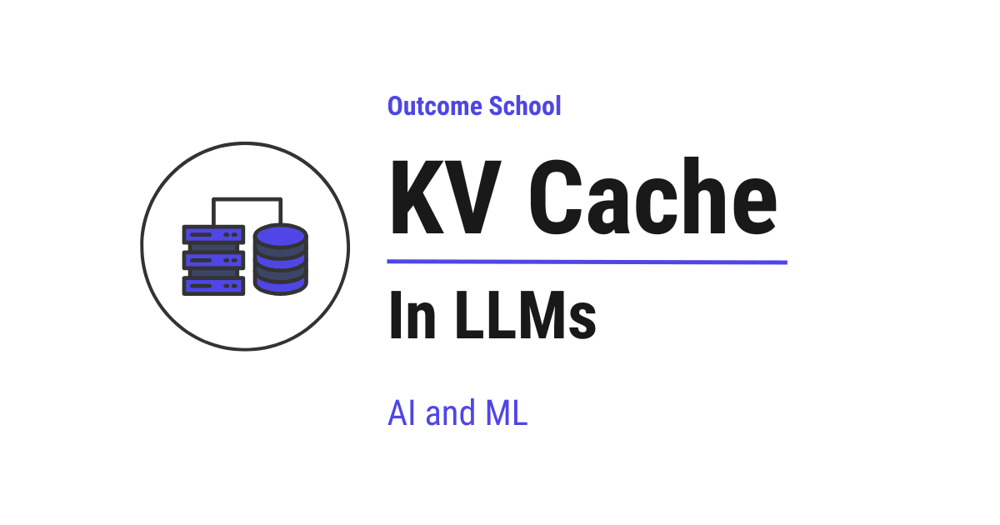
KV Cache is a memory inside a Large Language Model (LLM) that saves the work already done for the earlier words, so that the model does not repeat the same work for every new word it generates. Here, K stands for Key and V stands for Value.
In this blog, we will learn about KV Cache. We will start with how LLMs generate text one token at a time, understand the role of Key, Value, and Query inside the model, see the problem of repeated computation through an example, and then walk through how KV Cache solves this problem by storing and reusing past results.
Let's get started.
How LLMs Generate Text
Before we understand KV Cache, we first need to understand how LLMs generate text.
An LLM - Large Language Model - is a model that has been trained on a massive amount of text data. It can understand and generate human language. When we give it a sentence, it predicts what comes next.
LLMs generate text one token at a time. A token is a small piece of text - it can be a word, part of a word, or even a single character. For simplicity, let's treat each word as one token.
Let's say we give the model this input:
"I love"
The model looks at "I" and "love", and predicts the next token: "teaching".
Now the full sequence becomes:
"I love teaching"
The model looks at "I", "love", and "teaching", and predicts the next token: "AI".
Now the full sequence becomes:
"I love teaching AI"
This process continues, one token at a time, until the model decides to stop.
The important thing to notice here is: every time the model predicts a new token, it needs to look at all the previous tokens to decide what comes next.
This token-by-token generation happens in two phases, prefill and decode, and the KV Cache is the bridge between them. We have a detailed blog on Prefill vs Decode that explains this step by step.
What Happens Inside the Model
Now, let's understand what happens inside the model when it generates each token.
The model has a component called the attention layer, the heart of the Transformer architecture. The job of the attention layer is to help the model figure out which previous tokens are important for predicting the next token. Not all previous tokens are equally useful. Some matter more than others.
Inside the attention layer, every token is converted into three things. Let's understand each of them with a simple analogy.
Imagine a classroom where a new student joins and wants to find out who can help with a specific topic:
- Query (Q): The new student's question - "Who here knows about this topic?" Every token being predicted gets a Query. It represents what the token is looking for.
- Key (K): The name tag each existing student wears that says what they know - "I know about math" or "I know about science." Every previous token gets a Key. It describes what information that token holds.
- Value (V): The actual notes each student has. Once the new student finds the right person using their name tag (Key), the notes (Value) are what they actually use. Every previous token gets a Value. It carries the actual information.
So, the current token uses its Query to compare against the Keys of all previous tokens. This comparison produces attention scores - numbers that tell the model how much focus to give to each previous token. A higher score means that token is more relevant. A lower score means it is less relevant. The model then uses these scores to collect the Values from the relevant tokens. If we want to go deeper into how Q, K, and V are computed, we have a detailed blog on Math behind Attention: Q, K, V.
This is how the attention layer works.
Now, let's see the problem.
The Problem: Repeated Computation
Every time the model predicts the next token, it computes the Key, Value, and Query for all tokens in the sequence - not just the new one.
Let's see what happens step by step with our example:
Step 1: Input is "I love"
The model computes Key, Value, and Query for:
- "I"
- "love"
It uses these to predict the next token: "teaching".
Step 2: Input is "I love teaching"
The model computes Key, Value, and Query for:
- "I" (already computed in Step 1, but computed again)
- "love" (already computed in Step 1, but computed again)
- "teaching" (new)
It uses these to predict the next token: "AI".
Step 3: Input is "I love teaching AI"
The model computes Key, Value, and Query for:
- "I" (already computed in Step 1 and Step 2, but computed again)
- "love" (already computed in Step 1 and Step 2, but computed again)
- "teaching" (already computed in Step 2, but computed again)
- "AI" (new)
Do you see the problem?
The Key and Value for "I" were computed in Step 1. But the model computes them again in Step 2, and again in Step 3. The same goes for "love" and "teaching".
The model is repeating the same work for tokens it has already seen. This is wasted computation.
As the sequence grows longer, this problem gets worse. If the model has already generated 100 tokens, then at the next step, it would recompute the Key and Value for all 100 previous tokens just to predict one new token. This makes text generation very slow.
What is KV Cache?
KV Cache is a memory where we save the Key and Value of every token that has already been processed, so that the model does not compute them again.
So, here comes the KV Cache to the rescue. The idea behind KV Cache is simple: compute the Key and Value for each token once, store them, and reuse them in every future step.
Think of it like taking notes. Imagine you are in a meeting. Every time someone new speaks, instead of asking all the previous speakers to repeat what they said, you simply read from your notes and only listen to the new speaker. The notes are your cache.
Let's see how the same example works with KV Cache:
Step 1: Input is "I love"
The model computes Key, Value, and Query for:
- "I"
- "love"
It saves the Key and Value of "I" and "love" in the KV Cache.
It uses these to predict the next token: "teaching".
KV Cache now contains: Key and Value for "I", "love"
Step 2: Input is only "teaching" (only the new token)
The model retrieves the Key and Value of "I" and "love" from the KV Cache. No recomputation needed.
It computes Key, Value, and Query only for the new token: "teaching".
It saves the Key and Value of "teaching" in the KV Cache.
It uses all of these together to predict the next token: "AI".
KV Cache now contains: Key and Value for "I", "love", "teaching"
Step 3: Input is only "AI" (only the new token)
The model retrieves the Key and Value of "I", "love", and "teaching" from the KV Cache. No recomputation needed.
It computes Key, Value, and Query only for the new token: "AI".
It saves the Key and Value of "AI" in the KV Cache.
KV Cache now contains: Key and Value for "I", "love", "teaching", "AI"
So, instead of recomputing the Key and Value for every token at every step, the model computes them only for the new token and reuses the cached values for all previous tokens.
This is how KV Cache avoids repeated computation.
This same idea can be taken one step further by reusing the cached Keys and Values across many requests that share the same starting text. We have a detailed blog on Prompt Caching that explains how this works.
Why Only Key and Value Are Cached, Not Query
You would naturally ask: why do we cache only the Key and Value, and not the Query?
The Query is only needed for the current token - the one being generated right now. The current token uses its Query to compare against the Keys of all previous tokens to find which ones are relevant. Once the prediction is done, that Query is no longer needed.
But the Key and Value of every past token are needed at every future step, because every new token must look at all the previous tokens to make its prediction.
So, we only need to store the Keys and Values. This is why it is called KV Cache - it caches the Keys and Values.
How Much Faster Does It Get
Let's compare the two approaches side by side:
Without KV Cache:
Step 1: Compute K, V, Q for 2 tokens
Step 2: Compute K, V, Q for 3 tokens (2 recomputed)
Step 3: Compute K, V, Q for 4 tokens (3 recomputed)
Step 4: Compute K, V, Q for 5 tokens (4 recomputed)
...
Step N: Compute K, V, Q for (N+1) tokens (N recomputed)
The amount of computation keeps growing at every step.
With KV Cache:
Step 1: Compute K, V, Q for 2 tokens → Save K, V for 2 tokens in cache
Step 2: Compute K, V, Q for 1 token → Reuse K, V for 2 tokens from cache
Step 3: Compute K, V, Q for 1 token → Reuse K, V for 3 tokens from cache
Step 4: Compute K, V, Q for 1 token → Reuse K, V for 4 tokens from cache
...
Step N: Compute K, V, Q for 1 token → Reuse K, V for N tokens from cache
After the first step, the model computes only for one new token at each step instead of the entire sequence.
To put this into perspective: if the model is generating a sequence of 100 tokens, without KV Cache, the total number of Key and Value computations across all steps would be 2 + 3 + 4 + ... + 100 = 5,049 computations. With KV Cache, it would be 2 + 1 + 1 + ... + 1 = 101 computations. That is roughly 50 times fewer computations. The longer the sequence, the bigger the savings.
This is what makes KV Cache so effective at speeding up text generation.
The Trade-Off: Speed vs Memory
KV Cache makes generation faster, but it comes with a trade-off: it uses extra memory to store all the Key and Value information for every token that has been generated so far.
As the sequence gets longer, the cache grows larger. For very long sequences with thousands of tokens, the cache can consume a significant amount of memory.
For a chat that never ends, one common fix is to keep only a recent window of tokens plus the first few attention sinks, so that the cache stays at a fixed size. This is one of several KV Cache Compression techniques that shrink this memory, and the others do it without throwing away a single token.
So, KV Cache is a trade-off: we use more memory to save computation time. For most use cases, this trade-off is well worth it, as the speed improvement is significant.
When serving an LLM to many users at once, managing this KV Cache memory efficiently becomes critical. We have a detailed blog on vLLM that explains how a serving system handles this end to end.
Now, we have understood the KV Cache in LLMs.
In the next blog, we will learn about Paged Attention that solves the memory issue of KV Cache.
Frequently Asked Questions
Does the model still compute anything for the new token when KV Cache is used?
Yes. With KV Cache, the model still computes the Key, Value, and Query for the new token. It only skips the work for the previous tokens, whose Keys and Values it reads from the cache. Then it saves the Key and Value of the new token in the cache for future steps.
Can the KV Cache be reused across different requests?
Yes. The same idea can be taken one step further by reusing the cached Keys and Values across many requests that share the same starting text. This is called Prompt Caching. It builds on the KV Cache idea of computing something once and reusing it.
How do we stop the KV Cache from growing forever in a long chat?
One common fix is to keep only a recent window of tokens plus the first few attention sinks. This way, the cache stays at a fixed size. This is one of several KV Cache Compression techniques, and the others shrink the memory without throwing away a single token.
Does KV Cache solve the memory problem of LLMs?
No. KV Cache saves computation time, but it uses extra memory, and the cache grows larger as the sequence gets longer. When serving an LLM to many users, managing this memory becomes critical. Paged Attention is the technique that solves the memory issue of KV Cache.
Lesson 12.5
What is KV Cache Compression?
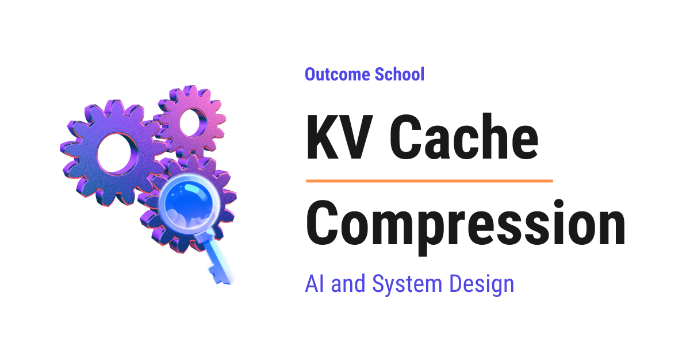
KV Cache Compression is a set of techniques that shrink the memory an AI model uses to remember the conversation while it is writing its reply, so that the model can handle longer text with less memory.
In this blog, we will learn about KV Cache Compression, the set of techniques that shrink the memory an AI model uses to remember the conversation while it is writing its reply. We will also see how an LLM writes one token at a time, what the KV Cache is and why we need it, why this cache becomes so huge, how quantization stores the same memory in fewer bits, how we can throw away the tokens that do not matter, how sharing across attention heads reduces the cache, how the cache can be squeezed into a small hidden vector, and when to use which one.
We will cover the following:
- What is an LLM and how it writes text?
- What is Attention?
- What is the KV Cache?
- Why the KV Cache becomes huge
- What is KV Cache Compression?
- Approach 1: Quantization
- Approach 2: Token Eviction
- Approach 3: Sharing Keys and Values across Heads
- Approach 4: Low-Rank Compression
- Comparison of the approaches
- When to use which one
Let's get started.
What is an LLM and how it writes text?
An LLM (Large Language Model) is an AI model that reads text and writes text. ChatGPT, Claude, Gemini, all of them are based on LLMs.
An LLM learns by reading a huge amount of text from the internet. This learning process is called training. Once the training is done, we can ask the model questions, and it writes the answers.
The most important thing to know about an LLM is that it does not write the full reply in one shot. It writes one small piece at a time. This small piece is called a token. For the sake of understanding, we can think of a token as a word.
Let's say we ask the model, "What is the capital of France?"
The model writes "The". Then it looks at everything so far and writes "capital". Then it looks at everything so far again and writes "of". Then "France". Then "is". Then "Paris".
So, to write every new token, the model has to look back at all the previous tokens. This looking back is done by something called Attention.
Now, let's understand Attention.
What is Attention?
Attention is the way a model decides which previous tokens are important for writing the next token.
In simple words, Attention is looking back and picking what matters.
Let's say the model is writing the sentence, "The dog was tired, so it went to sleep." When the model reaches the word "it", it needs to know that "it" refers to "the dog". So, the model pays more attention to "dog" and less attention to the other words.
Now, the question is, how does the model do this?
Every token is converted into three things:
- Query (Q): What the current token is looking for.
- Key (K): What each previous token offers, like a label.
- Value (V): The actual information that each previous token carries.
Each of these is just a list of numbers. In AI, a list of numbers is called a vector. So, every token has a Query vector, a Key vector, and a Value vector.
Let's take an analogy. Suppose we are in a library. We have a question in our mind. This is the Query. Every book has a title on its spine. This is the Key. The content inside the book is the Value.
We compare our question with the title of every book. The books whose titles match our question well get more attention. Then we read the content of those books and combine what we learned.
This is exactly what Attention does. The Query of the new token is compared with the Key of every previous token. Based on how well they match, the Values are combined and passed forward to help write the next token.
We have a detailed blog on Math behind Attention - Q, K, and V that explains this step by step.
One more thing to notice: A model does this Attention not just once. It has many layers stacked one after another, and every layer has many attention heads. Each head is like a separate reader looking for a different thing. One head looks for grammar, one looks for names, one looks for what "it" refers to, and etc.
Now that we have learned about Attention, it's time to learn about the KV Cache.
What is the KV Cache?
Now, let's see the problem. For every new token, the model needs the Key and the Value of every previous token.
Let's say the model has already written 100 tokens and is now writing the 101st token. It needs the Keys and Values of all 100 previous tokens. Without any memory, the model would calculate the Keys and Values of all the 100 tokens again. Then for the 102nd token, it would calculate for all 101 tokens again. And so on.
This is a huge waste. The Key and Value of a token never change once they are computed. So, why calculate them again and again?
So, here comes the KV Cache to the rescue.
KV Cache = Key + Value + Cache
A cache is just a memory where we store something so that we do not have to compute it again.
The KV Cache is the memory where the model stores the Keys and Values of every previous token so that it can reuse them while writing the next token.
Now, when the model writes the 101st token, it only calculates the Key and Value of the newest token, adds them to the cache, and reads everything else from the cache.
This makes text generation very fast. Problem Solved!
But, here is the catch. This cache grows with every single token. And it grows very fast.
Why the KV Cache becomes huge
The best way to learn this is by taking an example.
Before jumping into the example, we must know two small things. A bit is the smallest unit of memory in a computer, it is either 0 or 1. And 8 bits make 1 byte.
Let's take a model with the following. These numbers are close to the real numbers of Llama 2, a popular open-source model:
- 32 layers
- 32 attention heads in each layer
- Each head has a Key vector of 128 numbers and a Value vector of 128 numbers
- Each number is stored in 16 bits, which means 2 bytes
Now, let's calculate how much memory one token needs in the cache.
For one head in one layer, we store 128 numbers for the Key and 128 numbers for the Value. That is 256 numbers.
For 32 heads, that is 256 x 32 = 8,192 numbers.
For 32 layers, that is 8,192 x 32 = 262,144 numbers.
Each number takes 2 bytes. So, one token needs 262,144 x 2 = 524,288 bytes. That is 0.5 MB. Here, 1 MB is about a million bytes, and 1 GB is about a thousand MB.
Let's see the code for this calculation as below:
layers = 32
heads = 32
head_dim = 128
bytes_per_number = 2
# Key and Value, so multiply by 2
per_token = 2 * layers * heads * head_dim * bytes_per_number
print(per_token / (1024 * 1024)) # 0.5 MB
Here, we are multiplying the number of layers, the number of heads, the size of each head, and the bytes per number. We multiply by 2 in the beginning because we store both the Key and the Value.
Half an MB for one token does not sound like much. But now, let's see the full picture.
Suppose the user has a conversation of 4,000 tokens. That is 4,000 x 0.5 MB = 2 GB.
Suppose the user pastes a long document of 100,000 tokens. That is 100,000 x 0.5 MB = 50 GB. Just for the cache of one user.
The model runs on a GPU, a special chip that is very fast at doing math. A GPU has a fixed amount of memory, usually between 24 GB and 80 GB. And a big part of that memory is already taken by the model itself.
Now, suppose 100 users are talking to the model at the same time on the same GPU. Each one needs their own cache. The memory required is way beyond what any GPU has.
This is the problem. The KV Cache grows with the length of the text and with the number of users, and it eats the memory of the GPU.
And, it is not just about memory. For every new token, the model has to read the full cache from memory. A bigger cache means more time to read, which means slower generation.
We needed a solution for that, and KV Cache Compression was introduced to solve this problem.
One part of the fix is to stop wasting the memory we already have, and we have a detailed blog on Paged Attention that explains how a serving system does that. The other part is to make the cache itself smaller, which is what we will learn now.
What is KV Cache Compression?
KV Cache Compression is the set of techniques that make the KV Cache smaller while keeping the quality of the model output almost the same.
In simple words, we want to store the same memory of the conversation in less space.
There are different ways to do this. Some of them can be applied to an existing model, and some need to be built into the model before training. Let's understand each of them one by one, starting from the simplest.
Approach 1: Quantization
Quantization means storing each number in the cache using fewer bits.
Let's take an example. Suppose we want to write down the height of a person. We can write 175.4837 cm. Or we can write 175 cm. The second one takes less space to write, and for most purposes, it is good enough.
This is what quantization does. Normally, each number in the KV Cache is stored in 16 bits. With quantization, we store it in 8 bits, or even 4 bits.
Let's see with an example. Suppose the Key vector has these numbers:
[0.31, -0.72, 0.05, 0.98]
To store them in fewer bits, we first find the biggest value, which is 0.98. Then we scale every number to fit in a small range of whole numbers, from -127 to 127, which fits in 8 bits, as below:
values = [0.31, -0.72, 0.05, 0.98]
scale = max(abs(v) for v in values) / 127
quantized = [round(v / scale) for v in values]
print(quantized) # [40, -93, 6, 127]
Here, we are dividing every number by the scale and rounding it to the nearest whole number. Now, every number is a small whole number that fits in 8 bits instead of 16 bits. We just store the scale separately, so that we can get back close to the original values when needed.
- 16 bits to 8 bits: the cache becomes half the size.
- 16 bits to 4 bits: the cache becomes one-fourth the size.
Advantage: Very simple to add. We do not throw away any token. The quality loss is very less.
Disadvantage: Below 4 bits, the rounding error becomes big, and the model starts giving worse answers. So, there is a limit to how far we can go.
One more thing to notice: Keys and Values do not behave the same way. In Keys, a few positions always carry very big numbers, and normal rounding does not handle them well. So, good techniques like KIVI quantize Keys and Values in slightly different ways to keep the error small. Do not worry about the details, just remember that Keys and Values are treated differently for the best result.
The issue with this approach is that even with 4 bits, the cache still grows with every token. For very long conversations, it is still too big. Let's see how the next approach solve this issue.
Approach 2: Token Eviction
Token Eviction means throwing away the Keys and Values of the tokens that are not important.
Eviction simply means kicking something out. Here, we kick unimportant tokens out of the cache.
Let's take an analogy. Suppose we are reading a 500-page novel. We do not remember every single sentence. We remember the important characters, the important events, and the last few pages we just read. Everything else, we forget. And still, we understand the story perfectly.
The same idea applies here. Not every previous token is equally important for writing the next token. When the model computes Attention, most of the attention goes to a few tokens. The rest of the tokens get almost zero attention.
So, why keep them in the cache?
Now, the question is, how do we know which tokens are important?
The answer is in the Attention itself. Every time the model writes a new token, it computes how much attention every previous token receives. We can keep a running total of this for every token. The tokens with the highest total are the important ones. These are called heavy hitters. This is what the H2O (Heavy Hitter Oracle) technique does.
So, the rule is simple:
- Fix a budget, let's say 1,000 tokens.
- Always keep the most recent tokens, because the recent context is almost always important.
- From the older tokens, keep only the heavy hitters.
- Throw away the rest.
Now, the cache never grows beyond 1,000 tokens, no matter how long the conversation is.
But, here is the catch. There is one very interesting thing that was found. The very first few tokens of the text always receive a huge amount of attention, no matter what they are. Even if the first token is just a "start" marker with no meaning.
Why? Because Attention is like distributing 100 percent among all the previous tokens. The total must always be 100 percent. When no previous token is really useful, the model still has to put that attention somewhere. It learns to dump it on the first token. So, the first token acts like a sink where the unwanted attention goes.
Here comes the Attention Sink into the picture.
If we throw away the first token, the model output becomes meaningless. This was found by the StreamingLLM technique. So, the final rule is: always keep the first few tokens, always keep the recent tokens, and choose the heavy hitters from the middle.
Advantage: The cache has a fixed size. It does not matter how long the conversation is. This is the only approach that truly solves the unlimited growth problem.
Disadvantage: Once a token is thrown away, it is gone forever. If the user later asks about something that was in an evicted token, the model cannot remember it. This is a real loss of information. So, it works well for tasks like chatting and summarizing, but it fails for tasks that need exact recall, like "find the phone number mentioned on page 40".
The issue with this approach is the risk of forgetting something important. Let's see how the next approach solve this issue without throwing away anything.
Approach 3: Sharing Keys and Values across Heads
Till now, we have compressed the cache after the model is trained. This approach is different. Here, we change the design of the model itself before training.
Remember that every layer has many attention heads, and every head has its own Key and Value. In our example, 32 heads means 32 sets of Keys and Values per layer.
Now, the question is, do all 32 heads really need their own separate Keys and Values?
The answer is no. It was found that many heads can share the same Keys and Values and still work well. Only the Query needs to be separate for each head.
Let's take an analogy. Suppose 32 students are in a library. Each student has a different question in mind. This is the Query. But, the library does not need 32 separate copies of every book. All 32 students can look at the same shelf, the same book titles, and the same book contents. Only their questions are different.
There are two ways to do this:
- Multi-Query Attention (MQA): All the heads share one single Key and one single Value. In our example, 32 heads share 1 set. The cache becomes 32 times smaller.
- Grouped-Query Attention (GQA): Heads are divided into groups, and each group shares one Key and one Value. In our example, 32 heads divided into 8 groups means 8 sets instead of 32. The cache becomes 4 times smaller.
MQA compresses more but loses some quality. GQA is the middle ground. It gets most of the memory saving with almost no loss in quality. This is why most modern models like Llama 3, Mistral, and Gemma use GQA.
Advantage: No token is thrown away. No rounding error. The saving is built into the model, so it works all the time with no extra work while the model is running.
Disadvantage: This must be decided before training the model. We cannot apply it to an already trained model without retraining it. And, the cache still grows with every token, just at a slower rate.
The issue with this approach is that the saving is limited by the number of groups. Let's see how the next approach compress even further.
Approach 4: Low-Rank Compression
Low-Rank Compression means storing a small compressed version of the Key and Value, and expanding it back only when needed.
A low rank means the same information can be held in fewer numbers.
Let's take an analogy. Suppose we want to send a big photo to a friend. Instead of sending the full photo, we send a zipped file. The friend unzips it when they want to see it. The zipped file takes less space, and the photo is almost the same.
Here, instead of storing the full Key and Value of every token, the model stores one small vector called a latent vector. Latent simply means hidden. It is a hidden, compressed form of the Keys and Values. When the model needs the Key and Value, it expands the latent vector back using a small set of numbers it learned during training.
Let's see the numbers. In our example, each head stores 128 numbers for the Key and 128 numbers for the Value. For 32 heads, that is 8,192 numbers per layer per token. With Low-Rank Compression, the model stores a single latent vector of, let's say, 512 numbers per layer per token. That is 16 times smaller.
This is what the Multi-Head Latent Attention (MLA) technique does. It was introduced by DeepSeek in their DeepSeek-V2 model, and it is also used in DeepSeek-V3.
Now, you must be thinking, if we compress and then expand, do we not lose quality?
This is the beauty of this approach. The model is trained with this compression from the beginning. So, the model learns to put only the useful information inside the latent vector. Nothing important is lost.
Advantage: Huge memory saving. No token is thrown away. The quality is as good as the full Attention, and in some cases even better.
Disadvantage: Like GQA, this must be built into the model before training. We cannot apply it to an existing model. And, the model has to do a little extra computation to expand the latent vector.
DeepSeek-V4 pushes this idea even further by merging several consecutive tokens into one compressed cache entry. We have a detailed blog on Decoding DeepSeek-V4 that covers this end to end.
Now, we have understood all the four approaches.
Comparison of the approaches
One more thing to notice: These approaches are not competing with each other. They can be combined. A model can use MLA in its design, then we can apply quantization to the latent vectors, and then apply token eviction on top of that.
Let me tabulate the differences between these approaches for your better understanding.
| Quantization | Token Eviction | Sharing across Heads | Low-Rank Compression | |
|---|---|---|---|---|
| How it saves memory | Fewer bits per number | Fewer tokens stored | Fewer Keys and Values per layer | Smaller vector per token |
| Needs retraining | No | No | Yes | Yes |
| Throws away tokens | No | Yes | No | No |
| Typical saving | 2x to 4x | Fixed cache size | 4x to 8x | 10x or more |
| Quality loss | Very less | Depends on the task | Very less | Almost none |
| Example | KIVI | H2O, StreamingLLM | GQA, MQA | MLA (DeepSeek) |
When to use which one
So, based on our use case:
- If we are running an existing model and want a quick memory saving, use Quantization. It is the easiest thing to add.
- If we have a very long conversation, or text that keeps coming in without an end, use Token Eviction with Attention Sinks.
- If we need exact recall of everything in a long document, do not use Token Eviction. Use Quantization, or a model that has GQA or MLA built in.
- If we are training a new model, use GQA or MLA in the design from day one.
- If we want the maximum saving, combine them. Start with a model that has MLA or GQA, then quantize the cache, and then evict if the task allows.
This is how KV Cache Compression lets an LLM remember a very long conversation, serve many users at the same time, and write faster, and that too without needing a bigger GPU.
Now, we must have understood KV Cache Compression.
Frequently Asked Questions
Does a smaller KV Cache also make text generation faster?
Yes. For every new token, the model has to read the full cache from memory. A bigger cache means more time to read, which means slower generation. So, a smaller cache helps the model write faster, not just use less GPU memory.
Is Paged Attention a KV Cache Compression technique?
No. Paged Attention and KV Cache Compression solve two different parts of the memory problem. Paged Attention stops wasting the memory we already have in a serving system. KV Cache Compression makes the cache itself smaller.
Can we use more than one KV Cache Compression approach together?
Yes. These approaches are not competing with each other, and they can be combined. A model can use MLA in its design, then we can apply quantization to the latent vectors, and then apply token eviction on top of that for the maximum saving.
Why should we never evict the first tokens from the cache?
The very first few tokens always receive a huge amount of attention, no matter what they are. The model learns to dump its unwanted attention there, so they act like an attention sink. If we throw away the first token, the model output becomes meaningless.
Can we add Grouped-Query Attention to an already trained model?
No. Sharing Keys and Values across heads, like in GQA or MQA, must be decided before training the model. We cannot apply it to an already trained model without retraining it. The same is true for Low-Rank Compression like MLA.
Lesson 12.6
What is Paged Attention in LLMs and How Does It Work?
Paged Attention is a technique that manages the KV Cache memory more efficiently by breaking it into small, fixed-size blocks called pages. This removes the memory waste and lets LLMs serve many more users at the same time.
In this blog, we will learn about Paged Attention, a technique that solves the memory waste problem of KV Cache, allowing LLMs to serve many more users at the same time.
We will start with a quick recap of KV Cache, understand the memory problem it creates, see how traditional memory allocation wastes space through an example, and then walk through how Paged Attention solves this problem by borrowing an idea from how computers manage memory.
Let's get started.
Quick Recap: KV Cache
When an LLM generates text, it predicts one token at a time. A token is a small piece of text. It can be a word, part of a word, or even a single character.
At each step, the model computes a Key and a Value for the new token and needs the Keys and Values of all previous tokens.
Without KV Cache, the model would recompute the Key and Value for every previous token at every step, wasting computation. KV Cache solves this by storing the Key and Value of each token after it is computed, so they can be reused in future steps.
KV Cache makes text generation much faster. But it comes with a trade-off: it uses memory to store all those Keys and Values.
Now, let's understand the memory problem this creates.
The Problem: Memory Waste in KV Cache
When a user sends a request to an LLM, the system needs to set aside memory for the KV Cache of that request. But here is the challenge: the system does not know in advance how long the response will be.
A user can ask a simple question that results in a 20-token response, or a complex question that results in a 2,000-token response. The system has no way of knowing upfront.
In the traditional approach, the system reserves one large block of memory for each request - where all the slots are right next to each other - enough to handle the maximum possible response length. This means reserving memory for, say, 2,048 tokens, even if the actual response turns out to be only 50 tokens.
Let's understand this with an analogy.
The Hotel Analogy
Imagine a hotel where guests check in but do not know how many nights they will stay. Some will stay 1 night, some will stay 30 nights.
Traditional approach: When a guest checks in, the hotel reserves 30 rooms in a row on the same floor, just in case the guest stays for 30 nights. Even if the guest stays for only 2 nights, all 30 rooms remain reserved and cannot be given to anyone else.
Now imagine 10 guests check in. The hotel reserves 30 × 10 = 300 rooms in a row. But if most guests stay only a few nights, hundreds of rooms sit empty and wasted.
This is exactly what happens with KV Cache memory in the traditional approach.
The waste shows up in two ways:
- Internal waste: Memory is reserved but never used. If a request only generates 50 tokens but memory was reserved for 2,048 tokens, the remaining space for 1,998 tokens is wasted.
- External waste: Because memory must be allocated in one large block with all slots next to each other, small gaps of free memory scattered around cannot be used, even if together they would be enough to serve a new request.
This memory waste is a serious problem. A large portion of the reserved memory is never actually used.
Because memory is limited, this waste means the system can serve fewer users at the same time. If the system could use memory more efficiently, it could handle many more requests simultaneously.
This is the problem that Paged Attention solves.
What is Paged Attention?
Paged Attention is a technique that manages KV Cache memory more efficiently by breaking it into small, fixed-size blocks called pages. These pages do not need to be next to each other in memory.
The word "Paged" comes from a concept in operating systems. An operating system manages memory for all the programs running on the computer.
Instead of giving each program one large block of memory with all slots next to each other, the operating system breaks memory into small, fixed-size pieces called pages. Each program gets as many pages as it needs, and these pages can be scattered anywhere in memory. The operating system keeps track of where each page is using a page table, a simple list that maps each page of a program to its actual location in memory.
Paged Attention applies the same idea to KV Cache.
Let's go back to our hotel analogy to understand how this works.
The Hotel Analogy: Paged Approach
Paged approach: Instead of reserving 30 rooms in a row for each guest, the hotel gives rooms one at a time, as needed. When a guest checks in, they get 1 room. When they need another night, they get another room, wherever one is available. It does not have to be next to the first room. The hotel keeps a list that tracks which rooms belong to which guest.
Now, if a guest stays for only 2 nights, only 2 rooms are used. The remaining rooms are free for other guests. No waste.
If 10 guests check in, each gets only the rooms they actually need. The hotel can serve far more guests with the same number of rooms.
This is how Paged Attention works with KV Cache.
How Paged Attention Works
In Paged Attention, the KV Cache memory is divided into small, fixed-size blocks. Each block can store the Key and Value for a fixed number of tokens. For example, if the block size is 4, each block can store the Key and Value for 4 tokens.
Let's walk through an example.
Without Paged Attention (Traditional Approach)
The system reserves one large block of memory for, say, 16 tokens upfront:
Memory: [__ __ __ __ __ __ __ __ __ __ __ __ __ __ __ __]
Reserved for this request (16 slots)
As the model generates tokens, it fills the slots one by one:
Memory: [I love teaching AI and Machine Learning at Outcome School __ __ __ __ __ __]
Used: 10 tokens Wasted: 6 slots
The remaining 6 slots are reserved but never used - wasted memory.
With Paged Attention
The system allocates memory in small blocks of 4 tokens each, only when needed:
Step 1: The model starts generating. The system allocates Block 1 from wherever available in memory:
Block 1: [I love teaching AI]
Step 2: Block 1 is full. The system allocates Block 2. It does not have to be next to Block 1:
Block 1: [I love teaching AI]
Block 2: [and Machine Learning at]
Step 3: Block 2 is full. The system allocates Block 3:
Block 1: [I love teaching AI]
Block 2: [and Machine Learning at]
Block 3: [Outcome School __ __]
Only 2 slots are wasted in Block 3, compared to 6 in the traditional approach. And no memory was reserved upfront that went unused.
The Block Table
But if the blocks are scattered across memory, how does the model find them?
The system keeps track of which blocks belong to which request using a block table, just like how an operating system uses a page table.
Block Table for Request 1:
Block 0 → Location 5 in memory
Block 1 → Location 12 in memory
Block 2 → Location 3 in memory
The blocks are numbered in order (0, 1, 2) and each one points to its actual location in memory. When the model needs to read the Key and Value of a previous token, it uses the block table to find the right block.
This is how the model can access the Key and Value of any previous token, even though the blocks are scattered across memory.
Why Paged Attention Is So Effective
Paged Attention solves the two types of memory waste we discussed earlier:
- Internal waste is nearly eliminated. Memory is allocated only as needed, block by block. The only waste is in the last block, which will not always be completely full. In our example, only 2 out of 4 slots were wasted in the last block, compared to 6 out of 16 in the traditional approach.
- External waste is eliminated. Because blocks do not need to be next to each other, any free block anywhere in memory can be used. There are no unusable gaps.
The result: Paged Attention can use memory much more efficiently. This means the system can serve significantly more requests at the same time with the same amount of memory.
Note that Paged Attention does not make the KV Cache itself smaller, it only stops the memory around it from being wasted. Shrinking the cache itself is the job of KV Cache Compression.
Memory Sharing Across Requests
Paged Attention also enables an important optimization: memory sharing.
Let's say two users ask the same question. The input tokens (the question) are the same for both requests. With Paged Attention, both requests can share the same blocks for the input tokens, because the Key and Value for those tokens will be identical.
Instead of storing two copies, the system stores one copy and both requests point to the same blocks in their block tables. This saves even more memory.
This is especially useful in scenarios like:
- Parallel sampling: Sometimes we want the model to generate multiple different responses for the same question, so we can pick the best one. Since the question is the same for all responses, the input blocks can be shared across all of them.
- Beam search: Sometimes the model explores multiple possible completions at the same time to find the best one. Again, the shared input can be stored once and reused across all the parallel sequences.
In these cases, memory sharing significantly reduces the total memory needed.
This idea of sharing identical prefixes is taken even further by SGLang, which organizes shared text in a radix tree to match shared prefixes even more precisely.
Paged Attention is the core idea behind vLLM, the popular high-throughput serving engine. We have a detailed blog on vLLM that explains how it works. The same block-based idea shows up in NVIDIA's engine under the name paged KV cache, and we have a detailed blog on how TensorRT-LLM works that covers it end to end.
Now, we have understood Paged Attention and how it borrows the idea of paging from operating systems to manage KV Cache memory efficiently, eliminate waste, and serve more users at the same time.
In the next blog, we will learn about Continuous Batching, which pairs with Paged Attention to keep the GPU busy by adding new requests to the batch the moment any old request finishes.
Frequently Asked Questions
Does Paged Attention make the KV Cache smaller?
No. Paged Attention does not make the KV Cache itself smaller. It only stops the memory around it from being wasted. Shrinking the cache itself is the job of KV Cache Compression.
Why can't the system reserve the exact memory needed for each request?
Because the system does not know in advance how long the response will be. A simple question may need a 20-token response, while a complex one may need 2,000 tokens. So, the traditional approach reserves memory for the maximum possible length, and a large portion of it goes unused.
Does Paged Attention remove all memory waste?
Almost. External waste is eliminated, because blocks do not need to be next to each other and any free block can be used. Internal waste is nearly eliminated, since memory is allocated block by block. The only waste left is in the last block, which will not always be completely full.
Is Paged Attention the same thing as vLLM?
No. Paged Attention is a technique, and vLLM is a popular high-throughput serving engine built on it. Paged Attention is the core idea behind vLLM. The same block-based idea also shows up in NVIDIA's TensorRT-LLM under the name paged KV cache.
How does Paged Attention work with Continuous Batching?
Continuous Batching pairs with Paged Attention to keep the GPU busy. It adds new requests to the batch the moment any old request finishes. Paged Attention makes room for these extra requests by using memory much more efficiently.
Lesson 12.7
What is Continuous Batching in LLMs and How Does It Work?
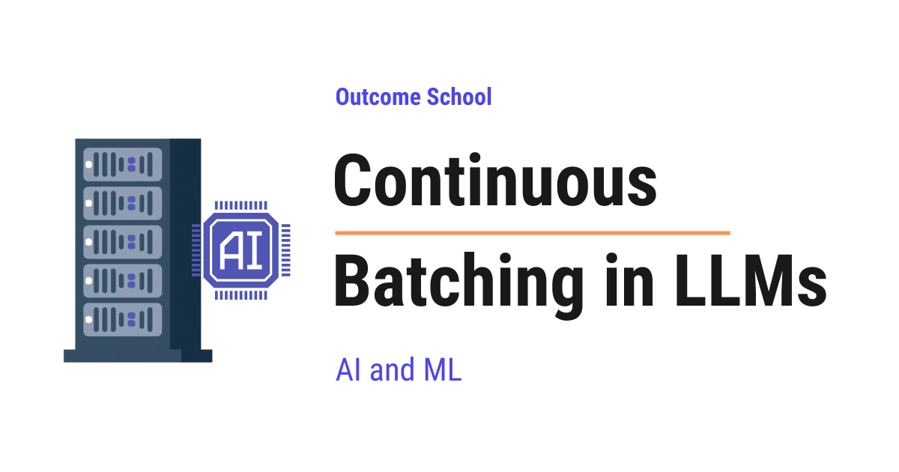
Continuous Batching is a technique where an LLM server does not wait for the whole batch to finish. The moment any request finishes, it immediately puts a new waiting request in its place, so that the GPU is always busy.
In this blog, we will learn about Continuous Batching, a technique that lets LLM servers handle many more users at the same time by keeping the GPU busy at every single step of generation.
We will cover the following:
- The Big Picture
- Quick Recap: How an LLM Generates Tokens
- Why Batching Matters for LLMs
- The Old Way: Static Batching
- The Problem with Static Batching
- What is Continuous Batching?
- The Ride-Share Analogy
- How Continuous Batching Works Step by Step
- A Numeric Example
- Real Numbers and Speedup
- Benefits of Continuous Batching
- A Few Important Notes
- Quick Summary
Let's get started.
The Big Picture
Before we go into the details, let's understand the big picture.
When many users send requests to an LLM at the same time, the server has to process all of them. The server runs on a GPU, which is very good at doing many small jobs in parallel. To use the GPU well, the server groups requests together into a batch and processes them at the same time.
The old way of batching, called Static Batching, makes the GPU wait. The new way, called Continuous Batching, keeps the GPU busy at every step.
In simple words:
Continuous Batching = Adding new requests to the batch the moment any old request finishes, instead of waiting for the whole batch to finish.
This single idea makes LLM servers serve many more users with the same hardware.
Quick Recap: How an LLM Generates Tokens
To understand Continuous Batching, we must first understand how an LLM generates a response.
A token is a small piece of text. It can be a word, part of a word, or a single character.
An LLM generates text one token at a time. To generate the next token, it looks at all the tokens so far and predicts the most likely next one. Then it adds that token to the text and predicts the next one. This continues until the model decides to stop.
Inference has two phases:
- Prefill phase: The model reads the entire prompt at once and processes all the input tokens together in a single forward pass. During this pass, it computes the Key and Value for every prompt token and stores them in the KV Cache. At the end of prefill, the model produces the first output token. This happens once per request, at the start.
- Decode phase: The model generates one token at a time. Each new token is one step. A response of 200 tokens means 200 decode steps.
The key point for us is this: generating a response is not one big task. It is hundreds of small steps, one token per step.
Because the response is produced one token per step, the server can send each token to the user the moment it is ready, instead of waiting for the whole reply. We have a blog on how Token Streaming works that explains how this works.
To make decoding fast, the server stores something called the KV Cache for each request. The KV Cache holds the Keys and Values of all the tokens seen so far, so the model does not have to recompute them at every step. Each request in the batch has its own KV Cache. If we want to go deeper, we can read our detailed blog on KV Cache.
Why Batching Matters for LLMs
LLMs run on GPUs. A GPU is very good at doing the same kind of work on many pieces of data at the same time. If we give the GPU only one request to process, most of its power sits idle.
To keep the GPU busy, the server processes many requests together. This group is called a batch.
Let's say 8 users send requests at the same time. Instead of running them one by one, the server runs all 8 together as a batch. The GPU does the work for all 8 in roughly the same time as it would take for just 1.
This is why batching matters: it lets a single GPU serve many users at the same time, without making each user wait much longer than if they were the only one.
But there is a catch. How do we form the batch? When do we start it? When do we end it? This is where Static Batching and Continuous Batching differ.
The Old Way: Static Batching
In Static Batching, the server collects a fixed group of requests, runs them together, and waits for all of them to finish before starting a new batch.
Let's see how it works:
- The server collects, say, 4 requests into a batch.
- It runs the prefill phase for all 4 requests together.
- Then it runs the decode phase. Each decode step produces one new token for each of the 4 requests.
- It keeps decoding until every request in the batch is done.
- Only after all 4 requests are done does the server start a new batch.
This is simple and easy to build. But it has a serious problem.
The Problem with Static Batching
The problem is that different requests finish at very different times.
One user may ask "What is 2 + 2?" and the response is just a few tokens. Another user may ask "Write a detailed essay on climate change." and the response is 1,000 tokens.
If both are in the same batch, the short request finishes after 5 decode steps. But the batch keeps running for hundreds of steps because the long request is still going.
What happens to the slot that the short request was using? It just sits there empty. The GPU still does the work for that empty slot, but the work produces nothing useful. It is wasted.
Do you see the problem?
For most of the batch's life, only a few of the slots are doing useful work. The rest are empty, waiting for the slowest request to finish. The GPU is busy, but most of its work is wasted.
And new users who arrive in the middle have to wait for the entire current batch to finish before they can even start.
So, here comes Continuous Batching to the rescue.
What is Continuous Batching?
Continuous Batching is a way of running batches where the server does not wait for the whole batch to finish. The moment any request in the batch finishes, the server immediately replaces it with a new request that is waiting in the queue.
The batch is never idle. Every slot is always doing useful work for some request.
Instead of thinking of a batch as "a group of requests that start and end together", we think of it as "a group of slots that always have someone in them."
The key idea is simple:
Static Batching works at the request level. Continuous Batching works at the token level.
In Static Batching, the unit of work is "a full request". The batch starts when all requests start, and ends when all requests end.
In Continuous Batching, the unit of work is "one decode step for whoever is in the batch right now". After every single decode step, the server checks: has anyone finished? If yes, swap them out. Has any new request arrived? If yes, slot them in.
The Ride-Share Analogy
Let's understand this with a real-world analogy.
Imagine a shared cab that has 4 seats. The cab drives along a long route and drops off passengers one by one as they reach their stops.
Static Batching is like this: 4 passengers get in at the start. The cab waits at every stop until all 4 passengers have reached their destinations. Even if one passenger reaches their stop in 5 minutes, their seat stays empty for the rest of the trip. New passengers waiting on the road cannot get in until the whole trip is over and the cab returns to pick up the next group of 4.
Continuous Batching is like this: 4 passengers get in at the start. As soon as any passenger reaches their stop and gets out, a new passenger waiting on the road immediately takes that empty seat. The cab always has 4 passengers in it. No seat is ever empty for long.
Which cab serves more passengers in a day? Clearly the second one. The seat is the expensive resource, and we keep every seat full at all times.
The seat is the GPU slot. The passenger is the request. The time a passenger spends in the cab is the number of tokens that request generates. Continuous Batching keeps every GPU slot full at every step.
How Continuous Batching Works Step by Step
Let's walk through how a server with Continuous Batching handles requests.
Step 1: The server has a fixed number of slots in the batch. Let's say 4 slots.
Step 2: Requests arrive in a queue. As long as there is a free slot in the batch, the server takes the next request from the queue and puts it in that slot. The server runs the prefill phase for the new request to prepare its state.
Step 3: The server runs one decode step for all requests currently in the batch. Each request gets one new token.
Step 4: After the decode step, the server checks each request. A request is finished when the model produces a stop token or hits the maximum length. If a request is finished, the server removes it from the slot and sends the result back to the user.
Step 5: The server looks at the queue. If there is a waiting request, it goes into the now-empty slot. The server runs prefill for it.
Step 6: The server runs the next decode step. Repeat from Step 4.
The whole flow looks like this:
+-----------+
| Queue | <- new requests arrive here
+-----------+
|
| pull when a slot is free
v
+-------------------------------+
| Batch (4 slots) |
| [Slot 1] [Slot 2] |
| [Slot 3] [Slot 4] |
+-------------------------------+
|
v
+-------------------------------+
| Decode step |
| (one new token per slot) |
+-------------------------------+
|
v
+-------------------------------+
| Check each slot: |
| - finished? remove and send |
| - free? pull from queue |
+-------------------------------+
|
+---> loop back to Decode step
This loop keeps running. Every single decode step, the server checks for finishes and new arrivals. The batch is always full. The GPU is always doing useful work.
A Numeric Example
Let's put this into perspective with real numbers.
Suppose the server has 4 slots. Four requests arrive:
- Request A: needs 100 decode steps
- Request B: needs 20 decode steps
- Request C: needs 50 decode steps
- Request D: needs 200 decode steps
A new request E arrives just after the batch starts. E needs 30 decode steps.
With Static Batching:
The batch starts with A, B, C, D. E waits in the queue. Here is how the slots look at each step ([.] means an empty slot doing wasted work):
Slot 1 Slot 2 Slot 3 Slot 4 Queue
Step 0: [A] [B] [C] [D] [E]
Step 20: [A] [.] [C] [D] [E] <- B done, slot sits empty
Step 50: [A] [.] [.] [D] [E] <- C done, two slots empty
Step 100: [.] [.] [.] [D] [E] <- A done, three slots wasted
Step 200: [.] [.] [.] [.] [E] <- D done, batch ends
From step 20 onwards, the GPU is mostly doing wasted work on empty slots. E has been waiting in the queue this whole time. Only after step 200 does E finally get a slot to start.
With Continuous Batching:
The batch starts with A, B, C, D. E waits in the queue.
Slot 1 Slot 2 Slot 3 Slot 4 Queue
Step 0: [A] [B] [C] [D] [E]
Step 20: [A] [E] [C] [D] [ ] <- B done, E slots in immediately
Step 50: [A] [.] [.] [D] [ ] <- E and C both finish
Step 100: [.] [.] [.] [D] [ ] <- A done
Step 200: [.] [.] [.] [.] [ ] <- D done
E finishes at step 50 instead of waiting until step 200 to even start. Slots only sit empty here because the queue ran out of requests. In a real server with steady traffic, every slot stays full at every step, and the GPU keeps doing useful work.
Real Numbers and Speedup
Let's put this into perspective with real numbers so we can clearly see how much we save.
Suppose:
- Each decode step takes 50 ms on the GPU
- The batch size is 4 slots
- We use the same 5 requests from the example above (A=100, B=20, C=50, D=200, E=30 tokens)
Without Continuous Batching (Static):
Round 1: A, B, C, D in batch. Batch runs until all done = 200 steps.
Time: 200 x 50 ms = 10,000 ms = 10.0 s
Round 2: E (alone in next batch). Runs 30 steps.
Time: 30 x 50 ms = 1,500 ms = 1.5 s
Total time to finish all 5 requests: 11.5 s
Total tokens generated: 100 + 20 + 50 + 200 + 30 = 400 tokens
With Continuous Batching:
All 5 requests finish in one continuous run.
E slots in at step 20 and finishes at step 50.
D, the longest, finishes at step 200.
Total time to finish all 5 requests: 200 x 50 ms = 10,000 ms = 10.0 s
Total tokens generated: 400 tokens
Now let's compare what the user actually feels - the response time per request.
Static Batching Continuous Batching
Request A (100): 5.0 s 5.0 s
Request B (20): 1.0 s 1.0 s
Request C (50): 2.5 s 2.5 s
Request D (200): 10.0 s 10.0 s
Request E (30): 11.5 s 2.5 s <- 4.6x faster
Average: 6.0 s 4.2 s
User E waited 10 seconds for the previous batch to finish before E even started. With Continuous Batching, E slots in immediately and finishes 4.6 times faster.
Now, let's see the impact on a realistic workload.
Suppose 100 requests arrive at the server:
- 50 short requests (20 tokens each)
- 50 long requests (200 tokens each)
- Total tokens to generate: 50 x 20 + 50 x 200 = 11,000 tokens
The key metric here is throughput - the number of tokens the server produces per second. Higher throughput means more users served on the same hardware. The math works out as below:
Without Continuous Batching:
Each batch of 4 has on average 2 short + 2 long requests.
The batch runs until the longest finishes = 200 steps.
Number of batches: 100 / 4 = 25 batches
Time per batch: 200 x 50 ms = 10 s
Total time: 25 x 10 = 250 s
Throughput: 11,000 tokens / 250 s = 44 tokens/sec
With Continuous Batching:
Slots stay full because the queue keeps feeding new requests.
Each step produces 1 token per slot = 4 tokens per step.
Steps needed: 11,000 / 4 = 2,750 steps
Total time: 2,750 x 50 ms = 137,500 ms = 137.5 s
Throughput: 11,000 tokens / 137.5 s = 80 tokens/sec
Speedup: 80 / 44 = 1.8x
Time saved: 250 - 137.5 = 112.5 s (45% less time for the same work)
Here is the same comparison shown on a timeline as below:
Time (seconds): 0 50 100 150 200 250
Without: |==========================================| 250 s
(25 batches of 4, each running 200 steps)
With: |=======================| 137.5 s
(continuous, 4 slots always full)
<--- 112.5 s saved --->
The server finishes the same work in 137.5 seconds instead of 250 seconds. Same hardware, almost twice the work done. That is the beauty of Continuous Batching.
In practice, the speedup ranges from 2x to 4x for most real workloads. The exact number depends on:
- How much the request lengths vary (more variance = bigger win)
- How steady the incoming traffic is (steady traffic = bigger win)
- The model and the hardware
Published benchmarks from systems like vLLM show that Continuous Batching combined with Paged Attention can deliver more than 20 times higher throughput than naive serving, and 2 to 4 times higher than static batching on the same GPU.
Benefits of Continuous Batching
Continuous Batching gives us three big benefits:
- Higher throughput: Throughput is the number of tokens the server produces per second. Because the GPU is always doing useful work, it produces more tokens per second. In real systems, throughput often goes up by several times compared to Static Batching.
- Lower waiting time: New requests do not have to wait for the whole batch to finish. They slot in as soon as any seat opens up. This makes the user feel that the server is fast.
- Better hardware usage: The GPU is the most expensive part of an LLM server. Continuous Batching keeps it busy with useful work, so we get more value out of the same GPU.
This is why almost all modern LLM serving systems, like vLLM, SGLang, TensorRT-LLM, and others, use Continuous Batching.
A Few Important Notes
- Continuous Batching works very well with Paged Attention. Paged Attention solves the memory waste problem of KV Cache, and Continuous Batching solves the compute waste problem of static batches. Together, they are the reason a single GPU can serve many users at once. We have a detailed blog on how vLLM works that explains how a serving system puts both of these together.
- Continuous Batching does not change the model itself. It does not change how attention works, how tokens are generated, or what the model outputs. It only changes how the server schedules requests on the GPU. The output for each user is the same as if their request was run alone.
- The batch size is not unlimited. The GPU has limited memory, and each request in the batch uses memory for its KV Cache. The server picks a batch size that fits in memory. If the batch is full, new requests wait in the queue until a slot opens. Shrinking each request's cache with KV Cache Compression is one way to fit more requests into the same memory.
- In Continuous Batching, a new request's prefill runs on the same GPU as the decode steps of everyone else. When a very long prompt arrives, its prefill can pause the decode of all the other users for a moment. At a very large scale, Prefill-Decode Disaggregation removes this by running prefill and decode on separate GPUs.
- The numbers in our examples use a few simplifications for clarity. When a new request joins a continuous batch, there is a small prefill cost we treated as zero, and the static-batch mix we used (2 short + 2 long) is an average that real batches will vary around. The qualitative pattern - that Continuous Batching wins by several times when request lengths vary - holds across all real workloads.
Quick Summary
Let's recap what we have learned:
- LLMs generate one token at a time. A response is hundreds of small decode steps, not one big task.
- Batching matters because GPUs are best at doing the same work on many pieces of data at the same time.
- Static Batching runs a fixed group of requests together and waits for the slowest one to finish. Slots that finish early sit empty and waste GPU work.
- Continuous Batching swaps in a new request the moment any old request finishes. The batch is always full.
- Ride-share analogy: Static Batching is a cab that waits till all passengers reach their stops. Continuous Batching is a cab that picks up a new passenger the moment a seat opens.
- Token-level scheduling: Continuous Batching works at the token level, not the request level. Every decode step, the server checks for finishes and arrivals.
- Benefits: higher throughput, lower waiting time, and better GPU usage.
- Pairs well with Paged Attention: Together they solve both the memory waste and compute waste problems of LLM serving.
This is how Continuous Batching keeps the GPU busy and lets a single server handle many more users at the same time.
Frequently Asked Questions
Does Continuous Batching change the output of the model?
No. Continuous Batching does not change the model, how attention works, or how tokens are generated. It only changes how the server schedules requests on the GPU. The output for each user is the same as if their request was run alone.
How much faster is Continuous Batching than Static Batching?
In practice, the speedup ranges from 2x to 4x for most real workloads. The exact number depends on how much the request lengths vary, how steady the incoming traffic is, and the model and hardware. More variance in request lengths and steadier traffic give a bigger win.
What is the difference between Continuous Batching and Paged Attention?
Paged Attention solves the memory waste problem of the KV Cache. Continuous Batching solves the compute waste problem of static batches. They work very well together, and together they are the reason a single GPU can serve many users at once.
Can we keep adding requests to a continuous batch without limit?
No. The GPU has limited memory, and each request in the batch uses memory for its KV Cache. The server picks a batch size that fits in memory, and new requests wait in the queue until a slot opens. KV Cache Compression is one way to fit more requests into the same memory.
Can one long prompt slow down other users in Continuous Batching?
Yes. A new request's prefill runs on the same GPU as the decode steps of everyone else. When a very long prompt arrives, its prefill can pause the decode of all the other users for a moment. At a very large scale, Prefill-Decode Disaggregation removes this by running prefill and decode on separate GPUs.
Lesson 12.8
What is Speculative Decoding and How Does It Make LLMs Faster?

Speculative Decoding is a technique that makes an LLM generate text faster without losing quality. A small draft model quickly guesses the next few tokens, and the big model verifies all those guesses in one single run.
In this blog, we will learn about Speculative Decoding - what it is, why LLM generation is slow without it, how a small draft model and a big target model work together to produce tokens faster, the rejection sampling math that guarantees no quality loss, real numbers showing the 2x to 3x speedup, where it is used in production, and the trade-offs to watch out for.
We will cover the following:
- What problem does Speculative Decoding solve?
- The Big Picture
- Why is LLM generation slow?
- The core idea behind Speculative Decoding
- Step-by-step walkthrough
- The verification step
- Real numbers and speedup
- Where it is used
- Trade-offs
- Quick Summary
Let's get started.
What problem does Speculative Decoding solve?
When we use ChatGPT, Claude, or Gemini that use LLM internally, we notice that the model writes one word at a time. It does not write a full paragraph in one shot. It writes a token, then the next token, then the next.
This is slow.
The bigger the model, the slower it gets. Every single token forces the entire model to do one full forward pass. Billions of parameters get loaded from GPU memory just to produce one token. Then the same thing happens again for the next token. And again. And again.
Speculative Decoding is a technique that makes this faster, without changing the model and without losing any quality.
The Big Picture
Before we go into the details, let's understand the big picture.
Speculative Decoding uses two models. One small model that is fast but not very smart. One large model that is slow but very smart. The small model writes a quick draft of the next few tokens. The large model then verifies all those tokens in one shot.
In simple words:
Speculative Decoding = A small model drafts tokens + The big model verifies them in parallel.
If the draft is good, we get many tokens for the price of one big-model step. If the draft is bad, we throw away the wrong tokens and continue from where the draft was correct.
The output is exactly the same as if we had used the big model alone. There is no quality loss.
Why is LLM generation slow?
To understand Speculative Decoding, we must first understand why normal LLM generation is slow.
LLMs generate text in an autoregressive way. This means the model produces one token, then takes that token as input, and produces the next one.
Let's say we want the model to write "I love teaching AI and Machine Learning." The model does this like below:
Step 1: Input "I" -> Output "love"
Step 2: Input "I love" -> Output "teaching"
Step 3: Input "I love teaching" -> Output "AI"
... and so on
For each step, the entire large model runs once. If the model has 70 billion parameters, then for every single token, those 70 billion parameters are read from GPU memory.
Now, here is the interesting part. The GPU is not slow at math. The GPU is slow at moving memory. Most of the time during a single token generation is spent loading the model weights into the compute units, not doing the actual math.
This means the GPU has a lot of free compute power that is sitting idle while it waits for memory.
Do you see the problem? We are paying the full memory cost for every single token, but we are barely using the GPU's compute.
This is the gap that Speculative Decoding fills.
The core idea behind Speculative Decoding
Speculative Decoding has a very simple idea behind it.
Let's say we have two models:
- A small model called the draft model. It is fast. Say, 1 billion parameters.
- A large model called the target model. It is the smart one. Say, 70 billion parameters.
The plan is:
- The draft model writes the next 4 or 5 tokens quickly, one after the other.
- The target model takes all those draft tokens together and checks them in a single forward pass.
- For each draft token, the target model decides: "Yes, I would have written this too" or "No, this is wrong."
- We keep all the tokens that the target model accepts. We throw away the rest. We continue from there.
Here is the flow at a high level as below:
[ draft model ]
|
writes 4 tokens sequentially
v
+--------------------------+
| draft: t1 t2 t3 t4 |
+--------------------------+
|
v
[ target model ]
|
single forward pass on all 4
|
v
+----------------------------------+
| accept t1, accept t2, reject t3, |
| fix t3, drop t4 |
+----------------------------------+
|
v
continue from accepted prefix
Here, the magic is in the second step. The target model is checking 4 or 5 tokens at once in a single pass. It is using the GPU's compute power that was sitting idle. The memory cost of loading the model weights is paid only once, but we get multiple tokens back.
Let's use a real-world analogy.
Suppose there is a senior engineer who is very careful and very slow. There is also a junior engineer who is fast but makes some mistakes. Without Speculative Decoding, the senior engineer writes every single line of code by themselves. With Speculative Decoding, the junior engineer writes a quick draft of 5 lines. The senior engineer then reads all 5 lines together and approves the correct ones, fixes the first wrong one, and continues from there. Most of the time, the junior gets at least the first few lines right. So the senior gets to review a batch instead of writing every line from scratch.
That is the entire idea.
Step-by-step walkthrough
Now, let's walk through one round of Speculative Decoding to see how this looks in practice. Suppose the prompt so far is "I love teaching AI" and the draft length is 4.
Step 1: The draft model takes "I love teaching AI" and generates 4 tokens one by one as below:
Draft tokens: "and", "Machine", "Learning", "today"
The draft model is small, so this is very fast.
Step 2: The target model takes the prompt plus the 4 draft tokens together. In a single forward pass, the target model produces the probability distribution for each position as below:
Position 1 (after "AI"): target predicts "and" -> matches draft
Position 2 (after "AI and"): target predicts "Machine" -> matches draft
Position 3 (after "AI and Machine"): target predicts "Learning" -> matches draft
Position 4 (after "AI and Machine Learning"): target predicts "everyday" -> does NOT match "today"
Step 3: We accept the tokens until the first rejection.
- "and" is accepted
- "Machine" is accepted
- "Learning" is accepted
- "today" is rejected. The target model wanted "everyday" instead.
Step 4: We replace the rejected token with the target model's choice. So we accept "and Machine Learning everyday".
Step 5: We start the next round with the prompt "I love teaching AI and Machine Learning everyday".
Before we see the verification visually, let's see all the inputs that go into the target model at the same time in one parallel forward pass, as below:
All 8 inputs go into the target model in parallel (one forward pass):
Position: 1 2 3 4 5 6 7 8
Input: "I" "love" "teaching" "AI" "and" "Machine" "Learning" "today"
\____________ prompt ____________/ \___________ 4 draft tokens ____________/
| | | | | | | |
v v v v v v v v
+---------------------------------------------------------------------+
| Target model (ONE parallel forward pass) |
+---------------------------------------------------------------------+
| | | | | | | |
v v v v v v v v
Predicts next next next next next next next next
next token: token token token token token token token token
All 8 positions are processed at the same time. At every position, the target model predicts what the NEXT token should be. So we get 8 next-token predictions in one shot, in a single parallel forward pass. We compare these predictions against the 4 draft tokens to decide which ones to accept - all 4 verified at the same time, not one by one.
Here is the same round shown visually as below:
+----------+--------+----------+------------+------------+
| Position | 1 | 2 | 3 | 4 |
+----------+--------+----------+------------+------------+
| Draft | "and" |"Machine" | "Learning" | "today" |
| Target | "and" |"Machine" | "Learning" | "everyday" |
| Decision | [OK] | [OK] | [OK] | [FIX] |
+----------+--------+----------+------------+------------+
What happens:
- Positions 1, 2, 3: accepted (draft matches target)
- Position 4: rejected, replaced with target's "everyday"
Tokens added this round: "and" + "Machine" + "Learning" + "everyday" = 4 tokens
Target model forward passes used: 1
In one round, we got 4 tokens instead of just 1. The target model only ran once. That is the speedup.
If all 4 draft tokens had been accepted, we would have got 5 tokens in one round. That is 4 draft tokens plus 1 bonus token. The bonus comes for free because the target model's single forward pass produces a probability distribution at every position, including the one right after the last draft token. So we get one more token at no extra cost.
It works perfectly.
The verification step
Now, a natural question arises - how does the target model decide whether to accept or reject a draft token?
The simple version is: if the draft token is the same as what the target model would have picked, accept it.
But this is not the full story. LLMs are probabilistic. They do not always pick the single most likely token. They sample from a probability distribution. So we cannot just check "did the draft token match the top choice of the target." We need a smarter rule.
So, here comes rejection sampling into the picture. The rule works like this:
For each draft token, we have two probabilities:
q(x)= probability that the draft model would pick this tokenp(x)= probability that the target model would pick this token
The accept rule is as below:
If p(x) >= q(x):
Always accept
Else:
Accept with probability p(x) / q(x)
Let's see this with concrete numbers.
Example 1: Draft token "Machine" - target agrees strongly.
q("Machine") = 0.6(the draft model picks "Machine" with 60% probability)p("Machine") = 0.8(the target model picks "Machine" with 80% probability)
Since p >= q (0.8 >= 0.6), we always accept "Machine". The target model agrees, even more strongly than the draft model. So no reason to reject.
Example 2: Draft token "today" - target disagrees.
q("today") = 0.5(the draft model picks "today" with 50% probability)p("today") = 0.1(the target model picks "today" with only 10% probability)
Since p < q (0.1 < 0.5), we do not always accept. We accept with probability:
p / q = 0.1 / 0.5 = 0.2
So 20% of the time we accept "today", and 80% of the time we reject it. We flip a biased coin to decide.
The intuition is simple. When the target model agrees with the draft (p >= q), the draft is fine - accept it. When the target model disagrees (p < q), the draft is risky - we accept it only sometimes, proportional to how much the target model still believes in it.
If the token is rejected, we do not just give up. We sample a fresh token from a corrected distribution that fills the gap between the two models. This gap is calculated as max(0, p(x) - q(x)) and then normalized.
Let's see this with numbers. Suppose at the rejected position, three tokens are possible: "everyday", "today", "tomorrow". The draft and target probabilities are as below:
q(x) p(x)
"everyday" 0.2 0.5
"today" 0.5 0.1
"tomorrow" 0.3 0.4
The draft picked "today" but it got rejected by the accept rule. Now we compute the corrected distribution max(0, p - q) for every token, then normalize, as below:
"everyday": max(0, 0.5 - 0.2) = 0.3
"today": max(0, 0.1 - 0.5) = 0
"tomorrow": max(0, 0.4 - 0.3) = 0.1
Sum = 0.4
corrected("everyday") = 0.3 / 0.4 = 0.75
corrected("today") = 0
corrected("tomorrow") = 0.1 / 0.4 = 0.25
So the replacement is sampled from this corrected distribution: "everyday" with 75% probability and "tomorrow" with 25% probability. The mass shifts toward the tokens the target model wanted more than the draft did. "today" gets nothing because the target did not want it - the draft over-favored it.
The math here is carefully designed so that the final output of Speculative Decoding has exactly the same probability distribution as if we had run the target model alone, token by token. This is not an approximation. It is mathematically the exact right value.
Note: We have intentionally skipped the full mathematical proof here to keep this blog short and accessible. The proof shows that the probability of ending up with any token x works out to exactly p(x), no matter which path the algorithm takes. If you are curious about the details, you can find the full proof in the original Speculative Decoding papers.
This is the most important property of Speculative Decoding. We get the speed benefit, and we lose nothing in quality. That's the beauty of Speculative Decoding.
Not every technique leaves this distribution untouched, though. Some shift it on purpose by a tiny amount. We have a detailed blog on How Does LLM Watermarking Work? that explains how such a small shift hides a signal inside the generated text.
Real numbers and speedup
Let's put this into perspective with real numbers so we can clearly see how much time we are saving.
Suppose:
- The target model takes 50 milliseconds per token
- The draft model takes 5 milliseconds per token
- We use a draft length of 4 tokens
Without Speculative Decoding (the baseline):
Each token forces one full target-model pass.
1 token = 1 target pass = 50 ms
So generating any N tokens takes N x 50 ms.
With Speculative Decoding, one round costs:
4 draft tokens x 5 ms = 20 ms (drafting)
1 target verification = 50 ms (verification of all 4 in parallel)
Total per round = 70 ms
The cost per round is fixed at 70 ms. What changes is how many tokens we produce in that round, which depends on how many draft tokens get accepted.
Let's see all three cases.
Best case - all 4 draft tokens are accepted. We get 4 accepted tokens plus 1 free bonus token from the target model, so 5 tokens in 70 ms.
Without spec dec: 5 tokens x 50 ms = 250 ms
With spec dec: = 70 ms
Speedup: 250 / 70 = 3.57x
Average case - 3 of 4 draft tokens are accepted. The first 3 draft tokens are accepted, and the 4th is rejected and replaced by the target model's choice. So we get 3 accepted + 1 corrected = 4 tokens forward (this is the same case shown in our walkthrough above).
Without spec dec: 4 tokens x 50 ms = 200 ms
With spec dec: = 70 ms
Speedup: 200 / 70 = 2.86x
Worst case - 0 draft tokens accepted. Even here, we still move 1 token forward. When the very first draft token is rejected, we sample a replacement from the corrected distribution max(0, p - q) at that position, so progress is guaranteed and never zero. But we wasted the drafting time.
Without spec dec: 1 token x 50 ms = 50 ms
With spec dec: = 70 ms
Speedup: 50 / 70 = 0.71x (slower!)
So Speculative Decoding is a bet. When the draft model agrees with the target model, we win big. When it disagrees, we pay a small penalty. The bet pays off as long as the average acceptance rate is high enough, which it usually is for similar model families.
Now, let's see the user-visible impact for a full response.
Suppose the user asks a question and the target model needs to generate a 200-token answer. As an example, take the average case from above where the agent moves 4 tokens forward per round (3 draft tokens accepted plus 1 corrected token at the rejection position). In real workloads this number can be anywhere from 1 to 5 - we are using 4 just as an illustrative example. The math works out as below:
Without Speculative Decoding:
200 tokens x 50 ms = 10,000 ms = 10.0 seconds
With Speculative Decoding:
Cost per round: 4 draft tokens x 5 ms + 1 target pass x 50 ms = 70 ms
Tokens per round (average): 4
Rounds needed: 200 tokens / 4 tokens per round = 50 rounds
Total time: 50 rounds x 70 ms = 3,500 ms = 3.5 seconds
Time saved: 6.5 seconds (a 2.86x speedup)
Here is the same comparison shown on a timeline as below:
Time (seconds): 0 1 2 3 4 5 6 7 8 9 10
Without: |==================================================| 10.0s
(200 target passes, one per token)
With: |==================| 3.5s
(50 rounds, 4 tokens each)
<-------- 6.5s saved -------->
The user waits 3.5 seconds instead of 10 seconds for the same answer. That is the user-visible win.
In practice, the speedup ranges from 2x to 3x for most workloads. The exact number depends on:
- How well the small draft model matches the big target model
- How long the draft is
- How similar the input style is to what the draft model has seen
The closer the draft model behaves like the target model, the higher the acceptance rate, and the bigger the speedup.
Where it is used
Speculative Decoding is used in many production LLM systems today.
Some real examples:
- vLLM, SGLang, and TensorRT-LLM support Speculative Decoding out of the box for serving large models.
- Llama models often pair a small Llama with a large Llama to speed up inference.
- DeepSeek-V3 trains the model with an auxiliary objective called Multi-Token Prediction (MTP), which adds a lightweight extra module (a transformer layer plus an output head) that learns to predict the next token at a future position. At inference, this module acts as a built-in drafter for speculative decoding, so no separate draft model is needed. DeepSeek reports about 1.8x generation speedup from this.
The idea has so many variants because it is one of the cheapest ways to get a 2x to 3x speedup on LLM serving without retraining the big model.
Trade-offs
Speculative Decoding makes generation faster, but it comes with a trade-off:
- We need a second model. The draft model takes extra GPU memory. For very large deployments, this matters.
- The two models must share the same tokenizer. If their token vocabularies are different, the draft tokens will not line up with the target model's expected input.
- The acceptance rate depends on how well the draft and target models agree. If the draft model is too different from the target, most draft tokens get rejected, and we waste time.
- For very short outputs, the overhead of running two models can cancel out the speedup.
- The draft length must be tuned. Too short and we do not get much speedup. Too long and we waste tokens that get rejected.
- The speedup shows up best at low batch sizes, where decoding is memory-bandwidth bound and the GPU's compute is sitting idle. At very high batch sizes, the GPU is already kept busy by Continuous Batching, so the spare compute that Speculative Decoding feeds on is no longer there. The gain shrinks, and in some cases it can even invert.
For most large-model serving workloads, the trade-off is worth it. The user sees a faster response, and the GPU is used more efficiently.
Later methods drop the second model altogether by letting the big model draft for itself. We have a detailed blog on Medusa that explains how extra decoding heads do the drafting.
EAGLE takes that a step further by drafting the model's smooth internal features instead of its noisy output tokens. We have a detailed blog on EAGLE that covers this end to end.
N-gram Speculation goes the other way and needs no model for drafting at all. It looks up the last few tokens in the prompt, copies whatever came after them as the draft, and lets the big model verify, which works very well when the answer repeats the input.
Quick Summary
Let's recap what we have learned:
- The problem: LLMs generate one token at a time. Each token forces the full big model to run once. The GPU's compute power sits idle while memory is loaded. This is slow.
- The core idea: Use a small fast draft model to write a few tokens. Use the big slow target model to verify all of them in a single parallel pass.
- The accept rule: Each draft token is accepted or rejected based on a math rule called rejection sampling. The math guarantees the final output matches what the big model would have produced alone.
- The benefit: A 2x to 3x speedup with no quality loss.
- The cost: Extra GPU memory for the draft model, and the speedup depends on how well the two models agree.
- In simple words: Speculative Decoding = A small model drafts tokens + The big model verifies them in parallel.
Speculative Decoding is one of those rare techniques that gives us speed without giving up quality. It does not change the model. It does not change the output. It just uses the GPU more cleverly.
This is why almost every modern LLM serving system supports it today.
Frequently Asked Questions
Does Speculative Decoding reduce the quality of the output?
No. The rejection sampling rule is designed so that the final output has exactly the same probability distribution as running the target model alone, token by token. This is not an approximation. We get the speed benefit and lose nothing in quality.
Can Speculative Decoding make generation slower?
Yes, in some cases. If no draft tokens are accepted, a round costs more than a single target pass, for example 70 ms instead of 50 ms. The gain can also shrink or even invert at very high batch sizes, and very short outputs may not benefit because of the overhead of two models.
Do the draft model and the target model need the same tokenizer?
Yes. The two models must share the same tokenizer. If their token vocabularies are different, the draft tokens will not line up with the target model's expected input.
Do we always need a separate draft model?
No. DeepSeek-V3 uses Multi-Token Prediction, where a lightweight extra module acts as a built-in drafter. Medusa lets the big model draft for itself using extra decoding heads. N-gram Speculation needs no model for drafting at all, as it copies the draft from the prompt.
Lesson 12.9
What is N-gram Speculation in LLMs and How Does It Speed Up Generation?

N-gram Speculation is a simple trick that makes an LLM write its answer faster. It guesses the next few tokens by finding the same words earlier in the text, and then the model verifies all those guesses in one single run.
In this blog, we will learn about N-gram Speculation in LLMs, a simple trick that makes a language model write its answer faster by guessing the next few words from the text it has already seen. We will also see how an LLM writes one token at a time, why that is slow, what Speculative Decoding is, what an n-gram is, how N-gram Speculation guesses the next tokens by looking up the prompt, how the model verifies those guesses without changing the final answer, and where it works well and where it fails.
We will cover the following:
- How an LLM generates text
- Why generating text is slow
- What is Speculative Decoding?
- The cost of a draft model
- What is an N-gram?
- What is N-gram Speculation?
- N-gram Speculation step by step
- Why the output stays exactly the same
- Where it works well and where it fails
- N-gram Speculation vs Draft Model Speculative Decoding
Let's get started.
How an LLM generates text
An LLM is a Large Language Model. It is an AI model that reads text and writes text. When we ask a chatbot a question, an LLM is writing the answer.
Before jumping into N-gram Speculation, we must know one thing about how an LLM writes.
An LLM writes its answer one token at a time.
A token is a small piece of text. For the sake of understanding, we can think of a token as a word. So, the sentence "The cat sat on the mat" has six tokens. Punctuation marks like "." are also tokens.
The text we give to the model is called the prompt. It can be a question, a document, a piece of code, or anything else.
Let's say our prompt asks the model to write a sentence about a cat. The model works like below:
- It reads everything written so far, which is the prompt, and predicts one token: "The"
- It adds "The" to the text, reads everything again, and predicts the next token: "cat"
- It adds "cat", reads everything again, and predicts: "sat"
- And so on, till the answer is complete.
So, to write 100 tokens, the model runs 100 times. Each run is called a decoding step.
And, every new token depends on all the tokens before it. So, the model cannot write the 10th token before it has written the 9th token. It has to go one by one.
We have a detailed blog on Autoregressive Models that explains this one-token-at-a-time generation in depth.
Why generating text is slow
Now, the question is, why is this slow?
An LLM has billions of numbers inside it, called weights. The model runs on a special chip called the GPU. To predict even one token, the GPU has to load all these billions of weights from memory and do the math.
But, here is the catch. Loading the weights from memory takes much more time than doing the math. The GPU is very fast at math. But, it has to wait for the weights to arrive from memory. Most of the time, the GPU is just waiting.
Let's take an analogy. Assume that we have a chef who can cook ten dishes at once. But, the helper brings the ingredients from the store room for only one dish at a time. The chef cooks that one dish in a second and then waits for the helper again. The chef is fast, but the kitchen is slow because of the trips to the store room.
The GPU is the chef. The memory is the store room. Loading weights is the trip. Predicting one token is one dish.
The number of trips decides the speed, not the cooking. This is called being memory-bound. The speed is limited by memory, not by the math.
We have a detailed blog on Prefill vs Decode that explains why this decode phase of an LLM is memory-bound.
Now, one more important thing. Suppose the helper carries the ingredients for ten dishes in a single trip. The trip takes the same time as before. And, the chef cooks all ten dishes at once. So, we get ten dishes in the time we earlier got one.
Similarly, once the weights are loaded, the GPU can process many tokens at once for almost the same cost as one token.
But, there is a problem. The model cannot produce ten new tokens at once, because the second token depends on the first, the third depends on the second, and so on. It has to go one by one.
What it can do is check ten tokens at once, if someone gives it those ten tokens already. Checking means, for each position, the model tells us what it would have predicted there, and we see whether it agrees with the token we gave.
So, here comes the idea: if we can somehow guess the next few tokens cheaply, and then give all of them to the model to check in one run, we can save a lot of trips.
Here comes the Speculative Decoding into the picture.
What is Speculative Decoding?
Speculative Decoding is a technique where we first guess the next few tokens quickly, and then ask the big model to verify all those guesses in one single run.
Here, the big model means our actual LLM, the one whose answer we want.
Speculate means to guess. So, Speculative Decoding = Guess first + Verify later.
It has two parts:
- Draft: Something cheap and fast guesses the next few tokens. Let's say it guesses 5 tokens.
- Verify: The big model takes all 5 guessed tokens together and checks them in one run. It accepts the guesses it agrees with and throws away the rest.
If the big model agrees with all 5 guesses, we get 5 tokens in the time of 1 run. If it agrees with only 2, we get 2 tokens plus one more correct token from the big model itself. Either way, we never get less than 1 token per run. So, we never lose.
Now, the next big question is: who does the guessing?
In the original Speculative Decoding, the guessing is done by a small LLM called the draft model. It is a smaller version of the big model, so it is fast, and it guesses reasonably well.
The cost of a draft model
The draft model works, but it has its own problems.
- We need a second model. It has to be trained or found, and it must use the same vocabulary as the big model. Vocabulary means the list of tokens that the model knows. If the two models break text into different tokens, the guesses cannot be compared.
- It takes extra memory on the GPU. Memory is what we are short of.
- It takes time to run. Even if it is small, it still runs once for every guessed token.
- When the big model is updated, the draft model also needs to be updated to match it.
So, the question is, can we guess the next tokens without any extra model at all?
The answer is yes. We just look at the text we already have.
So, here comes the N-gram Speculation to the rescue.
What is an N-gram?
Before jumping into N-gram Speculation, we must know what an n-gram is.
N-gram = N + gram
- gram means a piece or a unit. Here, one unit is one token.
- N is a number. It tells how many units are together.
In simple words, an n-gram is just N tokens standing next to each other in the text.
Let's take the sentence: "the cat sat on the mat"
- 1-grams: "the", "cat", "sat", "on", "the", "mat"
- 2-grams: "the cat", "cat sat", "sat on", "on the", "the mat"
- 3-grams: "the cat sat", "cat sat on", "sat on the", "on the mat"
That's it. An n-gram is just a small window of N tokens sliding over the text.
Now, one interesting observation. Text repeats a lot. If we see "sat on the" once, and later we see "sat on" again, there is a good chance the next token is "the" again. N-gram Speculation uses exactly this observation.
Now that we have learned about n-grams, it's time to learn about N-gram Speculation.
What is N-gram Speculation?
N-gram Speculation is a form of Speculative Decoding where the guesses come from matching n-grams in the text we already have, instead of from a draft model.
The text we already have means the prompt plus the tokens generated so far.
In simple words, we take the last few tokens we have written. We search for the same few tokens earlier in the text. If found, we copy the tokens that came after that earlier match and use them as the guess.
There is no draft model here. The draft comes from the text itself.
This is also called Prompt Lookup Decoding, because we look up the prompt to make the guess.
Let's understand with an analogy.
Suppose we are copying a long paragraph from a book by hand. We have written "the quick brown". We do not need to think hard about what comes next. We just look at the book, find "the quick brown", and see that "fox jumps over" comes after it. We copy those words quickly. Then we double check that we copied correctly.
The book is our prompt. Looking at the book is the lookup. Copying "fox jumps over" is the draft. Double checking is the verification by the big model.
Why does this work? Because in many real tasks, the answer repeats big chunks of the input. For example, when we ask the model to summarize a document, fix a bug in a code file, or answer from a given passage, the model copies many phrases from the input word by word.
N-gram Speculation step by step
The best way to learn this is by taking an example.
Let's say the prompt given to the model is:
"The cat sat on the mat. The dog sat on the rug. Now, repeat the first sentence:"
And the model has started writing the answer. Till now, it has written:
"The cat sat"
So, the full text is the prompt plus "The cat sat". We will use the last 2 tokens as the search key, so n = 2. And, we will draft up to 3 tokens, so k = 3.
Step 1: Take the last n-gram.
The last 2 tokens written are: "cat sat". This is our search key.
Step 2: Look up.
We search the full text for "cat sat". We skip the last 2 tokens themselves, because that is the key. We find a match in the prompt: "The cat sat on the mat."
Step 3: Draft.
We copy the tokens that came right after the match: "on the mat". These 3 tokens are our guess.
Draft = "on", "the", "mat"
Step 4: Verify.
Now, we give the big model the text "The cat sat on the mat" in one single run. The model reads all these tokens together and gives us a prediction at every position at the same time. This is the checking that we talked about earlier.
- After "The cat sat", the model predicts "on". Draft says "on". Match. Accept.
- After "The cat sat on", the model predicts "the". Draft says "the". Match. Accept.
- After "The cat sat on the", the model predicts "mat". Draft says "mat". Match. Accept.
- After "The cat sat on the mat", the model predicts ".". This is a bonus token that we get for free from the same run. We take it too.
So, in one run of the big model, we got 4 tokens: "on", "the", "mat", ".". Without speculation, we would have got only 1 token in that one run.
Now, let's see a case where the guess is wrong.
Suppose the prompt was "The cat sat on the mat. The cat sat on the sofa. Now, repeat the second sentence:" and the model has written "The cat sat".
Search key: "cat sat". We search from the start and find the first match: "The cat sat on the mat". Draft = "on", "the", "mat".
Verify:
- After "The cat sat", the model predicts "on". Match. Accept.
- After "The cat sat on", the model predicts "the". Match. Accept.
- After "The cat sat on the", the model predicts "sofa". Draft says "mat". Mismatch. Reject.
We keep "on" and "the", and we take the model's own token "sofa" in place of the rejected one. Everything after the first rejected token is thrown away, because those guesses were built on top of a wrong token.
So, in this run, we got 3 tokens: "on", "the", "sofa". Still better than 1.
Step 5: Repeat.
Now, the text is longer. We take the last 2 tokens again, look up again, draft again, verify again. This continues till the answer is complete.
What if the lookup finds nothing? Then, there is no draft. The big model simply predicts one token as usual. We lose nothing.
Let's see the code for the lookup as below:
def ngram_draft(tokens, n, k):
key = tokens[-n:]
for i in range(len(tokens) - n):
if tokens[i:i + n] == key:
return tokens[i + n : i + n + k]
return []
Here, we have:
tokensis the full text so far, the prompt plus everything generated.nis the size of the n-gram that we use as the search key.kis the maximum number of tokens we want to guess.- We take the last
ntokens as thekey. - We slide over the text and find where the same
ntokens appear earlier. - When we find a match, we return the
ktokens that come after it as the draft. - If nothing matches, we return an empty list, which means no guess.
Now, let's see how the main loop uses it as below:
while not done:
draft = ngram_draft(tokens, n=2, k=3)
accepted, next_token = big_model.verify(tokens, draft)
tokens = tokens + accepted + [next_token]
Here, we have:
- We get a draft by looking up the text.
- The big model verifies all the draft tokens in one single run and returns the accepted ones and one extra token of its own.
- We add the accepted tokens and the extra token to our text.
- We repeat till the answer is done.
Note: Real implementations try multiple sizes of n, like 3, then 2, then 1, and search from the end of the text first, because recent text is more likely to repeat. In our second example, searching from the end would have found "cat sat on the sofa" first and the guess would have been correct. But the core idea is the same.
This was all about how N-gram Speculation works step by step. Now, let's understand why the final answer does not change.
Why the output stays exactly the same
This is the most important thing to understand.
N-gram Speculation does not change what the model writes. It only changes how fast the model writes it.
The reason is verification. The draft is just a suggestion. The big model has the final say at every single position.
Let's think about it. At every position, we compare the draft token with what the big model itself predicts. If they match, we keep it. But, that is exactly the token the big model would have produced anyway. If they do not match, we throw the draft away and use the big model's own token.
So, in every case, every token in the final answer is a token that the big model chose. The draft only helped us skip some runs. The answer is the same as if we had never used speculation.
Note: This is exactly true when the model picks the single most likely token every time, which is called greedy decoding. When the model picks tokens randomly based on their probabilities, which is called sampling, a slightly smarter verification rule is used so that the answers still come out with the same probabilities as before. For the sake of understanding, we can say the final output quality is the same.
Now, let's see where we must use it and where we must not.
Where it works well and where it fails
N-gram Speculation works well when the output repeats the input.
- Summarization: The summary reuses many phrases from the document.
- Code editing: When we ask the model to fix a small bug, most of the returned code is the same as the input code.
- RAG (Retrieval Augmented Generation): Here, we first search for related passages and put them in the prompt. The model then answers from those passages, so it copies facts and sentences from them.
- Repetitive text: JSON, tables, lists, where the same structure repeats again and again.
In these cases, the draft is often correct, and we can get 2 to 4 times faster generation for free, without any extra model.
N-gram Speculation fails when the output is new text that is not in the prompt.
- Creative writing: A poem or a story from a short prompt. There is nothing to look up.
- Open-ended chat: "Tell me about black holes." The prompt is short, the answer is long and new.
- Translation: The output is in a different language, so the words do not match the input.
In these cases, the lookup finds nothing or finds wrong guesses. We do not get slower in any big way, because a failed lookup is very cheap, but we also do not get faster.
So, based on our use case, we must decide. If the task copies from the input, N-gram Speculation is a free win.
Now that we have learned about N-gram Speculation, let's compare it with the draft model approach.
N-gram Speculation vs Draft Model Speculative Decoding
Let me tabulate the differences between N-gram Speculation and Draft Model Speculative Decoding for your better understanding so that you can decide which one to use based on your use case.
| N-gram Speculation | Draft Model Speculative Decoding | |
|---|---|---|
| Who makes the guess | A simple lookup in the existing text | A small neural network model |
| Extra model needed | No | Yes |
| Extra GPU memory | Almost none | Yes, for the draft model |
| Cost of making a guess | Very less, just a text search | Small, but it is a model run for every guessed token |
| Works best for | Tasks that copy from the input: summarization, code editing, RAG | Any task, including creative and open-ended text |
| Quality of guess on new text | Poor, nothing to look up | Good, the draft model can think |
| Setup effort | Very less, works with any model | Needs a matching draft model with the same vocabulary |
| Final output | Exactly the same as the big model | Exactly the same as the big model |
If our workload is mostly summarization, editing, or RAG, N-gram Speculation gives a good speed-up with zero extra cost. If our workload is open-ended, a draft model is the better choice. Many production systems use both together: try the n-gram lookup first, and fall back to the draft model when the lookup finds nothing.
There are also methods that drop the separate draft model in a different way, by training small extra heads on the big model so that it can draft for itself. We have detailed blogs on Medusa and EAGLE that explain how these work.
Let's summarize what we have learned.
An LLM writes one token at a time, and each step is slow because the GPU spends most of its time loading weights from memory. Speculative Decoding guesses a few tokens first and verifies them all in one run. A draft model can make the guesses, but it costs memory and time. N-gram Speculation makes the guesses by simply looking up the last few tokens in the text we already have and copying what came after them. The big model verifies every guess, so the final answer is exactly the same, just faster. It works very well when the answer repeats the input, and does nothing harmful when it does not.
This is how N-gram Speculation makes an LLM faster without any extra model.
Frequently Asked Questions
Is Prompt Lookup Decoding the same as N-gram Speculation?
Yes. N-gram Speculation is also called Prompt Lookup Decoding, because we look up the prompt to make the guess. We take the last few tokens, find the same tokens earlier in the text, and copy what came after them as the draft.
Can N-gram Speculation make generation slower?
Not in any big way. When the lookup finds nothing, there is no draft and the big model simply predicts one token as usual. A failed lookup is very cheap, so we do not lose much, but we also do not get faster on such tasks.
How much faster can N-gram Speculation make an LLM?
When the output repeats the input, like in summarization, code editing, or RAG, the draft is often correct and we can get 2 to 4 times faster generation. This speed-up comes for free, without any extra model.
Can we use N-gram Speculation and a draft model together?
Yes. Many production systems use both together. They try the n-gram lookup first and fall back to the draft model when the lookup finds nothing. This way, copy-heavy tasks get a free speed-up, and open-ended tasks still get good guesses from the draft model.
Does N-gram Speculation help with translation?
No. In translation, the output is in a different language, so the words do not match the input. The lookup finds nothing or finds wrong guesses. The same is true for creative writing and open-ended chat, where the answer is new text that is not in the prompt.
Lesson 12.10
What is Medusa? Multi-Head Speculative Decoding Explained
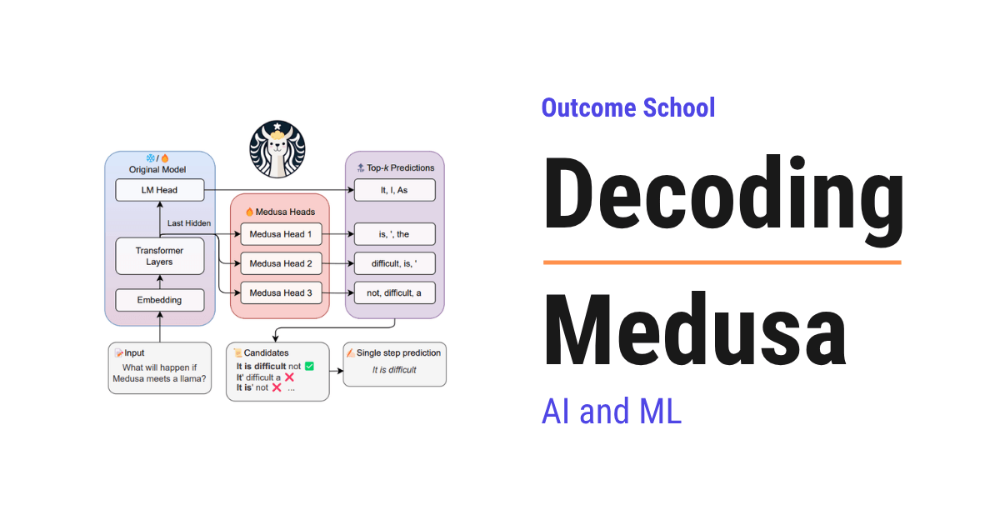
Medusa is a method that makes a language model generate text 2 to 3 times faster by adding a few extra heads to it. Each extra head guesses a token further ahead, so the model can produce several tokens in one step.
In this blog, we will learn about Medusa, a simple way to make a language model generate text 2 to 3 times faster by giving it several extra heads that guess multiple future tokens at once.
We will cover the following:
- What is Medusa?
- Why text generation is slow
- A quick recap of speculative decoding
- The problem with needing a draft model
- The big idea: many heads on one model
- How tree attention checks many guesses at once
- The math behind the speedup with small numbers
- The results
- How Medusa lives on today
- Quick Summary
Let's get started.
Medusa was introduced in 2024 in the famous research paper "Medusa: Simple LLM Inference Acceleration Framework with Multiple Decoding Heads" by Tianle Cai, Yuhong Li, Tri Dao, and their collaborators.
Medusa makes a model generate text much faster, without changing the model's answers, and without needing a second helper model. The name comes from the mythical Medusa with many heads, because this method adds several prediction heads to one model. So, let's decode it piece by piece.
What is Medusa?
Medusa is a method to speed up text generation by adding extra prediction heads to a language model.
A normal model has one head that predicts the next token. Medusa adds a few more heads, where each one tries to predict a token further ahead. So instead of guessing just the next token, the model guesses the next few tokens all at once, and then quickly checks them.
In simple words, Medusa lets the model say "here is the next word, and here is my guess for the few words after it too", and if those guesses are right, we get several words for the price of one.
Why text generation is slow
A language model generates text one token at a time. To produce a token, it runs a full forward pass through the whole network. Then it feeds that token back in and runs another full pass for the next token, and so on.
pass 1 -> token 1
pass 2 -> token 2
pass 3 -> token 3
...
So writing 100 tokens means 100 full passes, one after another. This is slow, and it is the main reason chatbots feel like they are typing.
The frustrating part is that a forward pass is not actually busy. Generating one token barely uses the GPU, because the GPU is built to do huge amounts of math in parallel, but we are asking it for just one token at a time. The hardware is mostly idle. We needed a way to make each pass produce more tokens. We needed a solution for that, and Medusa is one answer.
We have a detailed blog on Prefill vs Decode: LLM Inference Optimization that explains why this decode phase leaves the GPU waiting.
A quick recap of speculative decoding
One earlier answer was speculative decoding. The idea is to use a small, fast model to guess several tokens ahead, then let the big model check all those guesses in a single pass. If the guesses are right, the big model accepts them, and we get several tokens from one pass of the big model.
This works well, but it has a cost.
The problem with needing a draft model
Speculative decoding needs a second model, the small draft model, to make the guesses. That brings problems.
- We have to find or train a small model that matches the big one well.
- We have to load and run two models, using more memory and adding complexity.
It would be much simpler if the big model could make its own guesses, with no separate draft model at all. That is exactly what Medusa does.
The big idea: many heads on one model
Medusa adds a few small extra heads on top of the existing model. Each head is tiny, just a small layer. They all read the same internal state the model already computed.
- The original head predicts the next token, as usual. Call it the position 1 token.
- Medusa head 1 predicts the token at position 2.
- Medusa head 2 predicts the token at position 3.
- Medusa head 3 predicts the token at position 4.
model's internal state
/ | | \
v v v v
[orig] [head1][head2][head3]
| | | |
v v v v
token1 token2 token3 token4 <- all guessed in ONE pass
So in a single forward pass, the model produces not just the next token, but a guess for the next several tokens too. The base model is frozen, and only these small heads are trained, which is cheap and fast.
Think of how you sometimes finish a friend's sentence before they do. If your guess is right, the conversation moves faster. If it is wrong, no harm done, they just say the real word. Medusa's heads are like that: they guess the next few words, and we keep the guesses only when they turn out to be correct.
But guesses can be wrong. So we need a way to check them and only keep the correct ones.
How tree attention checks many guesses at once
Each head does not give just one guess. It gives its top few candidates. For example, head 1 might suggest two likely words, and head 2 might suggest two likely words. Combining them gives several possible continuations.
Medusa arranges all these candidate continuations into a tree, and then checks the entire tree in a single forward pass using a special attention mask called tree attention. This mask lets every candidate path be verified at the same time, without them interfering with each other.
After verification, Medusa keeps the longest path whose tokens the model agrees with, and throws away the rest. So we always end up with tokens the model itself would have produced. The output is the same as normal generation, just produced faster.
The math behind the speedup with small numbers
Let's see the speedup with simple numbers.
Normal generation. Each forward pass produces exactly 1 token.
to produce 1 token -> 1 pass
to produce 6 tokens -> 6 passes
Medusa. In one pass, the original head plus 3 Medusa heads guess 4 tokens. Then one verification pass checks them. Suppose, on average, 3 of those guessed tokens are accepted each round.
round 1: 1 pass guesses 4 tokens, 3 are accepted -> 3 tokens
round 2: 1 pass guesses 4 tokens, 3 are accepted -> 3 tokens
So 2 passes produced 6 tokens, while normal generation would need 6 passes for the same 6 tokens. That is a 3 times speedup.
The speedup is simply the average number of tokens accepted per pass:
speedup = average accepted tokens per pass
If Medusa accepts about 2.5 tokens per pass on average, that is roughly a 2.5 times speedup. And crucially, since we only keep tokens the model agrees with, the final text is exactly what the model would have written anyway.
Note: Three extra heads and accepting 3 tokens are just for the sake of understanding, so we can calculate by hand. Real setups tune the number of heads and the tree shape. The idea stays exactly the same: more tokens per pass means faster generation.
The results
Medusa sped up generation by about 2 to 3 times on popular models, with no change to the output quality, because every accepted token is verified against the model itself.
It is also simple to add. The base model is left frozen, and only the small heads are trained, which takes very little time and data. There is no separate draft model to manage. This simplicity is a big part of why Medusa became popular.
How Medusa lives on today
Medusa pushed forward a whole line of fast-generation methods that need no draft model.
- It directly inspired methods like EAGLE, which predict future tokens even more accurately by working at the level of the model's internal features, and now give some of the highest speedups available.
- The idea of extra heads that predict multiple future tokens also appears in training. Multi-Token Prediction, used in models like DeepSeek-V3, trains a model with extra heads from the start, which both improves the model and gives a built-in way to speed up generation.
- Tree-based verification, where many candidate paths are checked in one pass, is now a common trick in fast inference systems like TensorRT-LLM.
So Medusa took the powerful idea of speculative decoding and made it simpler, by letting the model grow its own heads instead of leaning on a separate draft model.
Medusa is one of many tricks that make generation fast. We have a detailed blog on LLM Inference Optimization that covers these techniques end to end.
Quick Summary
- Medusa speeds up text generation by adding several small extra heads to a model, each guessing a token further ahead.
- Normal generation is slow because it produces only one token per forward pass, leaving the GPU mostly idle.
- Speculative decoding sped things up but needed a separate draft model, which adds complexity.
- Medusa's big idea is to put many heads on one model, so a single pass guesses several future tokens, with the base model frozen and only the cheap heads trained.
- Tree attention checks many candidate continuations in one pass, and Medusa keeps the longest path the model agrees with, so the output is unchanged.
- The speedup equals the average number of tokens accepted per pass, often around 2 to 3 times.
- Medusa inspired later methods like EAGLE and the Multi-Token Prediction used in modern models.
Now, we have decoded Medusa piece by piece and understood how giving a model extra heads lets it generate several tokens at once.
Frequently Asked Questions
Does Medusa change the answers of the model?
No. Medusa does not change the model's answers. It keeps only the longest path of guessed tokens that the model agrees with and throws away the rest. So the final text is exactly what the model would have written with normal generation, just produced faster.
Do we need to retrain the whole model to use Medusa?
No. The base model is left frozen, and only the small extra heads are trained. This takes very little time and data. This simplicity is a big part of why Medusa became popular.
Is Medusa better than speculative decoding with a draft model?
Medusa is simpler than speculative decoding with a draft model. We do not need to find or train a small model that matches the big one, and we do not need to load and run two models. The big model makes its own guesses through its extra heads, which saves memory and complexity.
What is the difference between Medusa and EAGLE?
Medusa guesses future tokens directly with extra heads, while EAGLE predicts future tokens by working at the level of the model's internal features. Medusa directly inspired EAGLE. Because EAGLE's guesses are more accurate, it now gives some of the highest speedups available.
How much faster is Medusa than normal generation?
Medusa sped up generation by about 2 to 3 times on popular models. The speedup equals the average number of tokens accepted per pass. Since every accepted token is verified against the model itself, there is no change to the output quality.
Lesson 12.11
What is EAGLE? Feature-Level Speculative Decoding Explained
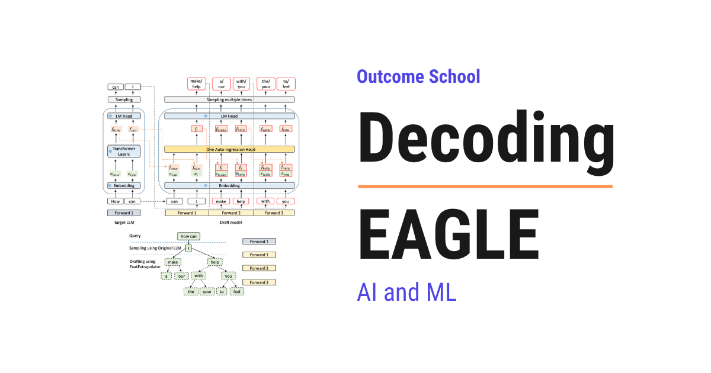
EAGLE is a speculative decoding method that makes a language model generate text faster without changing its output at all. It guesses the future tokens at the level of the model's internal features, not at the level of words.
In this blog, we will learn about EAGLE, a state-of-the-art way to speed up language model generation by drafting tokens at the feature level instead of the token level.
We will cover the following:
- What is EAGLE?
- A quick recap of speculative decoding
- The problem with token-level drafting
- The big idea: draft at the feature level
- Resolving the uncertainty by feeding back the token
- The math behind the speedup with small numbers
- EAGLE-2 and dynamic draft trees
- How EAGLE lives on today
- Quick Summary
Let's get started.
EAGLE was introduced in 2024 in the research papers "EAGLE: Speculative Sampling Requires Rethinking Feature Uncertainty" and its follow-up "EAGLE-2", by Yuhui Li and collaborators at Peking University, Microsoft Research, and the University of Waterloo.
EAGLE is among the fastest lossless ways to speed up text generation, and it is built into many serving systems. It improves on earlier methods with one key insight about where to do the drafting. So, let's decode it piece by piece.
What is EAGLE?
EAGLE is a speculative decoding method, a way to make a language model generate text faster without changing its output at all.
It works by having a small, cheap draft step guess several future tokens, which the big model then checks all at once. EAGLE's twist is that it does the guessing at the level of the model's internal features, not at the level of words. This makes the guesses much more accurate, which leads to a bigger speedup.
A quick recap of speculative decoding
We covered speculative decoding and Medusa before. The short version: generating text one token at a time is slow because each token needs a full pass through the big model. That slow, one-token-at-a-time stage is the decode phase of inference. We have a detailed blog on Prefill vs Decode that explains why it is the bottleneck.
Speculative decoding fixes this by cheaply guessing several tokens ahead, then letting the big model verify them all in a single pass. If the guesses are right, we get several tokens for the cost of one verification. The better the guesses, the more tokens are accepted, and the bigger the speedup.
So the whole game is making accurate guesses cheaply. EAGLE found a better place to make them.
The problem with token-level drafting
Earlier methods, like Medusa, guess the next tokens directly. But predicting the exact next token is hard and uncertain.
Why? Because of sampling. Even the big model does not output one token, it outputs a probability distribution, and the actual token is sampled from it with some randomness. Predicting which token will be sampled is inherently noisy. So token-level guesses are often wrong, and wrong guesses get rejected, which limits the speedup.
We wanted a more predictable thing to guess. EAGLE found one.
The big idea: draft at the feature level
EAGLE's insight is to guess the next feature instead of the next token.
A feature here means the model's internal hidden state, the rich vector it computes in its second-to-last layer, just before it turns that vector into a token. EAGLE observed that this feature sequence is much more regular and predictable than the token sequence. The randomness of sampling happens at the very last step, token selection, but the features flowing underneath are smooth.
So EAGLE trains a small, lightweight draft network that autoregresses at the feature level: it predicts the next feature from the previous features, and only at the end maps features to tokens. Because features are more predictable than tokens, these drafts are far more accurate, so more of them get accepted by the big model.
Medusa style: guess the next TOKEN directly (noisy, often rejected)
EAGLE style: guess the next FEATURE, then the token (smooth, often accepted)
Resolving the uncertainty by feeding back the token
There is a subtlety EAGLE had to fix, which gives the first paper its name: feature uncertainty.
The next feature actually depends on which token was sampled at the previous step. If we do not know the sampled token, the next feature is uncertain. EAGLE solves this by feeding the previously sampled token back into the draft network, along with the features.
So the draft network looks at both the smooth feature stream and the actual token that was just chosen, which removes the uncertainty and lets it predict the next feature accurately. This combination is what makes EAGLE's drafts so good.
The math behind the speedup with small numbers
The speedup of any speculative method is simply how many tokens get accepted per verification pass, on average. We saw this with Medusa.
Suppose token-level drafting gets, on average, 2.5 tokens accepted per pass:
token-level speedup = about 2.5 times
Because EAGLE's feature-level drafts are more accurate, more of them survive verification. Suppose it gets 3.5 tokens accepted per pass:
feature-level speedup = about 3.5 times
The whole gain comes from a higher acceptance rate: more guessed tokens are correct, so more are kept per pass. And because every kept token is still verified against the big model, the final output is exactly what the big model would have produced. The speedup is free in quality.
Note: Acceptance counts of 2.5 and 3.5 are just for the sake of understanding, so we can see the relationship. Real numbers depend on the model and task. The rule, more accurate drafts mean more accepted tokens mean more speedup, stays exactly the same.
EAGLE-2 and dynamic draft trees
EAGLE-2 added another improvement. Instead of a fixed shape of guesses, it builds a dynamic draft tree.
The draft network does not just guess one chain of tokens. It guesses a tree of likely continuations. EAGLE-2 makes this tree context-aware: it spends more guesses where the draft network is confident and fewer where it is unsure, and it shapes the tree on the fly for each input. This squeezes out even more accepted tokens per pass, pushing the speedup higher, while still being lossless.
How EAGLE lives on today
EAGLE is one of the leading speculative decoding methods in practice.
- It gives some of the highest lossless speedups available, often around
3to4times faster generation, and is widely adopted. - It is supported in major serving systems like vLLM, SGLang, and TensorRT-LLM, so many production deployments use it.
- Its core lesson, that drafting at the smoother feature level beats drafting at the noisy token level, influenced later fast-inference research, and it was extended further in EAGLE-3.
Speculative decoding is one piece of a much bigger toolkit for fast serving. We have a detailed blog on LLM Inference Optimization that covers these techniques end to end.
So EAGLE took the powerful idea of speculative decoding and made it sharper by guessing the model's smooth internal features instead of its noisy output tokens, getting more accepted tokens and a bigger speedup for free.
Quick Summary
- EAGLE is a state-of-the-art speculative decoding method that speeds up generation losslessly.
- Speculative decoding guesses several tokens cheaply and verifies them in one pass, so better guesses mean more speedup.
- Guessing the exact next token is noisy because of sampling randomness, which limits earlier methods like Medusa.
- EAGLE's big idea is to draft at the feature level, the smooth internal hidden state, which is far more predictable than tokens.
- It resolves feature uncertainty by feeding the previously sampled token back into the draft network.
- The speedup equals the average accepted tokens per pass, and more accurate feature-level drafts raise it, for example from
2.5to3.5times. - EAGLE-2 adds context-aware dynamic draft trees for even more speedup, and EAGLE is used in vLLM, SGLang, and TensorRT-LLM.
Now, we have decoded EAGLE piece by piece and understood how drafting smooth internal features instead of noisy tokens makes speculative decoding faster while keeping the output identical.
Frequently Asked Questions
Does EAGLE change the output of the language model?
No. EAGLE makes generation faster without changing the output at all. Every drafted token is still verified against the big model, so the final output is exactly what the big model would have produced. The speedup is free in quality.
Is EAGLE better than Medusa?
Yes. EAGLE usually gets a bigger speedup than Medusa. Medusa guesses the next tokens directly, and token-level guesses are noisy because of sampling randomness, so many get rejected. EAGLE guesses the next feature, which is smoother and more predictable, so more drafts are accepted per pass.
How much faster does EAGLE make text generation?
EAGLE often gives around 3 to 4 times faster generation. This is among the highest lossless speedups available. The exact number depends on the model and task, since the speedup equals the average number of tokens accepted per verification pass.
Is EAGLE used in production serving systems?
Yes. EAGLE is supported in major serving systems like vLLM, SGLang, and TensorRT-LLM, so many production deployments use it. It is one of the leading speculative decoding methods in practice, and it was extended further in EAGLE-3.
Lesson 12.12
How does Model Quantization work?
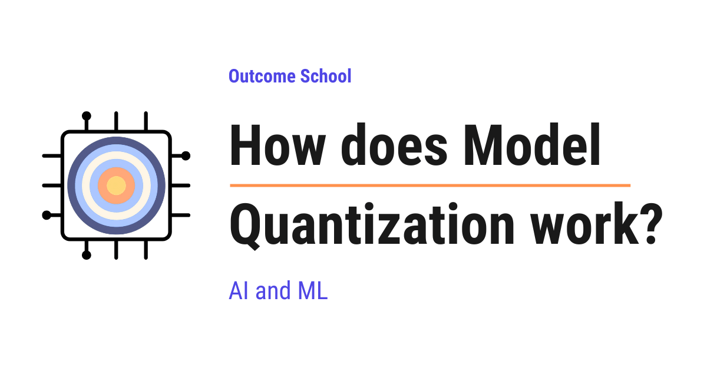
Model Quantization is the process of storing and computing a model's numbers at lower precision, so that the model takes less memory and runs faster. In simple words, we use smaller, simpler numbers in place of big, detailed numbers.
In this blog, we will learn about how Model Quantization works. We will also see why we need it, how it shrinks big AI models, and how it lets us run them on a laptop, a phone, or a single GPU.
We will cover the following:
- What is Model Quantization?
- How numbers use bits (FP32, INT8, INT4)
- Why fewer bits means less memory and faster speed
- The core mechanic: scale and zero-point
- Symmetric vs Asymmetric Quantization
- Per-tensor vs Per-channel Quantization
- Post-Training Quantization (PTQ) vs Quantization-Aware Training (QAT)
- Weight-only vs Weight-and-activation Quantization
- The outlier problem in LLMs
- Popular methods: GPTQ, AWQ, bitsandbytes, GGUF / llama.cpp
- The accuracy trade-off and running LLMs locally
- Wrapping up Model Quantization
Let's get started.
What is Model Quantization?
Model Quantization is the process of storing and computing a model's numbers at lower precision, so the model takes less memory and runs faster.
In simple words, quantization means we use smaller, simpler numbers in place of big, detailed numbers.
Before we go deeper, let's understand one basic thing. An AI model is, at its heart, just a huge collection of numbers. These numbers are called weights. A model learns by adjusting these weights during training. A large language model can have billions of such numbers.
Normally, each of these numbers is stored in a very detailed, high-precision form. Quantization takes these detailed numbers and rounds them into a much simpler form. For example, we go from a detailed decimal number like 0.7319284 to a plain whole number like 94. The whole number may look bigger, but it needs far fewer bits to store, and that is what makes the model smaller.
Let's say we have a high-resolution photo that takes a lot of space on our phone. We compress it into a smaller file. The photo still looks almost the same, but it now takes far less space. Quantization does the same thing to a model. We make it smaller while trying to keep it almost as good.
This is the basic idea. Now, to truly understand how it works, we must first understand how numbers are stored using bits.
How numbers use bits (FP32, INT8, INT4)
A computer stores everything using bits. A bit is the smallest piece of information. It can be only 0 or 1.
To store a number, the computer uses a group of bits. More bits means we can store a more detailed and more precise number. Fewer bits means a simpler number with less detail.
Let's see the common formats used in AI models.
FP32 means a floating-point number that uses 32 bits. "Floating-point" is just the computer's way of storing numbers with a decimal part, such as 0.7319284 or -12.55. FP32 is very precise. It can store very large, very small, and very detailed values. This is the format most models use during training.
FP16 and BF16 use 16 bits. These store decimal numbers too, but with less detail than FP32. They are half the size of FP32.
INT8 means an integer that uses 8 bits. "Integer" means a whole number with no decimal part, such as 94 or -12. With 8 bits, we can store only 256 different values, from -128 to 127.
INT4 means an integer that uses only 4 bits. With 4 bits, we can store just 16 different values.
Let's put the sizes side by side for our better understanding.
| Format | Bits | What it stores | Detail level |
|---|---|---|---|
| FP32 | 32 | decimals, very precise | very high |
| FP16 | 16 | decimals, less precise | high |
| BF16 | 16 | decimals, wide range | high |
| INT8 | 8 | whole numbers, 256 values | low |
| INT4 | 4 | whole numbers, 16 values | very low |
Here, we can see that as we go down the list, the number of bits drops. Fewer bits means each number is simpler and takes less space. This is the key idea behind why quantization saves so much.
Why fewer bits means less memory and faster speed
Now that we understand bits, let's see why fewer bits help us so much.
Less memory. Each weight in FP32 takes 32 bits, which is 4 bytes. The same weight in INT8 takes 8 bits, which is 1 byte. So INT8 is 4 times smaller. INT4 is 8 times smaller than FP32.
Let's say a model has 7 billion weights. In FP32, that needs about 28 GB of memory. The same model in INT8 needs about 7 GB. In INT4, it needs only about 3.5 GB. So, a model that did not fit on our machine now fits on a single GPU, or even runs on a good laptop.
We can picture the shrink for a 7-billion-weight model as below:
FP32 (4 bytes each) +--------------------------------+ about 28 GB
INT8 (1 byte each) +--------+ about 7 GB
INT4 (half byte each)+----+ about 3.5 GB
Here, we can see that the same model gets dramatically smaller as we use fewer bits per weight. The shape of the model does not change, only the size of each number does. This is what turns a model that needed a data-center into one that fits on our own machine.
Faster speed. Smaller numbers move faster. When a model runs, the computer constantly reads weights from memory and does math on them. Moving 1 byte is much faster than moving 4 bytes. On top of that, integer math is often faster than decimal math on many chips. So the model not only fits better, it also runs quicker and uses less power.
This is why quantization comes into the picture. We get a smaller model, faster answers, and lower cost. The price we pay is a small loss of accuracy, and we will discuss that trade-off later.
Now, the big question is: how do we actually turn a detailed FP32 number into a small INT8 number without losing everything? Let's understand the core mechanic.
The core mechanic: scale and zero-point
This is the heart of quantization, so let's go slowly.
Our weights are decimal numbers spread across some range, for example from -1.0 to 1.0. We want to map every number in that range onto a small set of integers, for example the 256 values that INT8 can hold.
To do this, we use two helper values. They are the scale and the zero-point.
The scale tells us how much real value each integer step represents. It is the size of one step.
The zero-point is the integer that represents the real value zero.
In simple words, the scale stretches or squeezes the integers to cover our range, and the zero-point shifts them so they line up correctly.
The formula to go from a real number to an integer is below:
quantized_int = round(real_value / scale) + zero_point
And to get back an approximate real number from the integer, we use the formula below:
real_value ≈ (quantized_int - zero_point) * scale
Here, we can see that quantizing and then de-quantizing does not give us the exact original number back. We get something close. That small difference is the rounding error, and it is the source of accuracy loss.
Let's take a concrete example to make this real.
Suppose our weights range from -1.0 to 1.0, and we want to map them into INT8 values from 0 to 255. Remember, INT8 gives us 256 slots, and here we are simply labelling them from 0 to 255.
Step 1: The full range is 1.0 - (-1.0) = 2.0. We have 255 steps available. So the scale is 2.0 / 255 ≈ 0.00784.
Step 2: The real value zero must map to the middle, so the zero-point is about 128.
Step 3: Now take a real weight 0.5. We compute round(0.5 / 0.00784) + 128 = round(63.7) + 128 = 64 + 128 = 192.
Step 4: To read it back, we compute (192 - 128) * 0.00784 ≈ 0.502.
We stored 0.5 and got back 0.502. Very close. The tiny gap is the rounding error we talked about.
We can visualize this mapping as a number line being squeezed onto integer slots, like below:
real (FP32): -1.0 ........... 0.0 ........ 0.5 ......... 1.0
| | | |
v v v v
int (INT8): 0 ............ 128 ......... 192 ........ 255
(min) (zero-point) (max)
<-- each step = scale (about 0.00784) -->
Here, we can see that the wide range of real decimal values is mapped onto the small set of integer slots. The zero-point 128 marks where the real value 0.0 lands, and the scale is the size of one step between slots. The real value 0.5 lands on the integer slot 192, exactly as we computed.
This is the engine that powers all quantization. Everything else is just smart choices about how we pick the range, the scale, and the zero-point.
Symmetric vs Asymmetric Quantization
Now that we know about scale and zero-point, let's look at two ways to set them up.
Symmetric Quantization uses a range that is centered around zero, like -1.0 to 1.0, mapped onto signed integers like -127 to 127. Because the range is balanced around zero, the zero-point becomes zero itself, and the real value zero maps cleanly. This keeps the math simple and fast.
Asymmetric Quantization uses a range that is not centered around zero, like 0.0 to 6.0. Here the zero-point is shifted to one side so the integers can fully cover this lopsided range.
Let's understand when each one fits.
Suppose our numbers are spread evenly on both the negative and positive side, such as model weights. Then symmetric quantization is a great fit. The range is naturally balanced, so we do not waste any integer values.
But suppose our numbers are always positive, such as the output of a function that can never be negative. If we used a symmetric range here, half of our integers would sit on the negative side doing nothing. That is wasted precision. So here comes asymmetric quantization to the rescue. It hugs the real range tightly and uses every integer value.
Advantage of symmetric: simpler and faster math.
Advantage of asymmetric: better fit for one-sided data, so less waste.
This is how we choose between symmetric and asymmetric based on the shape of our data.
Per-tensor vs Per-channel Quantization
Next, let's understand at what level we apply these scale and zero-point values.
A tensor is just a big grid of numbers. A layer of weights in a model is one tensor. Think of it as a table with many rows and columns of numbers.
Per-tensor Quantization uses one single scale and one zero-point for the entire tensor. Simple and fast, but it has a weakness.
Let's say one row of the tensor has tiny numbers like 0.001, and another row has large numbers like 0.9. If we force a single scale to cover both, the tiny numbers get crushed into almost the same integer. We lose their detail.
So here comes Per-channel Quantization into the picture. Instead of one scale for the whole tensor, we use a separate scale for each row, or each "channel". Now the tiny row gets its own fine scale, and the large row gets its own scale. Each part keeps its detail.
Per-tensor: Per-channel:
one scale for everything one scale per row
[ row A: small numbers ] [ row A -> scale A ]
[ row B: large numbers ] [ row B -> scale B ]
[ row C: mixed numbers ] [ row C -> scale C ]
one shared scale each row its own scale
Here, we can see that per-channel quantization protects rows with very different number sizes. It costs a little more memory to store many scales, but the accuracy is much better. For this reason, per-channel quantization is very common for model weights.
Post-Training Quantization (PTQ) vs Quantization-Aware Training (QAT)
Now, the next question is: when do we apply quantization? There are two main approaches.
Post-Training Quantization (PTQ) means we take a model that is already trained, and we quantize it afterward. We do not train it again. We just look at the weights, pick good scales and zero-points, and convert the numbers.
In simple words, PTQ is "train first, shrink later". It is fast, cheap, and needs no big training setup. Most of the time, we only need a small amount of sample data to measure the ranges. This is the most popular approach because it is so easy.
But, here is the catch. Because the model never knew it would be quantized, the rounding errors can sometimes hurt accuracy more than we like, especially at very low bits like INT4.
So here comes Quantization-Aware Training (QAT) to the rescue.
Quantization-Aware Training (QAT) means we teach the model about quantization while it is still training. During training, we simulate the rounding errors so the model learns to handle them. The model adjusts its weights to stay accurate even after quantization.
In simple words, QAT is "train the model so it is ready to be shrunk".
We can compare the two flows as below:
PTQ: [ Train model ] --> [ Trained model ] --> [ Quantize ] --> [ Small model ]
(shrink later)
QAT: [ Train model with rounding simulated ] --> [ Quantize ] --> [ Small model ]
(model learns to handle it) (already ready)
Here, we can see that PTQ shrinks the model only after training is fully done, while QAT bakes the rounding into the training itself so the model is already prepared. PTQ is one quick extra step at the end, whereas QAT changes how the whole training runs.
Let me tabulate the differences between PTQ and QAT for your better understanding.
| Point | PTQ | QAT |
|---|---|---|
| When applied | After training | During training |
| Cost | Low, fast | High, needs full training |
| Data needed | Small sample | Full training data |
| Accuracy at low bits | Good | Best |
| Ease of use | Very easy | Harder |
Here, we can see that PTQ is the easy, cheap, and popular choice. QAT gives the best accuracy but costs much more effort. We pick PTQ when we want speed and simplicity, and QAT when we need the highest accuracy at very low precision.
Frontier models use QAT in production, and DeepSeek-V4 trains with FP4 Quantization-Aware Training to make its inference faster and cheaper. We have a detailed blog on Decoding DeepSeek-V4 that covers this in depth.
Weight-only vs Weight-and-activation Quantization
Until now, we mostly talked about quantizing the weights. But a running model has another set of numbers we must understand.
When a model runs, each layer produces output numbers that flow into the next layer. These flowing numbers are called activations. So a model has two kinds of numbers: the fixed weights, and the activations that appear only while the model is running.
This gives us two choices.
Weight-only Quantization means we quantize only the weights and keep the activations in a higher precision like FP16. This is the most common choice for large language models. It already gives a huge memory saving, because the weights are the bulk of the model. And it is safer for accuracy.
Weight-and-activation Quantization means we quantize both the weights and the activations to low precision, such as INT8 for both. This gives even more speed, because the math itself runs in fast integer form. It is common for smaller models on phones and small devices that run AI on their own, without a big server.
One more thing to notice: an LLM has a third set of numbers too, the KV cache it builds up during a long conversation, and that can be quantized as well. This is one of the KV Cache Compression techniques.
Now, the next big question is: why not always quantize the activations too? The answer leads us to a famous problem in large language models. Let's understand it.
The outlier problem in LLMs
In large language models, the activations are not well-behaved. Most activation values are small, but a few of them are huge. These rare, extreme values are called outliers.
Let's say almost all our numbers sit between -1 and 1, but a few jump to 60. To fit that one value of 60 into our range, the scale must stretch a lot. Once the scale is stretched wide, all the small, normal numbers get crushed together into a few integers. We lose their detail. The outlier ruins the precision for everyone else.
Without outlier: With one outlier (60):
range -1 .. 1 range -1 .. 60
fine scale, good detail huge scale, tiny values crushed
[ -1 ........... 1 ] [ -1 ..... 60 ]
spread nicely all small values squished here
Here, we can see why quantizing activations in large models is hard. A single outlier forces a wide range that hurts everything else. This is exactly the problem that modern quantization methods are designed to solve. Let's see how the popular methods handle it.
Popular methods: GPTQ, AWQ, bitsandbytes, GGUF / llama.cpp
We do not have to invent quantization ourselves. There are well-tested methods and tools we can simply use. Let's go through the popular ones by name.
GPTQ stands for Generative Pre-trained Transformer Quantization. It is a post-training method that quantizes the weights of large language models down to 4 bits, very carefully and one layer at a time. After rounding each weight, it slightly adjusts the remaining weights to make up for the error it just introduced. Means, it does not just round blindly. It corrects as it goes. This keeps the accuracy high even at 4 bits.
AWQ stands for Activation-aware Weight Quantization. Its key idea is that not all weights matter equally. Some weights are more important because they connect to the large activation values we just learned about. AWQ finds these important weights and gives them special treatment, so they keep their detail instead of being crushed by rounding. It keeps the model accurate while still pushing weights down to 4 bits.
bitsandbytes is a popular and easy-to-use library that lets us load a model in 8-bit or 4-bit form directly. It is widely used with Hugging Face, so we can quantize and run a model with just a few lines of code. It is the easiest, most beginner-friendly choice for running big models on a single GPU. It also smartly keeps the outlier values in higher precision to protect accuracy.
GGUF and llama.cpp are made for running models on regular computers, including those with no GPU at all. llama.cpp is a fast engine that runs language models on the CPU, and GGUF is the file format it uses to store quantized models. People run models in many sizes, such as 4-bit, 5-bit, and so on, all packaged in a single GGUF file. This is how most people run large language models on their own laptops today. On the server side, TensorRT-LLM does the same job on NVIDIA GPUs, applying these smaller number formats while it serves the model to many users at once.
Let's see a tiny code example of loading a model in 4-bit using bitsandbytes, like below:
from transformers import AutoModelForCausalLM, BitsAndBytesConfig
config = BitsAndBytesConfig(load_in_4bit=True)
model = AutoModelForCausalLM.from_pretrained(
"some-large-model",
quantization_config=config,
)
Here, we can see that we set load_in_4bit=True in the BitsAndBytesConfig, and pass it as quantization_config while loading the model. The library handles all the scale and zero-point math for us. The model that needed many GB now loads in a fraction of the memory. It works perfectly.
This is how we can use quantization in practice without doing any of the low-level math by hand.
The accuracy trade-off and running LLMs locally
Now, let's be honest about the cost, because quantization is not free.
Every time we use fewer bits, we lose a little detail. This is the rounding error we saw earlier. At INT8, the loss is usually so small that we barely notice it. At INT4, the loss is larger, but smart methods like GPTQ and AWQ keep it surprisingly small. At very low bits like 2 bits, the model often starts to make clear mistakes.
So there is a trade-off we must always keep in mind:
Fewer bits means smaller and faster, but also less accurate.
The goal is to find the sweet spot where the model is much lighter and quicker, but still almost as accurate as the original. For most uses today, 4-bit quantization hits that sweet spot beautifully for large language models.
Let's see why this matters in the real world.
Suppose we want to run a powerful chatbot on our own laptop, with no cloud and no monthly cost. The full FP32 model is far too big to fit. But the same model quantized to 4-bit fits comfortably and runs at a good speed. This is exactly what tools like llama.cpp with GGUF files let us do every day. We get privacy, no cost, and full control, all because of quantization.
We have a detailed blog on Cloud vs On-device Model Deployment that covers when a model should run on a far-away server and when it should run right on the user's own device.
This is the real power of quantization. It takes models that once needed expensive data-center hardware and brings them to our laptop, our phone, and our single GPU. It makes powerful AI accessible to everyone.
Quantization is not the only way to shrink a model. Knowledge Distillation takes a different route, where a small student model is trained to copy a big teacher model instead of rounding its numbers. We have a detailed blog on how Knowledge Distillation works that explains this step by step.
Wrapping up Model Quantization
Let's quickly recap what we have learned, so the whole picture is clear.
A model is a huge pile of numbers. Quantization stores and computes these numbers at lower precision, such as going from FP32 to INT8 or INT4. Fewer bits means less memory, faster speed, and lower cost.
The core mechanic is mapping a range of decimal values onto a small set of integers using a scale and a zero-point. We can do this symmetrically or asymmetrically, and at the level of a whole tensor or per channel.
We can quantize after training with PTQ, or train the model to be ready for it with QAT. We can quantize weights only, or weights and activations together, while watching out for the outlier problem in large language models. And we can lean on ready-made methods like GPTQ, AWQ, bitsandbytes, and GGUF with llama.cpp to do all of this easily.
Through all of it, we balance one simple trade-off: fewer bits gives a smaller, faster model, at the cost of a little accuracy. When we pick the right level, we lose almost nothing and gain a lot.
This is how Model Quantization works.
Frequently Asked Questions
Can we get the exact original number back after quantization?
No. Quantizing and then de-quantizing gives us a number that is close, but not exact. For example, a weight of 0.5 can come back as 0.502. This small gap is the rounding error, and it is the source of the accuracy loss in quantization.
How many bits should we use to quantize an LLM?
For most uses today, 4-bit quantization hits the sweet spot for large language models. At INT8, the accuracy loss is usually so small that we barely notice it. At INT4, the loss is larger, but methods like GPTQ and AWQ keep it small. At very low bits like 2 bits, the model often starts to make clear mistakes.
What is the easiest way for a beginner to quantize a model?
bitsandbytes is the easiest, most beginner-friendly choice. It lets us load a model in 8-bit or 4-bit form directly with just a few lines of code, and it is widely used with Hugging Face. The library handles all the scale and zero-point math for us.
What is the difference between quantization and knowledge distillation?
Both make a model smaller, but in different ways. Quantization keeps the same model and stores its numbers at lower precision, like going from FP32 to INT4. Knowledge Distillation trains a small student model to copy a big teacher model instead of rounding its numbers.
Lesson 12.13
How does GGUF work?
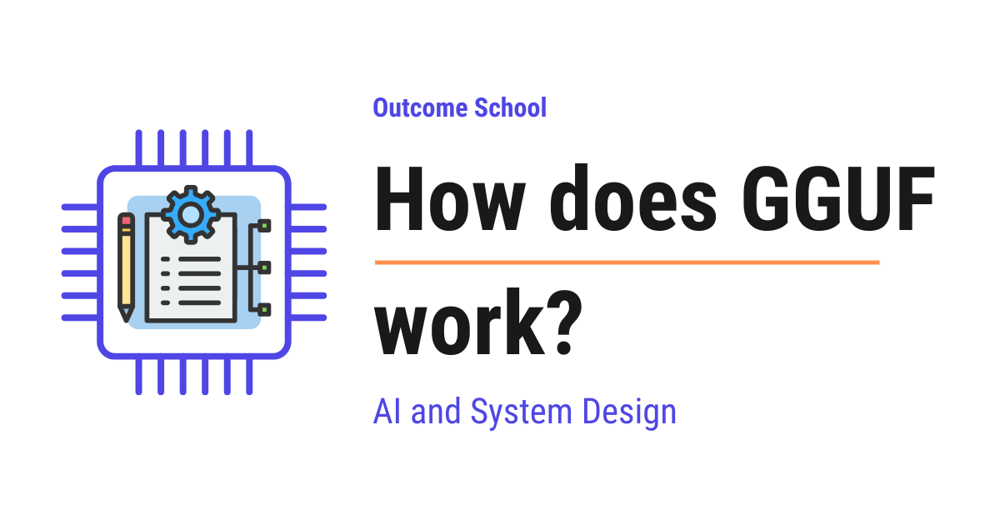
GGUF is a single file format that stores everything needed to run a large language model on our own computer, like the model's weights, the tokenizer, and all the settings, packed together in one file.
In this blog, we will learn about how GGUF works. We will also see what problem it solves, what is stored inside a GGUF file, how quantization makes big models fit on a normal laptop, and where it is used in real tools.
We will cover the following:
- What is a model and what are weights?
- What is local inference?
- The problem before GGUF
- What is GGUF?
- What is stored inside a GGUF file?
- What is quantization?
- Understanding quantization names like Q4_K_M
- How GGUF loads fast with memory mapping
- Why GGUF is cross-platform and extensible
- GGUF in the real world
Let's get started.
What is a model and what are weights?
Before we talk about GGUF, we must first understand a few simple things.
A large language model, or LLM, is the technology behind tools like ChatGPT and Claude. We give it some text, and it gives us back some text.
Now, the natural question is, what is this model actually made of?
A model is made of a huge collection of numbers called weights.
In simple words, the weights are the numbers the model learned during training. When the model was trained, it read a lot of text and slowly adjusted these numbers until it became good at predicting the next word. These learned numbers are the brain of the model.
Let's say a model has 7 billion weights. That means it is a list of 7 billion numbers. When we ask the model a question, it does a lot of math using these numbers to produce an answer.
These weights are usually stored as tensors. A tensor is just a fancy word for a grid of numbers. For the sake of understanding, we can simply think of tensors as big tables full of the model's learned numbers. Do not worry, we do not need any math here, we only need to remember that a tensor is a block of numbers.
So, a model is basically a giant pile of numbers, the weights, arranged as tensors.
This is the foundation we needed. Now let's understand where we want to run this model.
What is local inference?
When we use the model to get an answer, that act of running the model is called inference.
In simple words, training is when the model learns, and inference is when the model is used. Inference is the model doing its job, taking our text and producing a reply.
Now, there are two places we can run inference.
The first is on a big server in the cloud, far away, owned by a company. We send our text over the internet, the server runs the model, and it sends the answer back.
The second is local inference. Local means on our own machine. So, local inference is running the model directly on our own laptop or computer, without sending anything to a far-away server.
Let's picture both places as below:
CLOUD INFERENCE:
our laptop ---- our text over internet ----> cloud server (runs model)
our laptop <--- answer over internet -------- cloud server
LOCAL INFERENCE:
our laptop (runs model)
our text ---> model ---> answer
nothing leaves the machine
Here, we can see that with cloud inference our text travels over the internet to a far-away server and the answer travels back. With local inference, everything happens on our own laptop, and nothing leaves the machine.
People want local inference for good reasons. It keeps our data private, because nothing leaves our machine. It works without the internet. And it has no per-use cost from a cloud provider.
So, our goal is clear. We want to take this giant pile of weights and run it on a normal laptop. Now let's see why this was hard before GGUF.
The problem before GGUF
To run a model on our laptop, the program needs more than just the weights. It needs a few things together:
- The weights, which are the model's learned numbers, stored as tensors.
- The tokenizer, which is the tool that breaks our text into small pieces the model can read, and joins the pieces back into text. We will understand this better soon.
- The config and metadata, which is the information that describes the model, for example what kind of model it is, how it is built, and how much text it can handle at once.
In the early days, these pieces were often scattered across many separate files in different formats. One file for the weights, other files for the tokenizer, another file for the settings. To load the model, the program had to find all of them, read each one correctly, and stitch them together.
This caused real problems:
- It was fragile. If one file was missing or in a slightly different format, loading failed.
- It was not portable. Sharing a model meant sharing a folder of many files, and another person's tool may read them differently.
- It was slow to load. Reading and combining many files takes time before the model is even ready.
There was an earlier format called GGML that tried to pack things together for running models on normal computers. GGML was a good start and made local inference possible. But as models grew and changed, GGML had limits. It was not flexible enough, and adding new information to the file was painful. Every time the model design changed, the format struggled to keep up.
Let's picture the old scattered way against the single-file goal as below:
THE OLD WAY (scattered files):
+----------------+ +------------------+ +-----------------+
| weights file | | tokenizer file | | settings file |
+----------------+ +------------------+ +-----------------+
| | |
+--------------------+----------------------+
|
program must find,
read, and stitch all
of them together
fragile, not portable, slow to load
THE GOAL (one organized file):
+----------------------------------------+
| weights + tokenizer + settings |
| all packed together in one file |
+----------------------------------------+
open it and run, nothing to stitch
Here, we can see that the old way kept the weights, the tokenizer, and the settings in separate files, so the program had to find each one, read it correctly, and stitch them together. The goal is one organized file that holds everything, so the program can open it and run right away.
We needed a single, well-organized file that holds everything, loads fast, and is easy to extend.
So, here comes GGUF to the rescue.
What is GGUF?
GGUF is a single file format that stores everything needed to run a large language model for local inference, all in one self-contained file.
GGUF stands for GPT-Generated Unified Format. The key idea for us is in the words Unified Format, where "Unified" means everything the model needs is brought together into one single, organized file, instead of being scattered across many separate files.
In simple words, GGUF is one file that contains the model's weights, the tokenizer, and all the settings, packed neatly together so a program can open it and start running the model right away.
It is the successor to the older GGML format. GGUF was created to fix GGML's limits, and today it is the standard format for running models locally.
Let's use a simple analogy. Suppose we want to move into a new house and we need a bed, a table, and a chair. The old way was like getting these as loose parts in three different boxes, with instructions in three different languages, and we had to assemble everything ourselves. GGUF is like getting one neatly packed box that has everything inside, clearly labeled, ready to use the moment we open it.
So, GGUF is the one box that holds the whole model, ready for our laptop to run.
Now, let's open the box and see what is inside.
What is stored inside a GGUF file?
A GGUF file is built to hold three kinds of things together. Let's look at each one.
First, the tensors. These are the model's weights, the learned numbers we talked about earlier. This is the biggest part of the file, because a model can have billions of numbers.
Second, the key-value metadata. Metadata is data that describes other data. It is stored as simple pairs of a key and a value, like a label and its answer. For example, a key could be the architecture, which means the type of model and how it is built, and its value tells the program which kind of model this is. Another key could be the context length, which means how many tokens the model can read at once, and its value is a number like 4096. There are many such pairs that fully describe the model.
Third, the tokenizer. A model cannot read raw text. It first breaks the text into small pieces called tokens. A token is a small chunk of text, roughly a word or part of a word. The tokenizer is the tool that does this splitting and also joins tokens back into text. GGUF stores the tokenizer's vocabulary and rules right inside the file, so the program does not need any extra file to understand our text.
We have a detailed blog on Byte Pair Encoding in LLMs that explains how this tokenization step works.
Let's picture the layout of a GGUF file as below:
A SINGLE GGUF FILE
+--------------------------------------------------+
| HEADER |
| marker "GGUF" + version + counts |
+--------------------------------------------------+
| KEY-VALUE METADATA |
| architecture = "llama" |
| context length = 4096 |
| tokenizer vocab = [ ...tokens... ] |
| quantization info = ... |
+--------------------------------------------------+
| TENSOR INFO (a small table of contents) |
| names, shapes, and where each tensor sits |
+--------------------------------------------------+
| TENSOR DATA (the weights, the big part) |
| [ billions of numbers, the model's brain ] |
+--------------------------------------------------+
Here, we can see that the file starts with a small header. The header begins with the four letters GGUF, which is a marker that tells any program "this is a GGUF file". After that comes the key-value metadata, which describes the model in plain labeled pairs. Then comes a small tensor info table, which is like a table of contents that lists every tensor's name, its shape, and where it sits in the file. Finally comes the actual tensor data, the huge block of weights.
So, with one file, the program has the weights, the description, and the tokenizer, all in one place. The problem of scattered files is solved.
Now, there is still one big challenge. These models are huge. Let's see how GGUF helps them fit on a normal laptop.
What is quantization?
A model with billions of weights is very large. If each weight is stored as a very detailed, very exact number, the file becomes too big to fit in a laptop's memory.
Let's understand the size problem with a simple idea. Each number can be stored using a certain number of bits. A bit is the smallest unit of computer memory, a single 0 or 1. The more bits we use per number, the more precise the number is, but the more space it takes.
Suppose every weight is stored using 16 bits. A model with 7 billion weights would then need about 14 gigabytes just for the weights. That is too big for many laptops to handle comfortably.
So, here comes quantization to the rescue.
Quantization is the technique of storing each weight using fewer bits, so the model becomes much smaller.
In simple words, quantization means we round the model's numbers to a simpler, shorter form that takes less space.
Let's use a simple analogy. Suppose a price is 19.997 rupees. If we round it to 20 rupees, it is shorter and easier to store, and for most purposes it is close enough. We lost a tiny bit of exactness, but we saved space. Quantization does the same thing to the model's weights. It stores them with fewer bits, so each number is a little less exact but takes much less room.
Let's see the effect with numbers. If we drop from 16 bits per weight down to about 4 bits per weight, our 7 billion weight model shrinks from around 14 gigabytes to roughly 4 gigabytes. Now it fits on a normal laptop and can run on its CPU or GPU.
But, here is the catch. There is a trade-off.
- Fewer bits means smaller size and faster running, but slightly lower quality. The answers can become a little less accurate, because we made the numbers less exact.
- More bits means larger size and slower running, but higher quality. The answers stay closer to the original model.
So, we choose the level of quantization based on our use case. If we have a small laptop and want speed, we pick a smaller form. If we have more memory and want the best quality, we pick a larger form.
GGUF supports many quantization levels, and it stores the quantized weights directly inside the file. This is one of the biggest reasons GGUF is so useful for local inference.
Quantization is one way to make a model smaller. Another is knowledge distillation, where a small model learns to copy a larger one. We have a detailed blog on how Knowledge Distillation works that explains this in depth.
Now, these quantization levels have names that look strange at first, like Q4_K_M. Let's decode them.
Understanding quantization names like Q4_K_M
When we download a GGUF model, we will see names like Q4_K_M, Q5_K_M, and Q8_0. These look confusing, but they follow a simple pattern. Let's break one down.
Take Q4_K_M as below:
Q4_K_M
| | |
| | +--- M = the size variant (S = small, M = medium, L = large)
| +----- K = a smarter, modern quantization method
+------- 4 = about 4 bits used per weight
Here, we can see that the name has three parts. The Q simply means quantized. The number after it, the 4, tells us roughly how many bits are used per weight. So Q4 means about 4 bits per weight, and Q8 means about 8 bits per weight. The K means it uses a smarter, modern method that spends bits more wisely to keep quality high. The last letter, M, is a size variant, where S is small, M is medium, and L is large.
So, the simple rule to remember is this:
The number is the bits per weight. A bigger number means more bits, which means bigger file and better quality. A smaller number means fewer bits, which means smaller file and slightly lower quality.
Let me tabulate the common quantization levels for your better understanding so that you can decide which one to use based on your use case.
| Name | Bits per weight | File size | Quality | Good for |
|---|---|---|---|---|
Q4_K_M |
about 4 | smallest of these | good | laptops with limited memory, a great balance |
Q5_K_M |
about 5 | medium | better | a bit more memory, slightly better answers |
Q8_0 |
about 8 | largest of these | best | plenty of memory, quality matters most |
Here, we can notice that Q4_K_M gives the smallest size with good quality, which is why it is one of the most popular choices. As we move to Q5_K_M and then Q8_0, the file gets bigger and the quality improves, but we need more memory to run it.
Note: If we are not sure which one to pick, Q4_K_M is a safe starting point for most laptops, because it balances size and quality very well. If our answers feel a little off and we have spare memory, we can move up to Q5_K_M or Q8_0.
So, now we know how to read these names and pick the right one based on our use case.
How GGUF loads fast with memory mapping
We learned that a GGUF model can still be a few gigabytes. Now the question is, how does it start so fast without filling up our memory?
The answer is a technique called memory mapping, often written as mmap.
Let's first understand the slow way. The simple way to load a file is to read the whole thing from the disk into memory before we use it. For a 4 gigabyte model, that means waiting until all 4 gigabytes are copied into memory. That is slow, and it uses a lot of memory right away.
So, here comes memory mapping to the rescue.
Memory mapping lets the program treat the file on disk as if it were already in memory, without copying the whole thing first.
In simple words, instead of loading everything up front, the program only reads the parts of the file it actually needs, exactly when it needs them.
Let's use a simple analogy. Suppose we have a thick book. The slow way is to photocopy the entire book before reading a single page. Memory mapping is like keeping the book on the table and simply opening the exact page we need, only when we need it. We do not copy the whole book first. We just read pages on demand.
Let's see the difference as below:
WITHOUT memory mapping:
disk file (4 GB) ===> copy all 4 GB into memory ===> then start
slow start, uses a lot of memory immediately
WITH memory mapping (GGUF):
disk file (4 GB) --- start immediately --->
the program reads only the needed parts, when needed
fast start, memory used efficiently
Here, we can see that without memory mapping the program must copy all 4 gigabytes before it even starts, which is slow and heavy on memory. With memory mapping, the program starts right away and pulls in only the parts of the model it needs, when it needs them. This is why a GGUF model can start so quickly.
GGUF is designed to work perfectly with memory mapping. Because the tensors are laid out in a clean, ordered way inside the file, the program can jump straight to any tensor it needs and read it directly. The model starts fast and uses memory efficiently.
This is how GGUF gives us a fast startup on a normal machine.
Why GGUF is cross-platform and extensible
There are two more qualities of GGUF that make it so widely used. Let's understand both.
First, GGUF is cross-platform. Cross-platform means it works the same way across different operating systems and devices. The same GGUF file runs on Windows, macOS, and Linux, and on different kinds of processors. We do not need a different file for each system. We download one GGUF file and it just works wherever we run it.
Second, GGUF is extensible. Extensible means it is easy to add new information to the format without breaking older files. Remember, the metadata inside GGUF is stored as simple key-value pairs. So, when a new kind of model needs a new setting, the format simply adds a new key-value pair. Old programs can still read the file, and new programs can read the new key. This is exactly the weakness that the older GGML format had, and GGUF fixed it.
So, GGUF is portable across machines and flexible enough to grow with new models. This is why it became the standard.
Now, let's see where GGUF is actually used.
GGUF in the real world
GGUF is the format used by llama.cpp and the popular tools built on top of it.
Let's understand llama.cpp first. It is an open-source program written to run large language models efficiently on normal computers, including laptops, using the CPU or the GPU. It is fast, lightweight, and it reads models in the GGUF format. GGUF was created as part of this llama.cpp world to be the clean, single-file format these models use.
Many friendly tools are built on top of llama.cpp, and they all use GGUF:
- Ollama. This is a tool that lets us download and run models locally with a simple command. Under the hood, it uses GGUF files and
llama.cpp. - LM Studio. This is a desktop app with a nice screen where we can search for models, download GGUF files, and chat with them, all on our own machine.
Let's picture how these pieces stack together as below:
+-----------------+ +-----------------+
| Ollama | | LM Studio | the friendly tools we use
+-----------------+ +-----------------+
| |
+------------+------------+
|
+------------------+
| llama.cpp | runs the model efficiently
+------------------+
|
+------------------+
| .gguf file | weights + tokenizer + metadata
+------------------+
Here, we can see that the GGUF file sits at the bottom holding everything the model needs. The llama.cpp program reads that file and runs the model. The friendly tools like Ollama and LM Studio sit on top of llama.cpp, giving us a simple way to use it. So they all rely on the same single GGUF file underneath.
In all of these, the flow is the same. We download a single file that ends with .gguf for the model and the quantization level we want, the tool opens it using memory mapping, reads the weights, the tokenizer, and the metadata from that one file, and we start chatting. There is nothing to assemble and no scattered files to manage.
So, anywhere we want to run a large language model on our own machine, GGUF is very likely the format we will use.
The models we run locally like this are often Small Language Models, compact enough to fit on a laptop or phone. We have a detailed blog on Small Language Models (SLMs) that explains why smaller models matter.
This is how GGUF works. It packs the model's weights, its tokenizer, and its metadata into one self-contained file, it uses quantization to shrink the weights so big models fit on a normal laptop, and it loads quickly with memory mapping, which is why it became the standard format for running large language models locally.
Frequently Asked Questions
What is the difference between GGUF and GGML?
GGUF is the successor to the older GGML format. GGML made local inference possible, but it was not flexible enough, and adding new information to the file was painful. GGUF fixed this by storing metadata as simple key-value pairs, so new settings can be added without breaking older files.
Which GGUF quantization level should we pick?
Q4_K_M is a safe starting point for most laptops, because it balances size and quality very well. If the answers feel a little off and we have spare memory, we can move up to Q5_K_M or Q8_0. A bigger number means a bigger file and better quality.
Does a quantized GGUF model give worse answers?
Slightly. Fewer bits per weight make the numbers a little less exact, so the answers can become a little less accurate. In return, the model becomes much smaller and faster. With more bits, the file is larger but the answers stay closer to the original model.
Do we need separate tokenizer files to run a GGUF model?
No. GGUF stores the tokenizer's vocabulary and rules right inside the file, along with the weights and the metadata. So the program does not need any extra file to understand our text. We download a single .gguf file and start running the model.
Do Ollama and LM Studio use GGUF?
Yes. Both Ollama and LM Studio are built on top of llama.cpp, and they use GGUF files. The GGUF file holds everything the model needs, llama.cpp reads it and runs the model, and these tools give us a simple way to use it.
Lesson 12.14
How does llama.cpp run LLMs on everyday hardware?
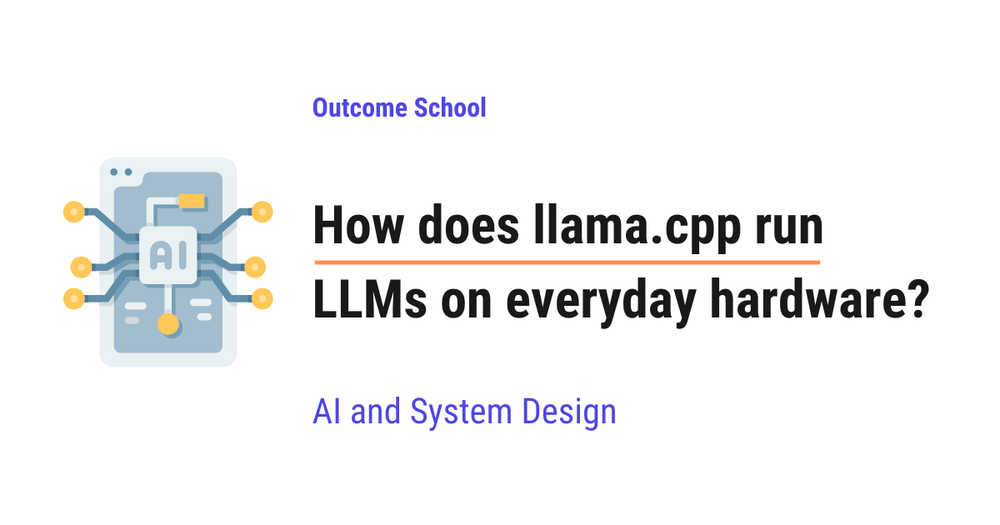
llama.cpp is a program written in C++ that runs large language models on everyday hardware, like a normal laptop. It shrinks the model with quantization, loads it quickly, and shares the work between the CPU and the GPU.
In this blog, we will learn about how llama.cpp runs large language models on everyday hardware. We will also see what llama.cpp is, why it was created, how it shrinks huge models with quantization, how it loads them quickly, and how it shares work between the CPU and the GPU.
We will cover the following:
- What is llama.cpp?
- Why we needed llama.cpp
- A quick refresher on what an LLM is
- The real problem: models are too big to fit
- The first big idea: quantization
- Understanding names like Q4_K_M
- The GGUF file: everything packed in one box
- Memory mapping: loading the model the smart way
- Squeezing speed out of the CPU
- Sharing the work with the GPU
- The full journey of running a prompt
- Where llama.cpp is used
Let's get started.
What is llama.cpp?
Let's start with the name itself.
llama.cpp = llama + .cpp.
The word llama comes from LLaMA, which is the family of large language models first released by Meta. The part .cpp is the file ending used for programs written in the C++ programming language.
So, llama.cpp is a program, written mainly in C and C++, that runs large language models on our own computer.
In simple words, llama.cpp is a small, fast engine that lets us run a large language model on a normal laptop, without needing a giant server in a data center.
It was created by Georgi Gerganov in March 2023. His first goal was simple. He wanted to run Meta's LLaMA model on an Apple Mac using only the regular processor, with no special hardware.
Today, llama.cpp is one of the most popular open-source projects in the world, with more than 120,000 stars on GitHub. It quietly powers many well-known local AI tools, such as Ollama and LM Studio.
Why we needed llama.cpp
Let's understand the problem first. Then the solution will make sense.
When large language models became popular, there was a catch. Running them needed very expensive computers with powerful graphics cards and a huge amount of memory.
So, most people could only use these models through the internet, by sending their words to a company's server far away.
This created three problems.
- Cost. Renting powerful servers is expensive.
- Privacy. Our private words had to leave our own device.
- Dependence. Without internet, nothing worked.
So, here comes llama.cpp to the rescue.
The idea was bold. What if we could run these models right on our own laptop, our own phone, or a cheap mini computer, using the hardware we already own?
That hardware is what we call everyday hardware, which means normal devices like laptops, desktops, and phones, not special data-center machines.
We have a detailed blog on Cloud vs On-device Model Deployment that explains this choice between a far-away server and our own device step by step.
A quick refresher on what an LLM is
Before we go deeper, we must understand what a large language model actually is. Do not worry, we will keep this simple.
An LLM, which is short for Large Language Model, is a model that has read an enormous amount of text and learned the patterns in language.
Its one main job is to guess the next word. We give it some words, and it predicts what word should come next. Then it adds that word and predicts the next one, again and again.
Inside the model are billions of numbers called weights. A weight is just a number the model learned during training. These weights are the model's entire knowledge.
To produce each new word, the model does a huge amount of multiplication and addition using these weights. That is the heavy work llama.cpp has to handle.
The real problem: models are too big to fit
Now we reach the heart of the difficulty.
A model's size is measured in parameters, which is just another word for those learned weights. For example, a model with 7 billion parameters is often written as 7B.
Here is the problem. Each weight is normally stored as a number that takes up 2 or 4 bytes of memory.
Let's do the simple math. A 7-billion-parameter model, with each weight taking 2 bytes, needs about 14 gigabytes of memory just to hold the weights. Many normal laptops have only 8 GB or 16 GB of total memory.
So, the model alone does not fit comfortably, and we still need room for everything else. This is the wall that stopped normal people from running these models.
We needed a way to make the model much smaller without making it much worse. So, here comes the first big idea.
The first big idea: quantization
The most important trick in llama.cpp is called quantization.
Quantization means storing each weight using fewer bits, so the whole model takes much less memory.
A bit is the smallest piece of computer information. It is a single 0 or 1. The more bits we use for a number, the more precise but also the heavier it is.
Let's say a weight is normally stored using 16 bits. Quantization can store it using only 4 bits. That is four times smaller.
Here is the clever part. We do not just chop off the number carelessly. llama.cpp works on the weights in small blocks, where each block holds a group of weights together.
For each block, it finds the largest weight, and uses it to create a shared scale factor. A scale factor is a single number that records how big the values in that block are. Then every weight in the block is squeezed down to a small 4-bit value, and the scale factor lets us bring it back close to its original size when needed.
Let's see the idea as below:
Original block (each weight stored big, 16 bits):
[ 0.92, -0.31, 0.78, -0.55, 0.12, ... 32 values ... ]
|
| find the largest (0.92), make one shared scale factor
| scale = 0.92 / 7 = 0.13
v
Quantized block (each weight now tiny, 4 bits, -8 to 7):
scale = 0.13
[ 7 , -2 , 6 , -4 , 1 , ... 32 values ... ]
|
| to use a weight: small value x scale
| 7 x 0.13 = 0.91, 6 x 0.13 = 0.78, -4 x 0.13 = -0.52
v
Restored value (close to the original, good enough)
Here, we can see that a block of weights is squeezed into tiny 4-bit values plus one shared scale factor. With 4 bits, we only get 16 different values to work with, so we use the range -8 to 7. To use a weight, we multiply its tiny value by the scale to get back close to the original.
Here, we can also notice that we do not get back the exact number. The weight 0.92 comes back as 0.91, and -0.55 comes back as -0.52. This tiny difference is the precision we give up, and this is exactly what quantization costs us. The model becomes much smaller, and the answers stay almost as good.
A 7B model that needed about 14 GB can now fit in roughly 4 GB after 4-bit quantization. That is about 70 percent smaller. Now it fits on a normal laptop.
Understanding names like Q4_K_M
When we download a model for llama.cpp, we often see names like Q4_K_M. This looks confusing, but it is simple once we break it down.
Q4_K_M = Q4 + K + M.
- Q4 means each weight is stored using about 4 bits. A smaller number here means a smaller file. We could also see Q8, which uses about 8 bits and is more precise but larger.
- K means it uses the K-quant method that came with llama.cpp. We just saw that every small block keeps its own scale factor. But the scale factor is also a number, so it takes space too. So, K-quant groups many small blocks into a bigger super-block of 256 weights. The super-block keeps one main scale factor for the whole group, and each small block inside keeps only a tiny adjustment to it. It is like a company setting one base salary, where each person only needs a small plus or minus from that base. This way, the helper numbers cost very little space, and the accuracy still stays good.
- M means medium. This letter does not change the 4 in Q4. It only tells us how much of the model gets extra bits on top of that 4-bit base. Inside the model, the weights sit in big tables of numbers called tensors. Some tensors are more sensitive to quantization, which means squeezing them down hurts the quality more than it hurts the others. So, in Q4_K_M, these sensitive tensors are stored at 6 bits, while the rest of the model stays at 4 bits. This gives us better quality for only a small increase in file size. The other choice here is S for small, which keeps everything at 4 bits, so the file is a little smaller but usually a little less accurate.
So, Q4_K_M means a 4-bit, super-block model with a medium mix. It is the most popular choice because it stays small while keeping quality very close to the original.
For most everyday tasks, the quality drop is so small that we barely notice it.
The GGUF file: everything packed in one box
Now we need a way to store this quantized model in one neat package. That package is the GGUF file.
GGUF is the file format used to store models that run on GGML. The name GGML comes from the small math library, written by the same author, that llama.cpp uses to do its number crunching. It replaced a few older formats that were harder to extend.
A GGUF file is a single file that holds everything needed to run the model. We do not need extra files scattered around.
A GGUF file packs in the following:
- The quantized weights, which are the model's knowledge in small form.
- The architecture details, which describe how the model is built.
- The tokenizer, which is the part that breaks text into small pieces the model understands.
- The quantization settings, so the program knows how to read the small weights.
Let's see the box as below:
+=================================================+
| GGUF file |
| (one single file) |
| |
| +-----------------------------------------+ |
| | Quantized weights (the knowledge) | |
| +-----------------------------------------+ |
| | Architecture (how it is built) | |
| +-----------------------------------------+ |
| | Tokenizer (text -> tokens) | |
| +-----------------------------------------+ |
| | Quantization settings (how to read it) | |
| +-----------------------------------------+ |
| |
+=================================================+
Here, we can see that one GGUF file holds everything in a single box. The quantized weights, the architecture details, the tokenizer, and the quantization settings all live together, so llama.cpp does not have to hunt for scattered files.
Because everything sits in one well-organized file, llama.cpp can open it and start working almost instantly. This neat packaging is one reason GGUF became the standard format for running models locally.
Memory mapping: loading the model the smart way
Even with a smaller file, loading a few gigabytes from the disk into memory could be slow. So, llama.cpp uses a clever trick called memory mapping, often written as mmap.
Normally, to use a file, a program copies the whole file from the slow disk into the fast memory first. For a large model, that copy takes time and uses a lot of memory.
Memory mapping is different. Instead of copying everything up front, the program tells the operating system to treat this file on disk as if it were already in memory. The system then loads only the parts that are actually needed, only when they are needed.
Let's see the difference as below:
Normal loading (slow start):
Disk [ whole model ] ===> copy everything ===> Memory [ whole model ]
(wait for the full copy before starting)
Memory mapping (instant start):
Disk [ whole model ] ---- mapped ----> looks like it is in Memory
|
v
Only the needed pieces are pulled in, exactly when they are needed
(start working right away)
Here, we can see that normal loading copies the entire model from disk to memory before anything can begin, while memory mapping lets llama.cpp start at once and fetch only the pieces it actually needs, when it needs them.
Let's say we start using the model. llama.cpp does not wait for the full file to load. It begins working right away, and the needed pieces are pulled in on demand.
This gives us two big wins. The model becomes ready to use almost immediately. And if the same model is opened by more than one program, they can share the same data in memory instead of each keeping its own copy.
Squeezing speed out of the CPU
Now the model fits and loads fast. But it still has to do billions of multiplications for every word. We must make that fast on a normal processor.
To get the most out of the CPU, llama.cpp uses a feature called SIMD.
SIMD stands for Single Instruction, Multiple Data. In simple words, it means doing the same operation on many numbers at the same time, instead of one by one.
Let's say we need to multiply eight pairs of numbers. A simple program would do them one after another, eight steps. With SIMD, the CPU does all eight in a single step.
Modern CPUs offer SIMD through instruction sets with names like AVX, AVX2, AVX512 on Intel and AMD chips, and NEON on Apple and ARM chips. llama.cpp is written in fast C and C++ and is carefully tuned to use whichever of these our CPU supports.
This careful tuning is a big reason llama.cpp can run models on plain CPUs at a usable speed, even without any graphics card.
At the other end of the spectrum, some chips are designed around this one job from the ground up, and we have a detailed blog on how an LPU works that covers that approach end to end.
Sharing the work with the GPU
Many everyday computers also have a GPU, which stands for Graphics Processing Unit. A GPU is like a large team of small workers that do many calculations at the same time, which is perfect for the math an LLM needs.
The challenge is that a small GPU may not have enough memory to hold the whole model. So, llama.cpp does something flexible. It splits the model into layers and lets us choose how many layers to place on the GPU.
A layer is one stage of the model's processing. A model is a stack of many layers, one after another.
We control this with a setting called gpu-layers. The more layers we move onto the GPU, the faster it runs, as long as the GPU has room. Whatever does not fit stays on the CPU.
Let's see the split as below:
One large language model
split into many layers
+---------------------------------------------------+
| Layer 1 Layer 2 Layer 3 ... Layer N |
+---------------------------------------------------+
| (these fit in GPU memory) | (the rest)
v v
+----------------+ +----------------+
| GPU | | CPU |
| fast, many | | flexible, |
| workers | | always there |
+----------------+ +----------------+
\ /
\ /
v v
Layers work together, in order,
to produce the next word
Here, we can see that the model is cut into layers, and we choose how many go to the GPU and how many stay on the CPU. The GPU handles its share quickly, the CPU handles the rest, and together they produce each word. This is why llama.cpp runs on so many kinds of machines. It works with Apple's Metal, NVIDIA's CUDA, the cross-platform Vulkan, AMD's ROCm, and more, and it falls back to the CPU when there is no GPU at all.
The full journey of running a prompt
Let's now follow the complete journey from our question to the model's answer, step by step.
Step 1: We start llama.cpp and point it at a GGUF file. The program reads the file using memory mapping, so it is ready almost instantly.
Step 2: We type a prompt, which is our question or instruction in plain text.
Step 3: The tokenizer breaks our text into small pieces called tokens. A token is a chunk of text, often a word or part of a word, turned into a number the model can work with.
Step 4: These tokens flow through the model's layers. Each layer does its multiply-and-add math using the quantized weights, split across the CPU and GPU as we chose.
Step 5: The model produces a score for every possible next token. A step called sampling then picks one token from these scores, based on settings we control, like Top-k and Top-p.
Step 6: The chosen token is turned back into text and shown to us right away. This instant showing is called streaming, which is why we see the answer appear word by word.
Step 7: To keep things fast, llama.cpp saves its progress in a KV cache. The KV cache is a memory of the work already done for earlier tokens, so the model does not redo it for every new word.
Step 8: The new token is fed back in, and the cycle repeats, producing one token at a time, until the answer is complete.
Here is the full flow:
GGUF file on disk
| memory mapping (loads instantly)
v
Our prompt (plain text)
| tokenizer breaks it into tokens
v
Tokens flow through the layers
(math split across CPU + GPU, using quantized weights)
|
v
Scores for every possible next token
| sampling picks one
v
Token turned back into text ---> streamed to us
|
| saved in the KV cache, fed back in
+------------- repeats, one token at a time ----+
|
v
Complete answer
Here, we can see the data travels in a steady loop. Our text becomes tokens, the tokens pass through the layers, one new token comes out, it is shown to us, and the loop repeats until the full answer is ready. This is how a single question travels through llama.cpp on our own machine.
Where llama.cpp is used
So, now we know how llama.cpp works. Let's see where it is actually used.
llama.cpp has become the quiet engine inside many popular local AI tools. Tools like Ollama and LM Studio, which let people run chatbots on their own computers, are built on top of it.
It supports a wide range of modern models, such as Llama, Mistral, Qwen, and Gemma. It runs on Windows, Mac, and Linux computers, and even on phones and small single-board computers.
There is also a clear trade-off we must understand. A heavily quantized model is smaller and faster, but its answers can be slightly less accurate than the full model. We pick a balance, like Q4_K_M, based on our use case.
So, this is how llama.cpp runs large language models on everyday hardware. It shrinks a giant model with quantization, packs it into a single GGUF file, loads it instantly with memory mapping, runs the math quickly using the CPU's SIMD power, shares the work with the GPU layer by layer, and produces the answer one token at a time, all on the device we already own.
Frequently Asked Questions
Do we need a GPU to run llama.cpp?
No. llama.cpp can run models on plain CPUs at a usable speed, even without any graphics card. It uses SIMD instructions like AVX and NEON to do many calculations at once. If a GPU is available, we can move some layers onto it for extra speed, and it falls back to the CPU when there is no GPU.
What is the relation between llama.cpp and Ollama?
Ollama is built on top of llama.cpp. llama.cpp is the quiet engine inside many popular local AI tools, including Ollama and LM Studio. These tools let people run chatbots on their own computers, while llama.cpp does the actual work of running the model.
Does quantization make llama.cpp models less accurate?
Slightly. A heavily quantized model is smaller and faster, but its answers can be slightly less accurate than the full model, because the restored weights are close to the original but not exact. For most everyday tasks, the quality drop with a choice like Q4_K_M is so small that we barely notice it.
How many layers should we put on the GPU?
We should move as many layers onto the GPU as its memory can hold. The more layers we place on the GPU with the gpu-layers setting, the faster the model runs. Whatever does not fit stays on the CPU, and the two work together to produce each word.
Does llama.cpp only run Meta's LLaMA models?
No. llama.cpp started with the goal of running Meta's LLaMA model on a Mac, but today it supports a wide range of modern models, such as Llama, Mistral, Qwen, and Gemma. It runs on Windows, Mac, and Linux, and even on phones and small single-board computers.
Lesson 12.15
How does Ollama work?
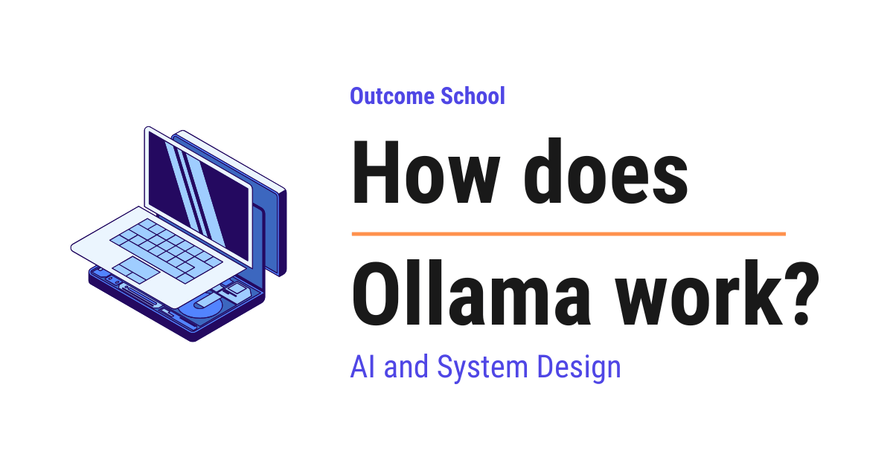
Ollama is a free tool that lets us download and run LLMs on our own computer with one simple command. It works by running a small server in the background that downloads compressed model files, loads them into memory, and uses a fast engine to generate text when we send it a prompt.
In this blog, we will learn about how Ollama works. We will also see why model files must be shrunk before they fit on a laptop, how Ollama's client and server talk to each other, what happens step by step when we type a command, how models are downloaded, stored, and loaded onto the CPU and GPU, what a Modelfile is and how other apps use Ollama through its API, and where it works well and where it fails.
We will cover the following:
- What does running an LLM locally mean?
- What is Ollama?
- The big problem: models are huge
- Quantization and the GGUF file format
- The architecture: client and server
- What happens when we run a model?
- How models are downloaded and stored
- How the model runs on CPU and GPU
- What is a Modelfile?
- Using Ollama from code through its API
- Where it works well and where it fails
Let's get started.
What does running an LLM locally mean?
Before jumping into Ollama, we must know what running an LLM locally means.
An LLM (Large Language Model) reads a prompt and writes a reply, one small piece of text at a time. These small pieces of text are called tokens. A token is usually a word or a part of a word.
When we use an LLM on a website, the LLM is not running on our computer. Our message travels over the internet to a big computer owned by a company, the model runs there, and the reply travels back to us.
Running an LLM locally means the model runs on our own computer, and our messages never leave our machine.
Let's say we compare this with food. Using an online LLM is like ordering food from a restaurant. Running locally is like cooking at home. Cooking at home needs our own kitchen and ingredients, but we control everything, nobody else sees what we eat, and it works even when the restaurants are closed.
So, running locally gives us:
- Privacy: Our data stays on our machine.
- Works offline: No internet is needed once the model is downloaded.
- No per-message cost: We do not pay for each request.
- Full control: We choose which model to run and how.
We have a detailed blog on Cloud vs On-device Model Deployment that explains when a model should run on a far-away server and when it should run on our own device.
But, running an LLM locally used to be hard. We had to find the right model file, install many libraries, set up the GPU, and write code. Here comes Ollama into the picture.
What is Ollama?
Ollama is an open-source tool that makes it easy to download, run, and manage LLMs on our own computer.
In simple words, Ollama does for LLMs what an app store does for apps. We just say which model we want, and Ollama takes care of downloading it, setting it up, and running it.
After installing Ollama, we can start chatting with a model using just one command:
ollama run llama3.2
Here, ollama run tells Ollama to run a model, and llama3.2 is the name of the model. If the model is not on our computer yet, Ollama downloads it first. Then, it opens a chat right in the terminal.
It works on macOS, Windows, and Linux. Now, let's understand what happens behind this simple command.
The big problem: models are huge
An LLM is made of billions of numbers called weights. These weights are what the model learned during training.
Normally, each weight is stored using 16 bits, which is 2 bytes.
Let's calculate the size of a model with 8 billion weights:
8 billion weights x 2 bytes = 16 GB
Here, we can see that even a medium-sized model needs 16 GB just to hold its weights. Many laptops have only 8 GB or 16 GB of memory in total, and that memory is also needed by the operating system and other apps.
Also, to generate every single token, the computer must read through all of these weights. So, a bigger file means slower replies.
The question is: how do we fit this on a normal laptop? The answer is: we shrink the numbers.
Quantization and the GGUF file format
Quantization means storing each weight with fewer bits, for example 4 bits instead of 16 bits.
In simple words, it is like rounding prices. Instead of writing 49.97, we write 50. We lose a tiny bit of detail, but the number becomes shorter.
Let's do the math again for the same 8 billion weight model:
16-bit: 8 billion x 2 bytes = 16 GB
4-bit: 8 billion x 0.5 bytes = 4 GB (a little more in practice)
Here, we can see that the 4-bit version is about four times smaller. It now fits easily on a laptop, and it runs faster too, because there is less data to read for every token. The answer quality drops only a little.
Most models that Ollama downloads by default are already quantized to around 4 bits.
Now, these shrunk models are saved in a file format called GGUF. GGUF is the file format used to store models that run on GGML, a library for running LLMs efficiently. A GGUF file packs everything a model needs into one single file:
- The quantized weights.
- The details of the model's architecture, like how many layers it has.
- The tokenizer, which is the part that splits text into tokens and turns tokens back into text.
GGUF comes from the llama.cpp project. llama.cpp is a popular open-source program, written in C and C++, that runs LLMs very efficiently on normal computers, including computers without a powerful GPU. Ollama has been built on top of llama.cpp and its underlying library GGML. Newer versions of Ollama also have their own engine for some models, built on the same GGML library.
So, the actual heavy math of running the model is done by this engine. A program that runs a trained model to produce answers is called an inference engine. Ollama is the layer on top that handles everything else.
The architecture: client and server
Now, let's understand how Ollama is organized.
Ollama has two parts:
- The server: A program that runs in the background. It manages the models, loads them into memory, and runs them. It is started with
ollama serve, and the desktop app starts it for us automatically. - The client: The thing that sends requests to the server. The
ollamacommand we type in the terminal is a client. But, any other app can also be a client.
They talk to each other using HTTP. The server listens at the address http://localhost:11434. Here, localhost means "this same computer", and 11434 is the port, which is like a door number where the server waits for requests.
+-------------+ +-------------+ +-------------+
| ollama CLI | | Python app | | A chat app |
| (client) | | (client) | | (client) |
+-------------+ +-------------+ +-------------+
↓ ↓ ↓
+-----------------+-----------------+
↓
HTTP requests
↓
+-------------------------------+
| Ollama server (port 11434) |
| - manages models |
| - loads them into memory |
| - runs the inference engine |
+-------------------------------+
↓
+---------------+
| CPU / GPU |
+---------------+
Here, we can see that many different clients can use the same Ollama server. There is one server and one place where the models live, and every app on our computer can use it.
What happens when we run a model?
Now, let's follow what happens when we type ollama run llama3.2 and ask a question.
Step 1: The client contacts the server. The ollama command sends a request to the server at localhost:11434.
Step 2: The server checks if the model is on disk. If it is not, the server downloads it from the Ollama model library on the internet. We will see how this works in the next section.
Step 3: The server loads the model into memory. It reads the GGUF file and places the weights into the GPU memory, the normal computer memory, or a mix of both. This can take a few seconds.
Step 4: The prompt is prepared. Each model expects the conversation in a special layout, with markers that show where the system instructions, the user's message, and the assistant's reply begin. This layout is called a chat template. Ollama wraps our message in the right template for that model automatically.
Step 5: The prompt is turned into tokens. The tokenizer splits the text into tokens, and each token becomes a number.
Step 6: The model generates the reply. The engine runs the model to predict the next token, adds it to the text, and repeats. This happens again and again until the reply is complete.
Step 7: The reply is streamed back. Each new token is sent back to the client as soon as it is ready. That is why we see the words appear one by one on the screen, instead of waiting for the whole reply.
Step 8: The model stays in memory for a while. After the reply, the model is not removed right away. By default, Ollama keeps it loaded for 5 minutes. If we ask another question within that time, the reply starts instantly because Step 3 is skipped. If nothing happens for 5 minutes, the model is unloaded to free the memory. We can change this time with a setting called keep_alive.
This is how one simple command turns into a full chat with a local LLM.
How models are downloaded and stored
Now, let's see how Step 2 works.
Ollama has an online model library at ollama.com. Each model has a name and a tag, like llama3.2:3b or qwen2.5:7b. The tag usually tells the size or the version. If we do not give a tag, Ollama uses the default one, called latest.
We can download a model without running it, as below:
ollama pull llama3.2
Here, pull downloads the model and stores it on our computer, so that it is ready for later.
A model in Ollama is not stored as one single file with a name. It is stored as a set of pieces, called layers. One layer is the big GGUF weights file. Other small layers hold things like the chat template, the default settings, and the license.
There is also a small file called a manifest. It is a list that says which layers make up this model.
Each layer is saved with a name made from its hash. A hash is a short fingerprint calculated from the content of a file. The same content always gives the same fingerprint.
Why is this useful? Let's say we create two custom versions of the same model, each with a different system instruction. Both versions use the exact same weights file. Since the weights layer has the same hash, Ollama stores it only once. Only the tiny different layers are stored separately. This saves a lot of disk space.
For example, on a Mac, these files live in a folder named .ollama/models inside our home folder.
We can manage our models with a few simple commands:
ollama list # show all downloaded models
ollama ps # show models currently loaded in memory
ollama rm llama3.2 # delete a model from disk
Here, list shows what is on disk, ps shows what is loaded in memory right now, and rm removes a model we no longer need.
How the model runs on CPU and GPU
Now, the next big question is: where does the actual math happen?
The model can run on the CPU or on the GPU. A GPU can do thousands of calculations at the same time. LLMs need exactly this kind of work, so a GPU makes them much faster.
When Ollama starts, it checks which GPU our computer has. It supports NVIDIA GPUs, many AMD GPUs, and Apple Silicon chips on Macs. On Apple Silicon, the CPU and GPU share the same memory, which works well for LLMs.
An LLM is built from many layers stacked one after the other. Here, layer means a stage of the model's computation, not the storage layer we saw earlier. The input passes through the first layer, then the second, and so on, until the last one.
Ollama decides how many of these model layers fit into the GPU memory:
- If the whole model fits, all layers go to the GPU. This is the fastest.
- If only part of it fits, some layers go to the GPU and the rest stay in normal memory and run on the CPU. This is called partial offloading.
- If there is no usable GPU, everything runs on the CPU.
Model with 32 layers, GPU can hold 20:
[Layer 1 ... Layer 20] -> GPU (fast)
[Layer 21 ... Layer 32] -> CPU (slower)
Here, we can see that Ollama makes the best use of whatever hardware we have, without us having to set anything. We can run ollama ps to see how much of a loaded model is on the GPU and how much is on the CPU.
Note: Memory is needed not only for the weights but also for the conversation itself. As the model reads more text, it saves its work on earlier tokens in memory, which is called the KV cache. A longer conversation needs more memory. The maximum amount of text the model can see at once is called the context length, and a bigger context length uses more memory.
What is a Modelfile?
Now, let's say we want our own version of a model, for example, one that always answers like a friendly teacher, with less randomness.
Ollama lets us do this with a Modelfile. A Modelfile is a small text file that describes how to build a custom model from an existing one.
In simple words, it is a recipe. It says which model to start from and what to change.
Let's see the code for a Modelfile as below:
FROM llama3.2
PARAMETER temperature 0.3
PARAMETER num_ctx 4096
SYSTEM """
You are a friendly teacher. Explain everything in simple words.
"""
Here, we have:
FROM llama3.2is the base model we start from.PARAMETER temperature 0.3sets the temperature, which controls randomness. A lower value gives more focused and predictable answers.PARAMETER num_ctx 4096sets the context length to 4096 tokens.SYSTEMsets the system message, which is the instruction the model sees before every conversation.
Now, we can create and run our custom model like below:
ollama create teacher -f Modelfile
ollama run teacher
Here, create builds a new model named teacher using the recipe, and run starts chatting with it.
The best part is that no new copy of the weights is made. Our teacher model points to the same weights layer as llama3.2. Only the small settings layers are new. This is the same layer sharing we learned about earlier.
Using Ollama from code through its API
So far, we have used Ollama from the terminal. But, since the server talks HTTP, any program can use it through its API.
Let's see the code for sending a chat request with Python as below:
import requests
response = requests.post(
"http://localhost:11434/api/chat",
json={
"model": "llama3.2",
"messages": [
{ "role": "user", "content": "Why is the sky blue?" }
],
"stream": False,
},
)
print(response.json()["message"]["content"])
Here, we have:
- We send a request to the
/api/chataddress of the local Ollama server. modelsays which model to use.messagesis the conversation. Each message has arole, likeuserorassistant, and itscontent.streamset toFalsemeans we want the full reply at once. By default, Ollama streams the reply piece by piece, like we saw in the terminal.- Finally, we print the reply text.
It will print the model's answer about why the sky is blue.
Ollama also offers an address that follows the same request format as OpenAI's API, at http://localhost:11434/v1. This means many apps and libraries that were built for OpenAI can use a local Ollama model just by changing the address.
Where it works well and where it fails
Let me tabulate the differences between using a cloud LLM service and running a model with Ollama for your better understanding.
| Point | Cloud LLM service | Ollama (local) |
|---|---|---|
| Where the model runs | Company's servers | Our own computer |
| Privacy | Data is sent over the internet | Data stays on our machine |
| Internet needed | Yes | Only for downloading models |
| Cost | Pay per use or subscription | Free, but needs our own hardware |
| Model size | Very large models | Limited by our computer's memory |
| Speed | Fast, powerful servers | Depends on our CPU and GPU |
| Setup | Just an account and an API key | Install Ollama and pull a model |
It works well when:
- We want privacy, for example, working with personal notes or company documents.
- We want to build and test apps without paying for every request.
- We need to work offline.
- We want to try many open models quickly.
It struggles when:
- We need the largest and smartest models. Those are too big for most personal computers.
- Our computer has little memory or no good GPU. Then, replies come out slowly.
- We need to serve many users at the same time. Ollama is designed mainly for one person or a small team on one machine. For serving a large number of users, tools built for high traffic, like vLLM, are a better fit.
For most personal computers, smaller models are the sweet spot. We have a detailed blog on Small Language Models (SLMs) that covers when to pick them.
Now we must have understood how Ollama works.
Frequently Asked Questions
Is Ollama free to use?
Yes. Ollama is a free and open-source tool. We do not pay for each request we send to a local model. The only cost is our own hardware, because the model runs on our own computer instead of a company's servers.
Does Ollama need an internet connection?
Only for downloading models. Once a model is pulled from the Ollama model library, it runs fully on our own computer, so we can keep using it offline. Our prompts and replies never leave our machine.
Can Ollama run without a GPU?
Yes. If there is no usable GPU, Ollama runs the whole model on the CPU. It works, but replies come out more slowly. When a GPU is present, Ollama puts as many model layers on it as fit and runs the rest on the CPU.
Can apps built for the OpenAI API use Ollama?
Yes. Ollama offers an address that follows the same request format as OpenAI's API, at http://localhost:11434/v1. So many apps and libraries that were built for OpenAI can use a local Ollama model just by changing the address they send requests to.
Why is the first reply from Ollama slower than the next ones?
The first request has to load the model from disk into memory, which can take a few seconds. After that, Ollama keeps the model loaded for 5 minutes by default, so the next questions skip the loading step and the reply starts instantly. We can change this time with the keep_alive setting.
Lesson 12.16
How does vLLM work?

vLLM is a high-throughput engine for serving large language models. It manages the KV cache memory very efficiently using PagedAttention, so it can serve many more users at the same time on the same GPU.
In this blog, we will learn about how vLLM works. We will also see why we need it, how it manages memory so cleverly, and where it is used in the real world to serve large language models to many users at once.
We will cover the following:
- What is serving an LLM?
- A quick recap of prefill, decode, and the KV cache
- The problem: the KV cache eats GPU memory
- Why naive serving wastes memory
- What is vLLM?
- PagedAttention, the core idea
- How PagedAttention shares memory
- Continuous batching
- The OpenAI-compatible API server
- The benefits of vLLM
- vLLM in the real world
Let's get started.
What is serving an LLM?
Before we talk about vLLM, we must first understand what it means to serve an LLM.
A large language model, or LLM, is the technology behind tools like ChatGPT and Claude. We give it some text, and it gives us back some text.
Serving an LLM means running the model on a computer so that many users can send it questions and get answers at the same time.
In simple words, serving is the part that takes user requests, runs them through the model, and sends back the replies.
Let's say we built a chat assistant. Thousands of people open it at once. Each person types a question. All of those questions arrive at our model, and every person expects a fast answer. The piece of software that takes all these requests, runs the model for each one, and returns each reply is called the serving engine.
We can picture this flow as below:
SERVING AN LLM
User 1 --question--> +-----------------+ +-----------------+
User 2 --question--> | serving engine |----->| model on GPU |
User 3 --question--> | (takes requests| | (does the heavy |
... | sends replies)|<-----| math, replies) |
User N --question--> +-----------------+ +-----------------+
|
+--reply--> back to each user
Here, we can see that many users send their questions at the same time. The serving engine sits in the middle. It collects all the requests, runs them through the model on the GPU, and sends each reply back to the right user.
Now, here is the important part. LLMs run on a special chip called a GPU. A GPU is a powerful processor that is very good at the heavy math an LLM needs. GPUs are expensive and they have a limited amount of memory. So, if we waste GPU memory, we can serve fewer users, and our cost goes up.
So, the whole game of serving is this: we want to serve as many users as possible, as fast as possible, on one GPU. Keep this goal in mind, because vLLM is built exactly to win this game.
A quick recap of prefill, decode, and the KV cache
To understand vLLM, we must understand a little about how an LLM produces an answer. Do not worry, we will keep it simple.
When we send a prompt, the model does not read it as full words. It first breaks the text into small pieces called tokens. A token is a small chunk of text, roughly a word or part of a word. So, the prompt becomes a list of tokens.
The model then works in two phases.
The first phase is prefill. This is when the model reads our entire prompt and processes every token before writing even a single word of the reply. In simple words, prefill is the model reading and digesting our whole prompt.
The second phase is decode. This is when the model writes the reply, one token at a time. It writes a token, then looks at everything so far, then writes the next token, and keeps going until the answer is complete.
Now, during both phases, for every token, the model computes some internal values and stores them. These stored values are kept in something called the KV cache.
Let's understand the KV cache in plain words. As the model reads or writes each token, it creates a small summary of that token, a kind of note about what that token means in the context of everything before it. The KV cache is the collection of all these notes, one set of notes per token.
Here is why the KV cache matters so much. To write each new token during decode, the model needs the notes for every token that came before it. Without the KV cache, the model would have to recompute all those notes again for every single new word. That would be painfully slow. So, the model stores the notes once and reuses them. The KV cache is what makes generating long answers fast.
Here is the key point to remember:
The KV cache grows as the answer grows. Every new token adds one more set of notes to the KV cache, and all of these notes sit in GPU memory.
We can picture the two phases and the growing KV cache as below:
PREFILL then DECODE: the KV cache grows one set of notes per token
prompt tokens: [ Tell ][ me ][ a ][ joke ]
| | | |
PREFILL writes: [n] [n] [n] [n] (one note per prompt token)
so KV cache = [n][n][n][n] (4 notes after prefill)
DECODE step 1: writes "Why" KV cache: [n][n][n][n][n]
DECODE step 2: writes "did" KV cache: [n][n][n][n][n][n]
DECODE step 3: writes "the" KV cache: [n][n][n][n][n][n][n]
... (grows by one each step)
Here, we can notice that prefill creates one set of notes for every prompt token in one go. Then decode writes the reply one token at a time, and each new token adds one more set of notes to the KV cache. So, the longer the answer, the larger the KV cache becomes in GPU memory.
This is the foundation we needed. Now we are ready to see the real problem.
The problem: the KV cache eats GPU memory
Now that we know what the KV cache is, let's see the trouble it causes.
The model itself takes up a big chunk of GPU memory. Whatever memory is left over is used to hold the KV cache for all the requests we are serving right now.
So, the KV cache is the thing that decides how many users we can serve at once. The more KV cache memory we have free, the more requests we can run together.
Let's put it simply. Each request that is being served has its own KV cache, and that KV cache keeps growing as its answer grows. If we are serving many users, all of their KV caches live in GPU memory together, fighting for the same limited space.
So, the real bottleneck in serving an LLM is not the math speed. It is the KV cache memory. KV Cache Compression techniques make each cache smaller, but no matter how small it gets, the engine still has to manage it well.
This means the whole challenge of serving an LLM comes down to managing memory. If we manage the KV cache memory well, we serve more users. If we manage it badly, we waste the GPU and serve fewer users.
Now, the next question is, how does the naive approach manage this memory, and why is it bad? Let's see.
Why naive serving wastes memory
Let's understand how a simple, naive serving engine handles the KV cache, and where it goes wrong.
The naive approach does something that feels safe but is actually very wasteful. When a request comes in, the engine does not know how long the answer will be. So, to be safe, it reserves one big continuous block of memory large enough to hold the longest possible answer.
Let's say the model can produce up to 2,000 tokens. For every single request, the naive engine reserves space for 2,000 tokens of KV cache right away, even before the model has written anything.
Here is the catch. Most answers are short. If a user's answer is only 50 tokens long, then the space for the other 1,950 tokens just sits there, reserved but unused, doing nothing. We blocked a huge amount of memory for an answer that never needed it.
This waste has two names, and we must understand both.
The first is over-reservation. This means we reserved far more memory than the request actually used. The reserved-but-unused space cannot be given to anyone else, so it is wasted.
The second is fragmentation. Fragmentation means the free memory is broken into small scattered pieces that we cannot use. Let's understand this with a picture.
We can picture the naive approach as below:
NAIVE SERVING: one big continuous block reserved per request
Request A: [#### used (50) ............... wasted, reserved for 2000 ..............]
Request B: [###### used (120) ............ wasted, reserved for 2000 ..............]
Request C: [## used (20) ................. wasted, reserved for 2000 ..............]
free memory left: scattered tiny gaps -> cannot fit a new request
Here, we can see that each request grabbed a giant continuous block but only used a tiny part of it at the front. The rest is wasted. And the small leftover gaps between blocks are too small and too scattered to hold a new request. So, even though a lot of memory is technically free, we cannot use it. This is fragmentation.
The result is poor. The GPU has plenty of memory on paper, but because it is wasted and scattered, we can only serve a few users at a time. We are paying for a powerful GPU and using only a small part of it.
So, here comes vLLM to the rescue.
What is vLLM?
Now that we understand the problem, let's understand the solution.
vLLM is a high-throughput engine for serving LLMs. It is built to serve as many requests as possible on a GPU by managing the KV cache memory very efficiently.
In simple words, vLLM is a smart serving engine that stops wasting GPU memory, so it can serve many more users at the same time.
Let's understand the word throughput, because it sits right in the name "high-throughput". Throughput means how much work we finish in a given amount of time. High throughput means we serve a large number of tokens and requests every second. That is exactly what vLLM is built to maximize.
vLLM solves the memory problem with two main ideas working together:
- PagedAttention, which manages the KV cache in small fixed-size blocks instead of one giant block, so no memory is wasted.
- Continuous batching, which keeps the GPU busy by swapping finished requests out and new ones in at every step.
Do not worry, we will learn about each of them in detail. Let's start with PagedAttention, because it is the heart of vLLM.
PagedAttention, the core idea
Let's understand the core idea behind vLLM step by step.
PagedAttention manages the KV cache in small fixed-size blocks, allocating memory on demand instead of reserving one big block upfront.
In simple words, instead of grabbing a huge block of memory for each request, vLLM hands out memory in small equal-sized pieces, only when the request actually needs more.
This idea is borrowed from how an operating system manages memory. The operating system manages memory using small fixed-size pieces called pages. When a program needs more memory, the operating system gives it one more page. The pages do not have to sit next to each other in memory. The operating system keeps a small table that remembers where each page is.
vLLM does exactly the same thing for the KV cache. It splits the KV cache memory into small fixed-size blocks, where each block holds the notes for a fixed number of tokens, for example 16 tokens. When a request needs to store more tokens, vLLM gives it one more block. The blocks do not have to sit next to each other. vLLM keeps a small table, called a block table, that remembers which blocks belong to which request and in what order.
Let's walk through it with an example.
Step 1: A request comes in and starts generating an answer. vLLM gives it one block, enough for 16 tokens. The request starts filling that block.
Step 2: The answer crosses 16 tokens. The first block is full. vLLM simply gives the request one more block, wherever a free block is available in memory. It does not need to be next to the first block.
After that: The answer keeps growing, and vLLM keeps handing out one block at a time, only as needed. When the answer is finished, vLLM frees all of that request's blocks at once, and those blocks immediately become available for other requests.
We can picture this with a simple diagram as below:
PAGED ATTENTION: KV cache split into small fixed-size blocks
GPU memory: [B1][B2][B3][B4][B5][B6][B7][B8][B9] ... (a pool of equal blocks)
Request A's block table -> B1, B4, B7 (3 blocks, given as needed)
Request B's block table -> B2, B3 (2 blocks, given as needed)
Request C's block table -> B5 (1 block, just started)
free blocks ready to hand out: B6, B8, B9
Here, we can see that the memory is one shared pool of equal-sized blocks. Each request gets only the blocks it actually needs, and they can be scattered anywhere in the pool. The block table is the small map that ties a request to its blocks in the right order. When a request finishes, its blocks go straight back into the free pool for the next request to use.
The problem is solved. There is no over-reservation, because we only allocate a block when it is truly needed. And there is almost no fragmentation, because every block is the same size, so any free block fits any request. The wasted memory drops to nearly nothing.
How PagedAttention shares memory
There is one more beautiful thing PagedAttention gives us, and it comes for free once we have blocks. It is sharing.
Because the KV cache is now made of small blocks, two different requests can point their block tables at the very same block in memory, instead of each keeping its own copy. This means they share the memory for the part that is identical.
Let's understand this with two real cases where sharing helps a lot.
The first case is identical prefixes. A prefix is the starting part of something. Suppose many users send requests that all begin with the same long system instructions, for example "You are a polite customer support agent for a car dealership." That long beginning is identical for everyone. With blocks, vLLM can store the KV cache for that shared beginning once, and let every request point to those same blocks. We do not store the same notes many times. We store them once and share. We have a detailed blog on prompt caching that explains how reusing the KV cache for an identical prefix works.
The second case is beam search. Beam search is a way of generating text where the model explores several possible answers at the same time and then keeps the best one. These several answers, called beams, all share the same beginning and only differ later. With blocks, all the beams can share the blocks for the common beginning and only use separate blocks where they actually diverge.
We can picture sharing as below:
SHARING WITH BLOCKS
shared beginning: [B1][B2] <- one copy in memory, used by all
|
+--------------+--------------+
| | |
Request A Request B Beam C
adds [B5] adds [B6] adds [B7]
Here, we can see that the blocks B1 and B2 hold the identical beginning and are stored only once. Three different paths all point to those same two blocks for the shared part, and each one adds its own separate blocks only for the part that is unique to it. We saved the memory of storing that beginning three times.
This is how PagedAttention not only stops waste but also lets requests share memory, which packs even more users onto the same GPU.
Continuous batching
Now, let's learn about the second big idea in vLLM, which works together with PagedAttention.
To understand it, we first need to understand batching. Batching means running many requests together in one go, instead of one at a time. A GPU is much more efficient when it processes many requests together, so batching is how we keep the GPU busy and get high throughput.
But the naive way of batching has a problem. Let's see it.
The naive way is called static batching. In static batching, we collect a batch of requests, run them all together, and we must wait for every request in the batch to finish before we start the next batch.
Here is the catch. Different requests produce answers of very different lengths. One user's answer is 20 tokens, while another's is 800 tokens. In static batching, the short request finishes early and then just sits there idle, waiting for the long request to finish, because the whole batch moves together. During that wait, the GPU slot for the finished request is doing nothing. That is wasted GPU time.
So, here comes continuous batching to the rescue.
Continuous batching swaps finished requests out and brings new waiting requests in at every single step, instead of waiting for the whole batch to finish.
In simple words, the moment a request finishes, vLLM removes it and immediately pulls in a new request from the waiting line to take its place. The GPU never sits idle waiting.
Remember, decode produces the answer one token at a time, so there are many small steps. At each step, vLLM checks: did any request just finish? If yes, it drops that request and adds a new one. The batch is always kept full of active work.
Let's compare the two approaches with a diagram as below:
STATIC BATCHING (naive): the whole batch waits for the slowest one
step: 1 2 3 4 5 6 7 8
Req A: X X X done - - - - <- idle, wasting the slot
Req B: X X X X X X X done
CONTINUOUS BATCHING (vLLM): finished slots are refilled right away
step: 1 2 3 4 5 6 7 8
slot1: A A A C C C D D <- A finished, C jumped in, then D
slot2: B B B B B B B done
Here, we can see that in static batching, request A finished early but its slot stayed empty and idle until the slow request B finished. In continuous batching, the moment A finished, request C jumped into that slot, and when C finished, request D jumped in. The GPU is kept busy the whole time. No slot is wasted.
Continuous batching and PagedAttention fit together perfectly. PagedAttention frees a finished request's blocks instantly, and continuous batching immediately uses that freed memory and that freed slot for a new waiting request. Together, they keep the GPU memory and the GPU compute both fully used.
This is how vLLM keeps the GPU working at full speed.
The OpenAI-compatible API server
Now, let's see how we actually use vLLM in practice.
vLLM exposes an OpenAI-compatible API server.
vLLM can run as a server that listens for chat requests and sends back the model's replies.
This matters a lot because a huge number of tools and applications are already written to talk to OpenAI's API. If vLLM speaks the same language, then we can point those existing tools at our own vLLM server by just changing the address, without rewriting our code. We can run our own model on our own GPU and our application talks to it the same way it talked to OpenAI.
So, vLLM gives us the high-throughput engine on the inside, and a familiar, easy-to-use API on the outside. This is the part we must appreciate, because it makes vLLM very simple to adopt in real projects.
The benefits of vLLM
Let's quickly bring together the benefits, because they are the reason we use vLLM.
- Much higher throughput. Because PagedAttention stops wasting memory and continuous batching stops wasting GPU time, vLLM can serve far more tokens and far more users per second than a naive engine.
- Better GPU utilization. Utilization means how much of the GPU we are actually using. vLLM keeps both the GPU memory and the GPU compute close to fully used, so we get more value out of the expensive hardware.
- Lower cost per request. Since one GPU now serves many more users, the cost spread across each user drops a lot.
- Easy to adopt. The OpenAI-compatible API means we can plug vLLM into our existing applications with very little change.
In simple words, vLLM lets us serve more users, faster, and cheaper, on the same GPU, without changing the quality of the answers. The model still produces the same replies. vLLM just stops wasting memory and time. We have a detailed blog on LLM inference optimization that covers the broader set of techniques behind fast serving.
That's the beauty of vLLM.
vLLM in the real world
Now, let's see where vLLM is used in real systems.
vLLM is one of the most popular open-source serving engines, and it is widely used by companies that want to run open large language models on their own GPUs. Anywhere we need to serve a model to many users at once, vLLM is a strong choice.
vLLM is not the only serving engine. We have a detailed blog on how SGLang works that takes a different approach to prefix sharing, matching shared text precisely with a radix tree instead of fixed-size blocks. On NVIDIA hardware there is also TensorRT-LLM, NVIDIA's own engine, which goes all the way down to kernels tuned for each GPU generation.
It is especially powerful in two kinds of systems.
The first is high-traffic chat applications. When many users are chatting at the same time, continuous batching keeps every GPU slot full, and PagedAttention packs many users' KV caches into the same memory. So, we serve a large crowd on fewer GPUs.
The second is agent systems. An agent is an AI program that works on a task step by step, often calling tools and taking many turns to finish a job. Agents send the same big block of instructions on every step, so the identical-prefix sharing in PagedAttention saves a lot of memory, and continuous batching keeps the many short steps flowing without idle time.
So, anywhere we need to serve an LLM to many users efficiently and cheaply, vLLM helps us a lot.
This is how vLLM works. It treats the KV cache like an operating system treats memory, handing out small fixed-size blocks on demand and sharing them across requests through PagedAttention, it keeps the GPU always busy by swapping requests in and out every step through continuous batching, and it wraps all of this behind a familiar OpenAI-compatible API, so we get much higher throughput and far better GPU utilization on the same hardware.
Frequently Asked Questions
Does vLLM change the quality of the model's answers?
No. vLLM does not change the quality of the answers. The model still produces the same replies. vLLM just stops wasting GPU memory and GPU time, so we can serve more users, faster, and cheaper, on the same GPU.
Is math speed the main bottleneck when serving an LLM?
No. The real bottleneck in serving an LLM is the KV cache memory, not the math speed. Every request has its own KV cache that keeps growing with the answer, and all of them share the limited GPU memory. So, how well we manage that memory decides how many users we can serve.
Do we need to rewrite our application to use vLLM instead of OpenAI's API?
No. vLLM exposes an OpenAI-compatible API server. So, we can point our existing tools at our own vLLM server by just changing the address, without rewriting our code. Our application talks to our own model the same way it talked to OpenAI.
Is vLLM the only LLM serving engine?
No. vLLM is one of the most popular open-source serving engines, but there are others. SGLang takes a different approach to prefix sharing, matching shared text precisely with a radix tree instead of fixed-size blocks. On NVIDIA hardware, there is also TensorRT-LLM, NVIDIA's own engine.
Why is vLLM a good fit for agent systems?
Agents send the same big block of instructions on every step. The identical-prefix sharing in PagedAttention stores that shared beginning once, which saves a lot of memory. At the same time, continuous batching keeps the many short agent steps flowing without idle time on the GPU.
Lesson 12.17
How does SGLang work?
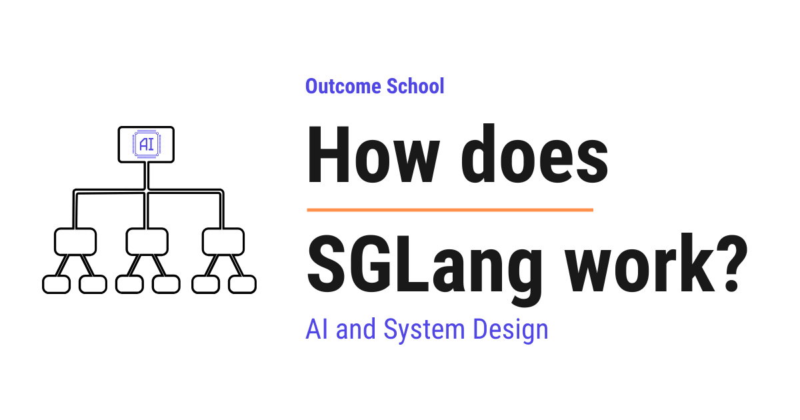
SGLang is a high-performance serving framework for large language models. It serves a model's answers to many users at the same time, as fast as possible, using clever ideas like RadixAttention to reuse past work.
In this blog, we will learn about how SGLang works. We will also see what problem it solves, how it makes serving large language models faster, and the clever ideas that make it special.
We will cover the following:
- What is SGLang?
- A quick recap of how an LLM generates text
- The problem SGLang solves
- RadixAttention: the heart of SGLang
- How RadixAttention reuses past work
- The frontend language of SGLang
- How the runtime and the frontend work together
- Continuous batching in SGLang
- Structured output and faster decoding
- A simple end-to-end picture
- More powerful features of SGLang
- How SGLang compares to vLLM
Let's get started.
What is SGLang?
SGLang is a high-performance serving framework for large language models and multimodal models.
In simple words, it is a tool that takes a large language model and serves its answers to many users at the same time, as fast as possible.
The name SGLang comes from two parts.
SGLang = SG (Structured Generation) + Lang (Language).
So, the name itself tells us two things. It helps us generate structured output in a controlled way, and it gives us a small language to write our instructions.
Do not worry, we will learn about each of these parts in detail.
For now, just remember this. SGLang has two main pieces that deliver these two things. One piece is a runtime, which is the engine that actually runs the model fast and takes care of the structured output. The other piece is a frontend language, which is the small language we just mentioned, the friendly way for us to tell the model what to do.
Now, before we understand why SGLang is fast, we must first understand how an LLM generates text. Once we know that, the magic of SGLang will be very clear.
A quick recap of how an LLM generates text
An LLM writes text one word at a time. To be precise, it writes one token at a time.
A token is a small piece of text. It can be a whole word, a part of a word, or even a single character. For the sake of understanding, we can think of a token as roughly one word.
So, the model reads our input, then it produces one token. Then it reads our input plus that new token, and it produces the next token. It keeps doing this until the answer is complete.
Let's say we ask the model, "The sky is".
First, the model reads "The sky is" and produces "blue".
Then it reads "The sky is blue" and produces "today".
Here, we can notice something important. To produce each new token, the model looks back at everything that came before.
Now, looking back at all the previous tokens again and again would be very slow. So, the model stores some helpful numbers from the previous tokens and reuses them. These stored numbers are called the KV cache.
The KV cache is the model's memory of the tokens it has already processed. It stands for the key and value cache. We do not need the deep math here. We just need this simple idea.
The KV cache is the model's saved work for the tokens it has already seen, so it does not have to redo that work for every new token.
This KV cache is very important. It is the key to understanding why SGLang is so fast. Keep this idea in mind.
The problem SGLang solves
Now, let's understand the real problem.
In the real world, an LLM does not answer just one person. It answers thousands of people at the same time. And the same model is asked many similar things again and again.
Let's say we build a chatbot. Every single conversation begins with the same instruction, which is called a system prompt.
A system prompt is a fixed set of instructions we give the model before the user speaks. For example, "You are a helpful assistant.".
So, every user's request starts with this same instruction. The model has to process this same text again and again, for every user. This is wasted work.
Here is another example. Suppose we are building an agent that answers questions about a document. The document is the same for every question. But the model reads the whole document from scratch for each question.
This is like reading an entire book from page one, every single time someone asks you a small question about it. It is slow, and it wastes effort.
So, the problem is clear. The model repeats the same expensive work many times. We need a way to do that shared work only once and reuse it.
So, here comes SGLang to the rescue.
SGLang was built around one central idea. If two requests share the same starting text, they can share the saved work for that text. This saved work, as we learned, is the KV cache.
The technique that makes this sharing possible is called RadixAttention. This is the heart of SGLang.
RadixAttention: the heart of SGLang
Let's break down this name first.
RadixAttention = Radix (a way to organize text by shared prefixes) + Attention (the core operation an LLM uses to look back at previous tokens).
To understand Radix, we must first understand a prefix.
A prefix is the starting part that two pieces of text have in common.
For example, look at "The sky is blue" and "The sky is clear". They share the prefix "The sky is". After that, one says "blue" and the other says "clear".
Now, SGLang keeps a smart structure called a radix tree to store the KV cache of many requests.
A radix tree is a tree-like structure that groups text by its shared prefix. We can think of it as a family tree of sentences. Sentences that begin the same way share the same branch. They only split apart at the point where they become different.
Let's make this very concrete with a small example.
Suppose three users send these three requests:
- "You are a helpful assistant. What is the capital of France?"
- "You are a helpful assistant. What is the capital of Japan?"
- "You are a helpful assistant. Tell me a joke."
Here, we can see that all three share the same start, which is "You are a helpful assistant.".
Without SGLang, the model would process "You are a helpful assistant." three separate times.
With SGLang, the radix tree stores that shared part once. Its KV cache is computed only one time. Then each request continues from there. And wherever some requests still share even more text, that shared text becomes another branch that is also stored only once.
Let's see the radix tree as below:
"You are a helpful assistant."
(shared prefix, KV cache stored once)
|
+-------------+--------------+
| |
v v
"What is the capital of" "Tell me a joke."
(shared by two requests, (unique tail)
KV cache stored once)
|
+---+---+
| |
v v
"France?" "Japan?"
(unique) (unique)
Here, we can see that the common start, "You are a helpful assistant.", sits at the top as one shared branch. Its saved work is computed only once. Below it, the two requests that ask about a capital share even more text, which is "What is the capital of". So that part becomes another shared branch, and its saved work is also stored only once. Only at the very bottom do "France?" and "Japan?" split into their own unique parts. The "Tell me a joke." request shares only the top branch and then goes its own way. None of the shared branches are ever recomputed.
This is how RadixAttention saves a huge amount of work. The shared prefix is processed once, and that saved work is reused by other requests that share it, for as long as it stays in memory.
The problem is solved.
How RadixAttention reuses past work
Now, let's understand the steps SGLang follows. This will make everything clear.
Step 1: A new request arrives. For example, "You are a helpful assistant. What is the capital of Italy?".
Step 2: SGLang looks at its radix tree. It checks how much of the start of this request already exists in the tree.
Step 3: It finds that "You are a helpful assistant. What is the capital of" is already there, because the earlier requests about France and Japan added it. So, it reuses the saved KV cache for that whole part. It does not recompute it.
Step 4: Only the new part, which is "Italy?", is processed fresh. The new saved work is then added as a new branch in the tree.
Step 5: The model generates the answer one token at a time, just like we learned earlier.
So, the more text different requests share, the more work SGLang saves. This sharing is automatic. We do not have to do anything special to enable it.
There is one more thing to understand. The memory that stores the KV cache is limited. It cannot hold everything forever.
So, SGLang must decide what to keep and what to throw away when the memory gets full. It uses a simple and smart rule. It removes the least recently used branches first. This means the branches that nobody has used for the longest time get removed first.
This is a clever choice. The popular shared prefixes, like the system prompt, stay in memory because they are used all the time. The rare one-off parts get removed when space is needed.
This is how SGLang keeps the most useful saved work and reuses it as much as possible.
We have a detailed blog on how prompt caching works that explains this in depth.
The frontend language of SGLang
Till now, we have learned about the engine. Now, it is time to learn about the friendly part, which is the frontend language.
The frontend language is a simple way for us to write our instructions to the model, right inside our Python code.
Why do we need this? Because real tasks are rarely a single question. A real task is often many steps.
Let's say we want the model to do this:
- Read a paragraph.
- Summarize it.
- Then translate the summary into French.
These are three steps that depend on each other. Writing all of this by hand, and keeping it fast at the same time, is hard.
So, the frontend language lets us describe these steps clearly. We can write a sequence of model calls, mix in our own text, and capture the model's output into variables.
Let's see a small example as below:
import sglang as sgl
@sgl.function
def summarize_and_translate(s, paragraph):
s += "Summarize this paragraph:\n" + paragraph + "\n"
s += "Summary: " + sgl.gen("summary", max_tokens=64)
s += "Now translate the summary to French.\n"
s += "French: " + sgl.gen("french", max_tokens=64)
Here, we have defined a function that does two model calls in order.
- The variable
sholds the growing conversation. We keep adding text to it. sgl.gen("summary", ...)asks the model to generate the summary and saves it under the namesummary.- After that, we ask the model to translate, and we save the result under the name
french.
So, we describe the whole flow in plain steps, and SGLang runs it efficiently behind the scenes.
This is the beauty of the frontend language. We write our intent simply, and the runtime takes care of speed and sharing.
How the runtime and the frontend work together
Now, let's connect the two pieces we have learned.
The frontend language is how we describe the task. The runtime is the engine that runs it fast using RadixAttention.
Here is the nice part. The frontend understands the structure of our program. It knows which parts are fixed and shared, and which parts are new.
So, when many requests run the same program, they naturally share the same prefixes. The runtime sees this and reuses the KV cache through the radix tree.
In simple words, the frontend and the runtime are designed to help each other. The frontend exposes the shared structure, and the runtime exploits it for speed.
This teamwork is the core reason SGLang is both easy to use and fast.
Continuous batching in SGLang
Now, let's learn another idea that helps SGLang stay fast. This idea is not unique to SGLang. Many modern serving systems use it too. It is called continuous batching.
First, what is a batch? A batch is a group of requests that the model processes together at the same time. Processing many requests together is much more efficient than processing them one by one.
But there is a catch with simple batching. Different requests finish at different times. One user may want a short answer, and another may want a long one.
In old-style batching, we would wait for the whole group to finish before starting a new group. This means fast requests are stuck waiting for slow ones. That wastes time.
So, here comes continuous batching to the rescue.
Continuous batching means that as soon as one request in the group finishes, a new waiting request takes its place right away. We do not wait for the whole group to finish.
Let's say we have a batch of four requests. Request two finishes early. Instead of leaving an empty slot, SGLang immediately fills that slot with the next waiting request.
Let's see the difference as below:
Old-style batching (slot sits empty, time wasted):
Slot 1: [ R1 running ............ ]
Slot 2: [ R2 done ] [ empty, waiting for whole group ]
Slot 3: [ R3 running ............ ]
Slot 4: [ R4 running ............ ]
Continuous batching (empty slot filled right away):
Slot 1: [ R1 running ............ ]
Slot 2: [ R2 done ] [ R5 starts immediately ........ ]
Slot 3: [ R3 running ............ ]
Slot 4: [ R4 running ............ ]
Here, we can see that in old-style batching, the slot of the finished request stays empty until the whole group is done. In continuous batching, a new waiting request, R5, jumps into that slot right away. No slot sits idle.
So, the model is always kept busy. No slot sits empty. This keeps the hardware working at full power and serves more users in the same amount of time.
This is how continuous batching squeezes the most out of the machine.
One important point to remember. Continuous batching is a common technique, so it is not the part that makes SGLang special. The special part is that SGLang brings continuous batching and RadixAttention together. RadixAttention reuses the shared work through the radix tree, and continuous batching keeps the machine busy. This combination is what makes SGLang shine when many requests share a long common start.
Structured output and faster decoding
Let's remember the name again. SGLang has the word "Structured Generation" in it. Now, we will finally understand that part.
Many times, we do not want free text from the model. We want the answer in a fixed format.
For example, we may want a JSON answer like below:
{
"name": "Italy",
"capital": "Rome"
}
A JSON is a simple, common format used to store data as a set of names and values. Many programs read and write data in this format.
The problem is, a normal model may produce slightly broken JSON. It may forget a bracket or add extra words. Then our program cannot read it.
So, SGLang lets us force the output to follow a fixed shape. We give it a rule for the format, and SGLang makes sure every generated token follows that rule.
This is called constrained decoding.
Constrained decoding means the model is only allowed to pick tokens that keep the output valid for our chosen format. If a token would break the format, it is simply not allowed.
So, the output is always valid. We never get broken JSON. The problem is solved.
There is a bonus here. Because the format already fixes some parts of the output, SGLang can sometimes fill those fixed parts very quickly instead of asking the model for them one token at a time. This makes structured output faster too.
This is how SGLang gives us reliable, well-shaped answers, and gives them quickly.
A simple end-to-end picture
Now, let's put the whole story together in one simple flow.
Step 1: We write our task using the SGLang frontend language. We describe the steps and the format we want.
Step 2: Our request goes to the SGLang runtime, which is the engine.
Step 3: The runtime looks at the radix tree and checks for any shared prefix, like the system prompt. If it is already there, it reuses the saved KV cache through RadixAttention.
Step 4: Only the new part of our request is processed fresh, and its saved work is added to the tree.
Step 5: Our request joins a batch. Thanks to continuous batching, the engine stays fully busy and serves many users together.
Step 6: The model generates the answer one token at a time. If we asked for a fixed format, constrained decoding keeps every token valid.
Step 7: We get our answer, fast and correctly shaped.
Here is the whole flow as below:
We write the task (frontend language)
|
v
SGLang runtime (engine)
|
v
Check the radix tree for a shared prefix
|
+--------+--------+
| |
found prefix new part
| |
v v
reuse saved KV process fresh and
cache (Radix add to the tree
Attention) |
+--------+--------+
|
v
Join a batch (continuous batching keeps
the engine busy)
|
v
Generate one token at a time
(constrained decoding keeps the format valid)
|
v
Fast, well-shaped answer
Here, we can see the request flowing from our frontend code, into the runtime, through the radix tree where shared work is reused, into a batch that keeps the engine busy, and finally out as a valid answer.
This is how SGLang works from start to finish.
We have a detailed blog on LLM inference optimization that covers the broader landscape of these techniques.
More powerful features of SGLang
We have now seen the full core flow of SGLang. But SGLang is a large and modern tool, and it does much more than the core. Let's look at its other powerful features in simple words. Many of these are also found in other modern serving tools, so they are not unique to SGLang.
Before we list them, we need one small idea. When a model answers, there are two stages. First, it reads the whole prompt in one go. This stage is called the prefill. Then, it writes the answer one token at a time. This stage is called the decode. Many of the features below make these two stages faster.
Chunked prefill. Some prompts are very long, like a big document. Reading such a long prompt in one go can block everyone else. So, SGLang can break a long prompt into smaller chunks and read them bit by bit, mixed in with the answer writing. This keeps the work smooth for all users.
Speculative decoding. Writing one token at a time is slow. So, SGLang can guess several tokens ahead using a small, fast helper model, and then check those guesses with the main model in one step. When the guesses are correct, we get many tokens at once. This makes the answer come out faster. SGLang also supports EAGLE, which makes those guesses land more often by drafting at the model's internal feature level instead of the token level.
Prefill and decode disaggregation. The prefill stage and the decode stage need different things. Prefill needs a lot of raw computing power. Decode needs a lot of memory and quick back-and-forth. So, SGLang can run these two stages on separate machines, each tuned for its own job, and a smart router sends each request to the right place. This is often called PD disaggregation, and it helps SGLang run smoothly at a very large scale.
Splitting a model across many GPUs. Some models are too big to fit on one GPU. A GPU is the powerful chip that actually runs the model. So, SGLang can split a single model across many GPUs, so that it fits and runs fast. For very large mixture-of-experts models, where the model is made of many smaller expert parts, SGLang can even spread these experts across many machines. This is how it serves some of the biggest models in the world.
Quantization. The numbers inside a model take up a lot of memory. Quantization shrinks these numbers into a smaller form, so the model uses less memory and runs faster, with almost no drop in quality. SGLang supports many of these smaller forms.
Serving many custom versions at once. Sometimes we have many small custom versions of the same base model, each trained for a different task. SGLang can serve many of these versions together in the same batch, instead of loading each one on its own machine. This saves a lot of resources.
Understanding images and more. SGLang is not only for text. It can also serve models that understand images, and it keeps adding support for more types, like video. This is why it is called a framework for large language models and multimodal models.
A smart scheduler. Continuous batching, which we saw earlier, keeps the slots full. The scheduler handles a different kind of waiting. The GPU does the heavy work, while the CPU, the part that plans the work, decides what to run next. SGLang does this planning while the GPU is still busy, so the GPU almost never has to wait for the next step.
Cache-aware load balancing. When SGLang runs on many machines, it tries to send each request to the machine that already has its shared work saved. This way, the reuse we learned about with RadixAttention keeps working even across many machines.
So, SGLang is much more than RadixAttention. It is a complete, modern serving tool with many features that work together to make serving large language models fast, affordable, and reliable.
How SGLang compares to vLLM
vLLM is another tool for serving large language models. It is one of the most popular tools in the world for this job. So, it is natural to ask how SGLang is different from it. Let's look at the honest picture, without favoring either one.
Here is the most important truth first. SGLang and vLLM are both excellent, and over time they have become quite similar. Both are fast. Both serve many users at once. Both reuse the saved work, which is the KV cache, for shared text. Both can produce structured output like JSON. Both even offer the same style of simple API, so we can often move from one to the other without changing much code.
So, what is actually different?
The first difference is in how they reuse shared text. SGLang matches shared text very precisely, piece by piece, using its radix tree. vLLM matches shared text in fixed-size blocks. In simple words, SGLang can often catch sharing that vLLM would miss, especially in long back-and-forth chats where each turn adds a little more text. When many requests start with the exact same fixed text, both do very well. This block-based matching in vLLM is called PagedAttention, and we have a detailed blog on PagedAttention that explains how it works.
The second difference is reach and maturity. vLLM has been around a little longer. It has the largest community and the longest track record in production, so for general serving it is often the default choice. SGLang is newer, but it has grown very fast and is now trusted at a very large scale, serving a huge number of requests every day at many big companies. Both run on a wide range of hardware, which means many kinds of chips from different companies. So, both are battle-tested in the real world. The one engine that deliberately goes the other way is TensorRT-LLM, which runs only on NVIDIA GPUs and gives up that reach in exchange for kernels tuned to each GPU generation.
The third difference is what SGLang adds on top. SGLang gives us the frontend language we saw earlier, which makes multi-step tasks easy to write. It also has very strong support for structured output, with very little slowdown. And it shines when many requests share a lot of text, like long chats, agents, or document question-answering.
What about raw speed? The honest answer is that it depends on the model, the workload, and the version of each tool. Sometimes one is a little faster, and sometimes the other. Both keep improving very quickly. So, there is no single winner on speed.
Let me tabulate the differences between SGLang and vLLM for your better understanding so that you can decide which one to use based on your use case.
| Point | vLLM |
SGLang |
|---|---|---|
| Reusing shared text | In fixed-size blocks | Piece by piece, using a radix tree |
| Track record and community | The longest and largest | Newer, but growing very fast |
| Best known for | General fast serving and maturity | Prefix sharing, the frontend language, and structured output |
| Great for | Many very different requests | Multi-turn chat, agents, and document question-answering |
So, how do we choose? For the largest community, the longest track record, and general serving with very different requests, vLLM is a great choice. For heavy text sharing, like multi-turn chat, agents, or document question-answering, and for strong structured output, SGLang is a great choice. For many everyday cases, both will serve us well.
So, now we have understood how SGLang works. It reuses shared work with RadixAttention, lets us write tasks with the frontend language, keeps the machine busy, and gives us reliable structured output. Together, these ideas let us serve large language models to many people quickly and reliably.
Frequently Asked Questions
Do we need to turn on prefix sharing manually in SGLang?
No. The sharing is automatic. When a new request arrives, SGLang checks its radix tree for how much of the start already exists, reuses the saved KV cache for that part, and processes only the new part. We do not have to do anything special to enable it.
What happens when the KV cache memory in SGLang gets full?
SGLang removes the least recently used branches of the radix tree first. So the branches that nobody has used for the longest time are thrown away. Popular shared prefixes, like the system prompt, stay in memory because they are used all the time, while rare one-off parts are removed when space is needed.
Is continuous batching unique to SGLang?
No. Continuous batching is a common technique that many modern serving systems use. What makes SGLang special is that it brings continuous batching and RadixAttention together. RadixAttention reuses shared work, and continuous batching keeps the machine busy, which helps a lot when many requests share a long common start.
Does structured output slow down generation in SGLang?
Very little, and SGLang can even make it faster. With constrained decoding, the model is only allowed to pick tokens that keep the output valid, so we never get broken JSON. Because the format already fixes some parts of the output, SGLang can sometimes fill those parts quickly instead of generating them one token at a time.
Can SGLang serve models that understand images?
Yes. SGLang is not only for text. It can also serve models that understand images, and it keeps adding support for more types, like video. This is why it is called a serving framework for large language models and multimodal models.
Lesson 12.18
How does TensorRT-LLM work?
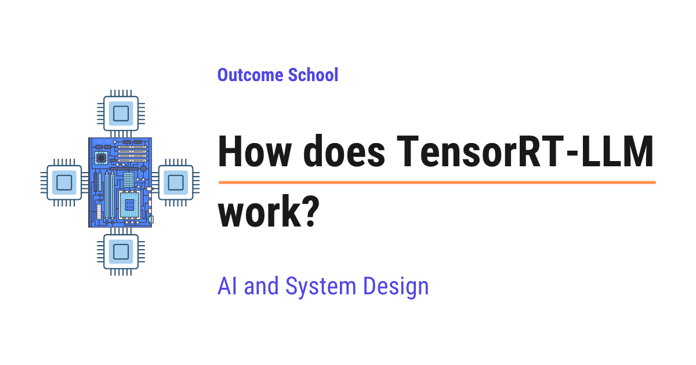
TensorRT-LLM is an open-source library from NVIDIA that makes large language models run as fast as possible on NVIDIA GPUs. We give it a finished model, and it gives us back a highly tuned, ready-to-run version for our GPU.
In this blog, we will learn about how TensorRT-LLM works, NVIDIA's own engine that squeezes the highest possible speed out of an NVIDIA GPU when it runs a large language model. We will also see what inference means, what a GPU kernel is, why a normal model run wastes a lot of the GPU's time, how TensorRT-LLM prepares the model ahead of time instead of figuring things out on the fly, how kernel fusion, quantization, the paged KV cache, in-flight batching, CUDA graphs, and speculative decoding each add speed, how one model is spread across many GPUs, and where it works well and where it fails.
We will cover the following:
- What is inference?
- What is a GPU and what is a kernel?
- The problem: the GPU spends its time on the wrong things
- What is TensorRT-LLM?
- The big idea: prepare the model ahead of time
- The build step: from a model to an engine
- Kernel fusion
- Quantization
- Custom attention kernels
- The paged KV cache
- In-flight batching
- CUDA graphs
- Speculative decoding
- Running one model across many GPUs
- How we actually serve the model
- The PyTorch backend, the newer and easier path
- The full journey of one request
- TensorRT-LLM vs vLLM
- Where it works well and where it fails
Let's get started.
What is inference?
Let's start from the very beginning.
A large language model, or LLM, is the AI model behind tools like ChatGPT. We give it some text, and it gives us back some text.
An LLM has two very different parts of its life.
The first part is training. This is when the model learns. It reads a huge amount of text and slowly adjusts billions of internal numbers until it becomes good at predicting words. Training happens once, it takes a long time, and it is very expensive.
The second part is inference. This is when the model works. Training is finished, the numbers are frozen, and now we simply ask the model a question and it gives us an answer.
Inference means using an already-trained model to produce an answer.
In simple words, training is the student studying for years, and inference is the student answering our question today.
Now, here is why inference matters so much in the real world. Training happens once. Inference happens every single time any user types anything. Millions of times a day. So, even a small saving in inference time gets multiplied by millions.
This is the exact thing TensorRT-LLM is built for. It does not help us train a model. It makes inference as fast as it can possibly be.
What is a GPU and what is a kernel?
Before we can understand what makes inference slow, we need two more simple ideas.
A GPU is a special chip that is extremely good at doing a huge amount of simple math at the same time. An LLM is basically a mountain of multiplications and additions, so a GPU is the perfect chip for it.
Let's understand the GPU with a comparison. A normal processor, called a CPU, is like one very clever person who solves problems one after another, very quickly. A GPU is like ten thousand ordinary people who all work at the same moment. If the job is one hard puzzle, the clever person wins. If the job is ten thousand small sums, the crowd wins by a mile. An LLM is ten thousand small sums, so the GPU wins.
Now, the second idea. The GPU does not do anything on its own. The CPU has to tell it what to do. It does that by sending small programs to the GPU.
A kernel is a small program that runs on the GPU and does one specific piece of math.
For example, there is a kernel that multiplies two big grids of numbers. There is another kernel that adds two lists of numbers. There is another kernel that applies a simple formula to every number in a list.
So, running an LLM means the CPU launches thousands of these kernels one after another, and the GPU runs each one. Launching a kernel is called a kernel launch.
We can picture it as below:
HOW A MODEL RUNS ON A GPU
CPU (the manager) GPU (the ten thousand workers)
------------------ -----------------------------
"run kernel 1" -------> kernel 1 runs, result saved
"run kernel 2" -------> kernel 2 runs, result saved
"run kernel 3" -------> kernel 3 runs, result saved
... ...
(thousands of launches for a single token)
Here, we can see that the CPU is the manager sending instructions, and the GPU is the crowd of workers doing the actual math. For every single token the model writes, this whole conversation between the manager and the workers happens thousands of times.
Keep this picture in your mind. Almost everything TensorRT-LLM does is about making this picture cleaner and faster.
The problem: the GPU spends its time on the wrong things
Now, let's see the real problem.
When we run a model in the normal way, using a standard deep learning framework, the framework figures out what to do while it is running. It reads the model layer by layer, and for each layer it picks a ready-made kernel and launches it.
This is very flexible and very convenient. We can change the model, print things in the middle, and experiment freely. That freedom is wonderful when we are building a model.
But that same freedom is expensive when we are only running a finished model millions of times. Let's see exactly where the time leaks away.
The first leak is too many small kernels. Each layer of the model is broken into many tiny steps, and each tiny step is its own kernel. A big multiplication is one kernel. Adding a small correction is another kernel. Applying a formula to every number is another kernel. Each of these kernels is small and finishes fast, but there are thousands of them.
The second leak is memory traffic. This one is the biggest, so let's understand it properly. The GPU has a large memory where all the numbers live, and a much smaller, much faster memory right next to the workers. Every kernel has to pull its numbers from the large memory, do its math, and push the answer back to the large memory. Pulling and pushing is slow. The math itself is fast.
So, when we run ten small kernels in a row, the same numbers get pulled out and pushed back ten times. The workers finish their sums almost instantly and then sit idle, waiting for the next delivery of numbers. The GPU looks busy, but it is mostly waiting.
The third leak is launch overhead. Every kernel launch costs a little bit of time on the CPU side. One launch is nothing. Thousands of launches for every single token, for every user, adds up into a real delay. Sometimes the CPU cannot even prepare the launches fast enough, and the powerful GPU sits idle waiting for its manager to speak.
The fourth leak is generic kernels. A ready-made kernel is written to work for every model, every size, and every GPU. Being general means it cannot be perfect for our exact model on our exact GPU. There is always a faster version possible.
Let's see the leak in a simple picture as below:
NORMAL RUN: many small kernels, numbers travel back and forth
big GPU memory: [ numbers ]
| ^ | ^ | ^
v | v | v |
kernel 1 kernel 2 kernel 3
(multiply) (add) (apply formula)
pull, compute, push -> pull, compute, push -> pull, compute, push
the math is fast, the travelling is slow, the workers keep waiting
Here, we can notice that the numbers make the slow trip to and from the big memory three separate times, once for each kernel, even though the three kernels are doing one connected piece of work.
So, the problem is clear. The GPU has enormous power, and a normal run wastes a large part of it on travelling, launching, and general-purpose kernels instead of on math.
So, here comes TensorRT-LLM to the rescue.
What is TensorRT-LLM?
Now that we understand the problem, let's understand the solution.
TensorRT-LLM is an open-source library from NVIDIA that makes large language models run as fast as possible on NVIDIA GPUs.
In simple words, we hand it a finished model, and it hands us back a highly tuned, ready-to-run version of that model that squeezes the most speed out of our specific GPU.
Let's break the name down.
TensorRT-LLM = Tensor + RT + LLM.
- Tensor is simply the name for a grid of numbers. A single number, a list of numbers, a table of numbers, and bigger versions of these are all tensors. Everything inside a model is tensors.
- RT stands for Runtime, which means the part that actually runs the model.
- LLM tells us this library is built specially for large language models.
TensorRT-LLM is built on top of an older NVIDIA tool called TensorRT, which does the same kind of speed work for all sorts of AI models. TensorRT-LLM adds everything that is special about large language models on top of it, like the KV cache, batching many users together, and splitting a giant model across several GPUs.
TensorRT-LLM does its thinking ahead of time, so that at answer time the GPU does nothing but math.
That single sentence is the heart of this blog.
To reach that speed, TensorRT-LLM uses a set of tricks that all work together:
- Kernel fusion, which merges many small pieces of math into one, so the numbers travel less.
- Quantization, which stores the model's numbers in a smaller form, so they take less space and move faster.
- Custom attention kernels, which are custom-written programs for the heaviest part of the model.
- The paged KV cache, which hands out memory in small blocks so nothing is reserved and wasted.
- In-flight batching, which keeps every slot on the GPU filled with live work at all times.
- CUDA graphs, which replay a whole recorded sequence of steps with a single instruction.
- Speculative decoding, which produces several tokens in the time normally taken by one.
- Multi-GPU execution, which splits a model too big for one GPU across many of them.
Most of these ideas are not NVIDIA-only. We have a detailed blog on LLM Inference Optimization that covers this whole family of techniques end to end.
Do not worry, we will learn about each of them in detail. Let's start with the idea that ties them all together.
The big idea: prepare the model ahead of time
Let's understand the core idea with a simple comparison.
Suppose we open a restaurant. There are two ways to cook.
The first way is cooking to order from scratch. A customer orders, and only then do we open the recipe book, walk to the store, buy the vegetables, chop them, and start the stove. Every single order repeats all of this. It is very flexible, because we can cook literally anything a customer asks for. But every customer waits a long time.
The second way is preparing everything in advance. Before the restaurant opens, we decide the menu, chop all the vegetables, pre-mix the sauces, and arrange every tool exactly where the cook's hand will reach for it. Now when the order arrives, the cook only has to do the actual cooking. The food comes out very fast. The price we pay is that the menu is fixed. We prepared for these dishes, and cooking something completely different means preparing all over again.
A normal deep learning framework is the first restaurant. TensorRT-LLM is the second restaurant.
Ahead of time, TensorRT-LLM studies the whole model, decides the fastest possible way to run every part of it on our exact GPU, and saves that plan. At answer time, it simply follows the saved plan.
This preparation step is called the build, and what it produces is called an engine.
An engine is a single prepared file that holds the model's numbers along with the exact plan for running them fast on one specific kind of GPU. It is not a recipe book any more. It is a fully prepped kitchen.
Now, why does preparing ahead of time help so much? Because during the build, TensorRT-LLM has all the time in the world. It can try many different kernels for the same operation, actually time each one on the real GPU, and keep the winner. It can look at ten small operations sitting next to each other and decide to merge them into one. None of this is possible while a user is waiting for an answer.
So, we can now state the trade very simply. We spend a few minutes once, in exchange for speed on every request forever after.
The build step: from a model to an engine
Now, let's walk through the build step by step, so that it feels real.
Step 1: We start with the trained model. This is the finished model as it comes from wherever we got it, with all its learned numbers, called weights. Weights are simply the numbers the model learned during training.
Step 2: We describe the model to TensorRT-LLM. TensorRT-LLM already has ready-made definitions for the popular model families, so most of the time we do not write anything. It reads the model and builds an internal map of every operation and how they connect.
Step 3: TensorRT-LLM optimizes that map. This is where the real work happens. It merges operations together, removes work that is not needed, and rearranges things into a faster shape. We will learn about these tricks in the next sections.
Step 4: It picks the best kernel for every operation. For each piece of math, it tries several kernel versions on our actual GPU, measures how long each one really takes, and keeps the fastest. This is called kernel auto-tuning. Notice that the answer can be different on different GPUs, which is exactly why the engine is tied to one GPU type.
Step 5: It writes out the engine file. The prepared plan and the weights are saved together into one file that we can load and run.
We can picture the whole build as below:
THE BUILD STEP
trained model ---> TensorRT-LLM build ---> engine file
(weights) - merge operations (weights + the exact
- remove extra work plan to run them fast)
- try many kernels
- time them on the
real GPU, keep
the fastest
happens ONCE, takes minutes used for EVERY request after that
Here, we can see that all the thinking is pushed into the one-time build on the left, so that the right side, which happens millions of times, is left with pure math and nothing else.
Note: Because the plan was tuned for one specific GPU, one precision, and one set of size limits, an engine is not freely portable. If we move to a different GPU or want to allow much longer prompts, we build a new engine. This rigidity is the honest price of the speed, and we will come back to it at the end of the blog.
Now, let's learn the individual tricks that happen inside the build and inside the runtime.
Kernel fusion
This is the most important trick, so let's understand it well.
Kernel fusion means combining several small kernels into one bigger kernel, so that the numbers are pulled from memory once instead of many times.
Remember the problem we saw earlier. The slow part is not the math. The slow part is the numbers travelling between the big GPU memory and the workers.
Let's take a concrete little example. Suppose the model needs to do three things in a row on the same numbers.
- Multiply the numbers by a big grid of weights.
- Add a small correction value to the result.
- Apply a simple formula to every number, the kind that turns negative values into zero.
Without fusion, these are three kernels. The numbers come out of the big memory, get multiplied, and go back. They come out again, get the addition, and go back. They come out a third time, get the formula, and go back. Three round trips.
With fusion, TensorRT-LLM writes one single kernel that does all three things while the numbers are still in the fast memory next to the workers. The numbers come out once, all three things happen, and they go back once. One round trip instead of three.
Let's see the difference as below:
WITHOUT FUSION (3 round trips)
big memory -> multiply -> big memory -> add -> big memory -> formula -> big memory
WITH FUSION (1 round trip)
big memory -> [ multiply + add + formula, all in fast memory ] -> big memory
Here, we can see that the actual math is exactly the same in both cases, and the answer is exactly the same too. The only thing that changed is how many slow trips the numbers had to make. We cut it from three to one.
Fusion also removes two kernel launches, so the CPU has less to do as well.
Now, multiply this saving by every layer of the model, and by every token of every answer, for every user. This is why fusion alone gives a large speed-up.
TensorRT-LLM fuses aggressively, and this is much easier for it than for a normal framework, because during the build it can see the whole model at once and it knows nothing is going to change later.
This is how kernel fusion turns many slow trips into one. Now, let's move to the next trick.
Quantization
Now, let's learn the second big trick.
To understand it, we need to know how a model stores its numbers.
Every weight inside a model is a number with a decimal point, like 0.372. The computer stores such a number using a fixed amount of space, measured in bits. A bit is the smallest unit of computer memory.
Models are usually trained using 16 bits or 32 bits for every single number. More bits means the number is stored more precisely.
Quantization means storing the model's numbers using fewer bits.
In simple words, we shrink every number into a smaller, rougher form.
Let's understand it with a comparison. Suppose we are writing down a price. We could write 19.9999999 or we could write 20. The short version takes far less space to write, far less time to read, and for most purposes it is just as useful. Quantization is exactly this, applied to every number in the model.
So, we may take a model stored in 16 bits per number and store it in 8 bits per number, or even 4 bits per number. TensorRT-LLM supports several of these smaller forms, and NVIDIA's newer GPUs have special hardware that runs the small forms extremely fast.
Now, why does this help so much? There are three reasons, and all three matter.
The first reason is less memory used. A model in 8 bits takes about half the space of the same model in 16 bits. So, a model that did not fit on our GPU may now fit, and the space we saved becomes room for serving more users at once.
The second reason is less travelling. We already know that moving numbers is the slow part. If every number is half the size, then moving them takes about half the time. This is a direct speed-up on the exact thing that was the bottleneck.
The third reason is faster math. Modern NVIDIA GPUs have dedicated hardware for doing math on these smaller numbers, and it runs several times faster than the same math on bigger numbers.
But, here is the catch. Rounding numbers loses a little information. If we are careless, the model's answers get worse.
So, quantization is done carefully. Some sensitive parts of the model are kept at higher precision while the rest is shrunk. The rounding is calibrated by running a small amount of sample text through the model and observing the real range of the numbers, so that the rounding is tuned to what actually happens rather than guessed. TensorRT-LLM ships several well-tested quantization methods that do this properly.
Note: The KV cache can be quantized too, not just the weights, which is one of the KV Cache Compression techniques. We will learn what the KV cache is in a moment, and it takes a huge amount of memory, so shrinking it lets us serve many more users at the same time.
So, done well, quantization gives us a smaller, faster model whose answers stay very close to the original. Done carelessly, it gives us a fast model that is not as good. This is why it must always be checked on real examples before we ship it.
This was all about quantization. Now, let's look at the single heaviest part of the model.
Custom attention kernels
Now, let's look at the part of the model where TensorRT-LLM spends most of its effort.
Inside a large language model, the most important operation is called attention. In simple words, attention is how the model looks back at all the earlier words to decide what the next word should be. When the model is about to write a word, attention is the step where it asks, "which of the earlier words matter most for what I am writing right now".
Attention is expensive, and it gets more expensive as the conversation gets longer, because there are more earlier words to look back at. So, attention is usually the single biggest consumer of time in the whole model.
Now, here is the important part. Attention is not one operation. Written out plainly, it is a chain of several operations, one after another, each with its own trip to the big memory. That is exactly the pattern we now know is wasteful.
So, TensorRT-LLM does not run attention as a chain. It uses custom attention kernels, which are custom-written kernels that do the entire attention step in one go, keeping the intermediate results in the fast memory next to the workers and never writing them out to the big memory at all.
The most famous kernel of this kind is Flash Attention, and we have a detailed blog on Flash Attention that explains how it works.
These kernels are written by engineers who know the GPU deeply, and there are different versions for different situations. There is one version tuned for reading a long prompt, and a different version tuned for writing one token at a time. There are versions tuned for each generation of NVIDIA GPU, because each generation has slightly different hardware.
This is one of the biggest reasons TensorRT-LLM is fast on NVIDIA hardware. NVIDIA makes the GPU, so NVIDIA knows exactly how to write a kernel that fits it perfectly.
Till now, we have learned how TensorRT-LLM speeds up the math. Now, it is time to learn how it manages memory while it is answering.
The paged KV cache
To understand this, we must first understand the KV cache. Let's build it up slowly.
The model works with tokens. A token is a small chunk of text, roughly a word or part of a word. Our prompt is broken into tokens, and the answer is produced as tokens.
There are two phases in every answer. First, the model reads our entire prompt in one go, and this phase is called the prefill. Then it writes the reply one token at a time, and this phase is called the decode. Prefill is the model digesting our question, and decode is the model writing its answer.
Now, during decode, to write each new token, attention needs to look back at every token that came before. For that, the model computes a small set of values for every token, a kind of note about what that token means in context. If it threw those notes away, it would have to recompute the notes for the entire conversation before writing every single new word. That would be painfully slow.
So, it keeps them.
The KV cache is the collection of these saved notes, one set per token, kept in GPU memory so the model never recomputes them.
Here is the key fact. The KV cache keeps growing. Every new token adds one more set of notes. And every user being served has their own KV cache. So, all of these caches live together in the same limited GPU memory, and the amount of free KV cache memory is what decides how many users we can serve at the same time.
Now, the naive way to manage this memory is wasteful. Since we do not know in advance how long an answer will be, the naive engine reserves one big block of memory for the longest possible answer, for every request, right at the start. Most answers turn out to be short, so most of that reserved space is never used and cannot be given to anybody else.
So, TensorRT-LLM uses a paged KV cache instead.
A paged KV cache splits the memory into many small equal-sized blocks and hands them out one at a time, only when a request actually needs more room.
The blocks do not have to sit next to each other in memory. A small table remembers which blocks belong to which request and in what order.
Let's see it as below:
PAGED KV CACHE
GPU memory: [B1][B2][B3][B4][B5][B6][B7][B8][B9] ... one pool of equal blocks
Request A -> B1, B4, B7 (3 blocks, given one at a time as the answer grew)
Request B -> B2, B3 (2 blocks)
Request C -> B5 (1 block, just started)
free and ready to hand out: B6, B8, B9
Here, we can see that nothing is reserved for an answer that may never arrive. Each request holds only the blocks it is genuinely using, and the moment a request finishes, all of its blocks go straight back into the free pool for the next user.
The problem is solved. There is no reserving space for an answer that may never come, and because every block is the same size, any free block fits any request, so almost nothing is wasted.
There is a beautiful bonus that comes free with blocks. Two requests that begin with exactly the same text can point at the very same blocks instead of each keeping a copy. Let's say every conversation in our product starts with the same long set of instructions. That identical beginning is stored once and shared by everybody. This is called prefix reuse, and it saves both memory and the work of processing that beginning again.
So, the paged KV cache lets us pack far more users onto the same GPU. Now, let's see how the GPU is kept busy.
In-flight batching
Now, let's learn how TensorRT-LLM keeps the GPU busy.
First, what is a batch? A batch is a group of requests that the GPU processes together in one go. A GPU is a crowd of ten thousand workers, so giving it one request at a time leaves most of the crowd idle. Batching is how we keep everyone working.
But the simple way of batching has a problem. In static batching, we collect a group of requests, run them all together, and wait for every one of them to finish before starting the next group.
Here is the catch. Answers have wildly different lengths. One user's answer is 20 tokens, another's is 800. In static batching, the short one finishes early and then its slot just sits there empty, waiting for the long one, because the whole group moves together. That empty slot is wasted GPU time, and it can be wasted for a very long time.
So, here comes in-flight batching to the rescue. This is TensorRT-LLM's name for the technique that other engines call continuous batching.
In-flight batching removes each finished request from the batch the moment it finishes and immediately pulls in a waiting request to take its place, without waiting for the rest of the batch.
Remember that decode writes one token per step, so there are many small steps. At every step, TensorRT-LLM checks which requests just finished, drops them, frees their KV cache blocks, and pulls new requests from the waiting line into the freed slots. The batch is always kept full of live work.
Let's compare the two as below:
STATIC BATCHING: the whole batch waits for the slowest one
step: 1 2 3 4 5 6 7 8
Req A: X X X done - - - - <- slot idle, wasted
Req B: X X X X X X X done
IN-FLIGHT BATCHING: a finished slot is refilled right away
step: 1 2 3 4 5 6 7 8
slot 1: A A A C C C D D <- A finished, C jumped in, then D
slot 2: B B B B B B B done
Here, we can see that in static batching, request A finished at step 3 but its slot stayed empty for five whole steps. In in-flight batching, request C jumped into that slot immediately, and request D followed when C was done. The GPU never idles.
There is one more helpful idea that works alongside this, called chunked prefill. Reading a very long prompt in one shot is a big piece of work that would block everybody else for a moment. So, TensorRT-LLM can break that long prompt into smaller chunks and process them a chunk at a time, mixed in between the token-writing steps of other users. This keeps everyone's answer flowing smoothly instead of one huge prompt causing a hiccup for the whole server.
Chunked prefill spreads the work out, but the two phases still share one GPU. At a very large scale, serving systems go one step further and run prefill and decode on separate GPUs. We have a detailed blog on Prefill-Decode Disaggregation that explains this step by step.
In-flight batching and the paged KV cache fit together perfectly. The paged KV cache frees a finished request's memory instantly, and in-flight batching immediately uses that freed memory and that freed slot for a new user. Together, they keep both the GPU memory and the GPU workers fully used.
CUDA graphs
Now, let's fix the third leak we identified earlier, which was launch overhead.
Remember that the CPU has to launch every kernel on the GPU, and that launching costs a little time. When the model writes a token, thousands of kernels are launched. When the model is small or the batch is small, the GPU finishes each kernel so quickly that the CPU cannot keep up, and the GPU sits waiting for its next instruction.
CUDA is NVIDIA's system for programming the GPU, and a CUDA graph is a way to record a whole sequence of kernel launches once and then replay the entire sequence with a single instruction.
In simple words, instead of the manager shouting three thousand separate instructions at the workers for every token, the manager hands over one prepared checklist and says "do this whole list". The workers run the list themselves without waiting for the manager again.
Let's see it as below:
WITHOUT CUDA GRAPH WITH CUDA GRAPH
CPU: "run kernel 1" CPU: "run the recorded graph"
CPU: "run kernel 2" |
CPU: "run kernel 3" v
... GPU runs all 3000 kernels
CPU: "run kernel 3000" on its own, back to back
(GPU waits between instructions) (no waiting in between)
Here, we can see that the same three thousand kernels run in both cases, but in the second case the CPU spoke only once. All the small gaps between instructions disappear.
This works so well in TensorRT-LLM for one specific reason. Every step that writes a token does exactly the same sequence of operations as the last one, over and over. A repeated, unchanging sequence is precisely what a CUDA graph is good at recording.
Now that we have learned how TensorRT-LLM removes the waiting, it is time to learn how it produces more than one token at a time.
Speculative decoding
Now, let's learn a trick that attacks a completely different problem.
Here is the problem. Writing one token at a time is fundamentally slow, and not because the GPU is weak. It is slow because each token must wait for the previous one. The model cannot write the fifth word until it has written the fourth. So, for each token, we pull the entire model's weights from memory just to produce one small piece of text. The ten thousand workers are barely breathing hard, and the whole cost is the trip to fetch the weights.
Here is the key realization. Producing five tokens at once would cost almost the same as producing one token, because the expensive part is fetching the weights, and we would fetch them once either way. The problem is only that we do not know what the next five tokens are.
So, here comes speculative decoding to the rescue.
Speculative decoding guesses several tokens ahead using something cheap and fast, then checks all the guesses with the real model in a single step, keeping the guesses that were right.
Let's walk through it.
Step 1: A cheap and fast guesser proposes the next few tokens, let's say four of them. The guesser can be a much smaller model, or a small extra piece attached to the main model, or even a simple lookup of text patterns seen earlier.
Step 2: The big model checks all four guessed tokens in one single pass. This is the clever part. Checking four tokens together costs almost the same as producing one, because the weights are fetched once.
Step 3: The big model compares. It keeps every guessed token from the start that matches what it would have produced itself, and throws away everything from the first mistake onwards.
Step 4: If all four guesses were right, we just produced four tokens for roughly the price of one. If the second guess was wrong, we keep the first token, correct the second one ourselves, and start again from there.
Let's see it as below:
SPECULATIVE DECODING
guesser proposes: [the] [cat] [sat] [on]
big model checks all four in ONE pass
big model agrees: [the] [cat] [sat] X <- disagreed here
kept: "the cat sat" (3 tokens) + the correct token the big model chose
cost: about one normal step
Here, we can see that three guessed tokens survived and one was rejected, so this single step produced four tokens in total instead of one.
Now, here is the most important promise of this technique. The final answer is exactly what the big model would have written on its own. Every guess is verified, and a wrong guess is thrown away. We are not trading quality for speed. We are only using the spare capacity that was sitting idle anyway.
TensorRT-LLM supports several styles of guessing, from using a small separate model to using extra prediction heads attached to the main model, as in Medusa and EAGLE, so we can pick whichever suits our setup.
This is how speculative decoding uses the capacity that was going to waste anyway.
Running one model across many GPUs
Now, let's handle the case where the model is simply too big for one GPU.
The largest models hold hundreds of billions of numbers. Even after quantization, no single GPU has enough memory to hold all of them. So, we must spread the model across several GPUs, and TensorRT-LLM has this built in.
There are two main ways to split a model, and TensorRT-LLM supports both, together if needed.
The first way is tensor parallelism. Here, we cut each individual layer of the model into pieces, and give one piece to each GPU. All the GPUs work on the same token at the same moment, each doing its own share of the math, and then they combine their partial answers into the complete one. Every GPU is busy at once, which makes this fast, but the GPUs must talk to each other after some steps to combine their pieces. That talking is fast when the GPUs sit inside one machine connected by high-speed links, and slow when they are in different machines over a normal network.
The second way is pipeline parallelism. Here, we do not cut any layer. Instead we give the first group of layers to the first GPU, the next group to the second GPU, and so on. The work flows through them like an assembly line. The GPUs barely need to talk, so this works better across machines, but a request passes through the GPUs one after another, so some GPUs wait while others work.
We can picture both as below:
TENSOR PARALLELISM PIPELINE PARALLELISM
(cut each layer sideways) (cut the stack of layers)
layer 1: [GPU0 | GPU1] layers 1-20 : GPU0
layer 2: [GPU0 | GPU1] layers 21-40 : GPU1
layer 3: [GPU0 | GPU1] layers 41-60 : GPU2
both GPUs work on the the work flows down the line,
same token together, then one GPU at a time for a
combine their pieces given request
Here, we can see that tensor parallelism cuts every layer sideways so all the GPUs share each step, while pipeline parallelism cuts the stack of layers into sections handled one after another.
In the classic engine path, the number of GPUs we want to use is decided at build time, because the engine has to be prepared with the model already split that way. This is another reason the engine is tied to a specific setup.
So, now we know how a model too big for one GPU is still served. Now, let's see how we put all of this in front of real users.
How we actually serve the model
Once our model is ready to run, we need something that receives requests over the network, runs them, and sends the answers back. TensorRT-LLM gives us a few ways to do this.
The simplest way is the built-in server. TensorRT-LLM ships a command that starts a server around our model and exposes it over the network. This server speaks the same request-and-reply format that OpenAI's API uses.
This last point matters more than it sounds. A huge number of tools and applications are already written to talk to OpenAI's API. If our server speaks the same language, we can point those existing tools at our own server by changing only the address, without rewriting our application. We run our own model, on our own GPU, and our code barely notices the difference.
The second way is through Triton Inference Server. Triton is NVIDIA's general-purpose serving system, used to run all kinds of AI models in production. It has a backend for TensorRT-LLM, so we can serve our model inside Triton and get everything Triton offers, like health checks, metrics, running several models side by side, and standard deployment patterns.
The third way is directly from our own code. TensorRT-LLM offers a Python interface, so we can load a model and generate text right inside our own program. This is the easiest way to try things out.
Let's see the simplest use as below:
from tensorrt_llm import LLM
llm = LLM(model="model-name-or-path")
output = llm.generate("What is inference in machine learning?")
print(output)
Here, we have loaded a model in one line and asked it a question in one more line. Behind these two simple lines, all the machinery we learned about is running, which means the fused kernels, the paged KV cache, in-flight batching, and everything else.
Note: There is also a hosted path. NVIDIA packages models into ready-made containers called NIM, which stands for NVIDIA Inference Microservice. Many of these containers use TensorRT-LLM inside, so a lot of people use it without ever building an engine by hand.
The PyTorch backend, the newer and easier path
Now, we must talk about how TensorRT-LLM has changed, because this matters a lot for how we use it today.
Everything we described so far follows the original path, which is to build an engine ahead of time and then run it. That path gives excellent speed, but we saw its cost. Building takes time, the engine is tied to one GPU type and one set of size limits, and supporting a brand new model architecture takes work.
New models come out constantly. Waiting for a build every time is uncomfortable.
So, TensorRT-LLM added a second way of working, built directly on PyTorch, which is the popular framework most models are written in. In the recent versions this PyTorch path has become the default.
In this newer path, there is no separate ahead-of-time build. We point TensorRT-LLM at a model and it runs, applying its optimizations as it loads.
Now, the obvious question is, do we lose the speed? Mostly, no. Let's see why. The biggest wins we learned about do not actually depend on the ahead-of-time build.
- The custom attention kernels are custom-written kernels, and they are used either way.
- The paged KV cache is a runtime memory manager, and it works either way.
- In-flight batching is a runtime scheduler, and it works either way.
- Quantization can be applied either way.
- CUDA graphs are recorded at runtime, and they work either way.
- Speculative decoding is a runtime technique, and it works either way.
What the ahead-of-time build uniquely gives is the deep whole-model fusion and the exhaustive kernel auto-tuning, where many kernel choices are actually timed on the real GPU and the winner is kept. Those are real gains, and for a stable, high-volume deployment on a fixed GPU they are worth the build.
So, we now have a clean way to choose. If we want the easiest path, the fastest support for new models, and freedom to change our setup, we use the PyTorch path. If we have one fixed model on one fixed GPU serving enormous traffic, and every last bit of speed matters, the ahead-of-time engine is still there for us.
The full journey of one request
We have learned many separate ideas. Now, let's put them together and follow one single request from start to finish, so that the whole picture becomes clear.
Before any user arrives: We prepare the model. Either we build an engine ahead of time, or we let the newer PyTorch path load and optimize the model as it starts. Either way, by the end of this the fused kernels are chosen, the quantization is applied, the model is split across the GPUs we asked for, and the KV cache memory is set up as one pool of small blocks. The server is now listening.
Step 1: Our question arrives at the server. It is broken into tokens.
Step 2: The scheduler checks whether the beginning of our question is already sitting in the KV cache from an earlier request, for example the same long set of instructions everybody's conversation starts with. If it is, that part is reused instead of being processed again.
Step 3: Whatever is new gets processed, which is the prefill. If our prompt is very long, it is broken into chunks so it does not block the other users waiting for their next token.
Step 4: Our request joins the live batch. In-flight batching had a slot free, because some earlier request just finished and its blocks went back into the pool.
Step 5: Now the answer is written, one step at a time. In each step, the fused kernels and the custom attention kernels do the math, the whole recorded sequence is replayed as one CUDA graph so the CPU never becomes the bottleneck, and speculative decoding tries to produce several tokens instead of one. Our KV cache gets one more block whenever it fills up.
Step 6: Each token is streamed back to us as it is produced, so we start reading the answer before it is complete.
Step 7: Our answer is finished. Our request leaves the batch immediately, all of our blocks return to the free pool, and a waiting user takes our slot in the very next step.
Let's see the whole journey as below:
our question
|
v
+--------------------------------------------+
| server (built-in, or Triton) |
+--------------------------------------------+
|
v
reuse the shared beginning from the KV cache?
|
+----+----+
| |
yes no
| |
| v
| process it (prefill, in chunks if long)
| |
+----+----+
|
v
join the live batch (in-flight batching)
|
v
write one step at a time:
fused + custom attention kernels (less travelling)
replayed as one CUDA graph (no waiting on the CPU)
speculative decoding (several tokens per step)
one more KV cache block when full (nothing reserved, nothing wasted)
|
v
tokens streamed back to us
|
v
finished: blocks freed, slot handed to the next user
Here, we can see that every idea we learned has its own place in the journey. The preparation happens once at the top, the memory tricks decide how many of us can be served together, and the speed tricks decide how fast each of our tokens comes out.
This is how TensorRT-LLM works from start to finish.
TensorRT-LLM vs vLLM
vLLM is the other very popular engine for serving large language models, so it is natural to ask how the two compare. Let's look at the honest picture, without favoring either one.
Let's start with what they share, because it is a lot. Both serve many users at once. Both use a paged KV cache so that memory is not wasted. Both use continuous batching, which TensorRT-LLM calls in-flight batching, so no slot sits idle. Both support quantization, speculative decoding, chunked prefill, and splitting a model across many GPUs. Both offer an OpenAI-compatible server, so moving from one to the other usually means changing an address and very little else. Ideas have flowed in both directions between these projects, and they have grown closer over time.
Now, the differences.
The first difference is who they are built for. TensorRT-LLM is built by NVIDIA for NVIDIA GPUs, and it is willing to go all the way down to custom-written kernels tuned per GPU generation to win. vLLM is built to run well across a wide range of hardware from different companies. So, TensorRT-LLM trades portability for depth, and vLLM trades depth for reach.
The second difference is how much preparation is expected. The classic TensorRT-LLM path asks us to build an engine first, tied to our GPU and our size limits. vLLM asks for nothing ahead of time. We point it at a model and it serves. The newer PyTorch path in TensorRT-LLM has narrowed this gap a lot, but the ecosystem, the documentation, and the habits around vLLM are still simpler for someone starting today.
The third difference is how quickly new models arrive. vLLM has a very large open-source community, and support for a brand new model often appears there within days. TensorRT-LLM covers the important models well, and NVIDIA moves fast on the big releases, but the very newest or the very unusual model is more likely to run in vLLM first.
The fourth difference is raw speed. The honest answer is that it depends on the model, the GPU, the workload, and the version of each tool. On NVIDIA hardware with a well-tuned engine, TensorRT-LLM is often the fastest thing available, which is exactly what it was built for. But both projects improve every few weeks, and published comparisons go stale quickly. So, there is no permanent winner here, and the only comparison that truly matters is the one we run on our own model with our own traffic.
Let me tabulate the differences between TensorRT-LLM and vLLM for your better understanding.
| Point | TensorRT-LLM | vLLM |
|---|---|---|
| Built by | NVIDIA, for NVIDIA GPUs | The open-source community, for many kinds of hardware |
| Preparation needed | An engine build in the classic path, none in the newer PyTorch path | None, we just point it at a model |
| Depth of tuning | Very deep, down to kernels tuned per GPU generation | Broad and strong, but built to stay portable |
| New model support | Good, and fast for major releases | Usually the earliest, thanks to a very large community |
| Easiest to start with | The newer PyTorch path made this much better | Simple from the first day |
| Best known for | The highest speed on NVIDIA hardware | Flexibility, reach, and the largest community |
So, how do we choose? If our whole fleet is NVIDIA, our model and setup are stable, our traffic is enormous, and speed directly decides our cost, TensorRT-LLM is a very strong choice. If we want to move fast, try many different models, run on mixed hardware, or keep our setup flexible, vLLM is a very strong choice. For many everyday cases, both will serve us well.
These two are not the only choices either. We have a detailed blog on how SGLang works that covers a third popular engine, built around precise prefix sharing with a radix tree.
Where it works well and where it fails
Let's finish with an honest summary, because every tool has a shape that fits it and a shape that does not.
Where it works well:
- It gives excellent speed on NVIDIA GPUs, because NVIDIA is tuning its own hardware with custom-written kernels and measured kernel choices.
- It serves many users at the same time very efficiently, thanks to the paged KV cache and in-flight batching working together.
- It supports quantization very well, so we can fit bigger models into less memory and run them faster on hardware built for small number formats.
- It scales from one GPU to many GPUs and many machines, so even the largest models can be served.
- It plugs into a full production setup through Triton and the ready-made NIM containers, so it is not just a library but a complete deployment story.
- It lowers cost per request, because more users on the same GPU means the expensive hardware is spread across more people.
Where it fails:
- It runs only on NVIDIA GPUs. There is no portability to other hardware, and this is by design.
- In the classic path, the engine is tied to a specific GPU type, precision, and set of size limits, so changing any of these means building again.
- The build step takes time and adds a step to our deployment process, which is friction we do not have with a simpler engine.
- A brand new or unusual model architecture may not be supported on day one, and adding support ourselves is real work.
- Quantization is not free. If it is done without careful checking on our own examples, the answers can quietly get worse while the speed numbers look wonderful.
- Speculative decoding does not always help. If the guesser is often wrong, we pay for the guessing and throw away the results, and the speed can actually get worse. It needs to be measured on our real traffic.
- There are many settings to tune, like batch sizes, memory limits, and precision choices, and a badly tuned setup can easily be slower than a simple engine with sensible defaults.
Now, we must have understood how TensorRT-LLM works. It takes a finished model and does all the hard thinking ahead of time, merging small operations into big ones so the numbers travel less, shrinking the numbers so they travel faster, and actually timing many kernel choices on the real GPU to keep the fastest one.
Then, while it is answering, it hands out KV cache memory in small blocks so nothing is reserved and wasted, it swaps finished requests out and waiting ones in at every step so no slot sits idle, it replays whole recorded sequences of kernels so the CPU never becomes the bottleneck, and it guesses tokens ahead and verifies them in one pass so the spare capacity is finally used.
Every one of these ideas is attacking the same enemy, which is a GPU that is powerful but kept waiting. Remove the waiting, and the same chip serves many more people.
This way we can use TensorRT-LLM to solve the interesting problem of serving a large language model to a very large number of users, quickly and cheaply, on the hardware we already own.
Frequently Asked Questions
Can TensorRT-LLM be used to train a model?
No. TensorRT-LLM does not help us train a model. It is built only for inference, which means using an already-trained model to produce answers. Its whole job is to make that inference as fast as possible on NVIDIA GPUs.
Does TensorRT-LLM run on GPUs from other companies?
No. TensorRT-LLM runs only on NVIDIA GPUs, and this is by design. It trades portability for depth, using custom-written kernels tuned for each NVIDIA GPU generation. If we need to run on mixed hardware from different companies, vLLM is built for that kind of reach.
Can we move a TensorRT-LLM engine to a different GPU?
No, not in the classic path. The engine is tuned for one specific GPU type, one precision, and one set of size limits. If we move to a different GPU or want to allow much longer prompts, we must build a new engine. The newer PyTorch path avoids this separate build step.
Does speculative decoding change the answers in TensorRT-LLM?
No. The final answer is exactly what the big model would have written on its own. Every guessed token is checked by the big model, and a wrong guess is thrown away. We are not trading quality for speed, but if the guesser is often wrong, the speed can actually get worse.
Can apps built for the OpenAI API talk to a TensorRT-LLM server?
Yes. The built-in TensorRT-LLM server speaks the same request-and-reply format that OpenAI's API uses. So we can point existing tools at our own server by changing only the address, without rewriting our application.